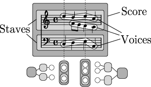

| [Inizio][Contenuti][Indice][ ? ] |
LilyPond — Manuale di apprendimento
|
Questo file fornisce un’introduzione alla versione di LilyPond 2.19.65. |
| 1. Tutorial | Le basi della composizione tipografica in LilyPond. | |
| 2. Notazione comunemente utilizzata | Come si scrive la notazione più comunemente utilizzata. | |
| 3. Concetti fondamentali | Concetti di base necessari per leggere gli altri manuali. | |
| 4. Modifica dell’output | Introduzione alla modifica dell’output. | |
Appendici | ||
|---|---|---|
| A. Modelli | Modelli già pronti. | |
| B. GNU Free Documentation License | Licenza di questo documento. | |
| C. Indice di LilyPond | ||
|
Questo manuale è disponibile in altri formati ed è integrato col resto della documentazione. Maggiori informazioni in Manuali. La documentazione completa si trova all’indirizzo http://lilypond.org/. |
| [ << Top ] | [Inizio][Contenuti][Indice][ ? ] | [ Notazione comunemente utilizzata >> ] | ||
| [ < Top ] | [ Su : Top ] | [ Compilare un file > ] | ||
1. Tutorial
Questo capitolo fornisce un’introduzione di base all’uso di LilyPond.
| 1.1 Compilare un file | ||
| 1.2 Come scrivere i file di input | ||
| 1.3 Gestire gli errori | ||
| 1.4 Come leggere i manuali |
| [ << Tutorial ] | [Inizio][Contenuti][Indice][ ? ] | [ Notazione comunemente utilizzata >> ] | ||
| [ < Tutorial ] | [ Su : Tutorial ] | [ Inserire l'input > ] | ||
1.1 Compilare un file
| 1.1.1 Inserire l’input | ||
| 1.1.2 MacOS X | ||
| 1.1.3 Windows | ||
| 1.1.4 Linea di comando |
| [ << Tutorial ] | [Inizio][Contenuti][Indice][ ? ] | [ Notazione comunemente utilizzata >> ] | ||
| [ < Compilare un file ] | [ Su : Compilare un file ] | [ Generare l'output > ] | ||
1.1.1 Inserire l’input
| Generare l’output |
“Compilazione” è il termine usato per indicare l’elaborazione di un file di input in formato LilyPond per produrre uno o più file di output. I file di output generalmente sono PDF (per la stampa e la visualizzazione), MIDI (per la riproduzione audio) e PNG (per l’utilizzo online). I file di input di LilyPond sono semplici file di testo.
Questo esempio mostra un semplice file di input:
\version "2.19.65"
{
c' e' g' e'
}
L’output grafico è:
Nota: Le note e i testi nel file LilyPond devono essere sempre scritti tra { parentesi graffe }. Per evitare ambiguità, le parentesi dovrebbero essere delimitate da degli spazi, a meno che non si trovino all’inizio o alla fine di una linea. Può darsi che in alcuni esempi di questo manuale le parentesi verranno omesse, ma non dimenticarle nella tua musica! Per maggiori informazioni sull’aspetto degli esempi nel manuale, si veda Come leggere i manuali.
Inoltre, l’input di LilyPond è sensibile alle maiuscole. ‘{ c d e }’ è un input valido; ‘{ C D E }’ invece produrrà un messaggio di errore.
| [ << Tutorial ] | [Inizio][Contenuti][Indice][ ? ] | [ Notazione comunemente utilizzata >> ] | ||
| [ < Inserire l'input ] | [ Su : Inserire l'input ] | [ MacOS X > ] | ||
Generare l’output
Come generare l’output di LilyPond dipende dal tuo sistema operativo e dai programmi che usi.
-
 MacOS X (grafico)
MacOS X (grafico)
-
 Microsoft Windows (grafico)
Microsoft Windows (grafico)
-

 Tutti i sistemi operativi (linea di comando)
Tutti i sistemi operativi (linea di comando)
Si noti che sono disponibili molti altri editor di testo con un miglior supporto per LilyPond. Per maggiori informazioni, si veda Editing facilitato.
Nota: La prima volta che si esegue LilyPond la compilazione potrà richiedere uno o due minuti perché tutti i font di sistema devono essere prima analizzati. In seguito, LilyPond sarà molto più veloce!
| [ << Tutorial ] | [Inizio][Contenuti][Indice][ ? ] | [ Notazione comunemente utilizzata >> ] | ||
| [ < Generare l'output ] | [ Su : Compilare un file ] | [ Windows > ] | ||
1.1.2 MacOS X
Nota: Queste istruzioni presumono che tu stia usando il programma LilyPond. Se stai usando uno dei programmi descritti in Editing facilitato, in caso di problemi consulta la documentazione di quei programmi.
Passo 1. Crea il tuo file ‘.ly’
Clicca due volte su LilyPond.app, si aprirà un file di esempio.

Dai menu in cima a sinistra dello schermo seleziona
File > Salva.

Scegli un nome per il tuo file, ad esempio ‘test.ly’.

Passo 2. Compila (con LilyPad)
Dagli stessi menu seleziona
Compile > Typeset.

Si aprirà una nuova finestra che mostra i messaggi di log della compilazione del file che hai appena salvato.

Passo 3. Visualizza l’output
Quando la compilazione è finita, un file PDF con lo stesso nome del file originale viene creato e automaticamente aperto nel visualizzatore PDF predefinito, che lo mostrerà sullo schermo.

Altri comandi
Per creare nuovi file per LilyPond, comincia col selezionare
File > New

oppure File > Open per aprire e modificare file esistenti che
hai salvato precedentemente.

Devi salvare qualsiasi nuova modifica fatta al file prima di cliccare
Compile > Typeset e se il file PDF non compare controlla se
ci sono degli errori nella finestra dei messaggi di log.
Se non stai usando il visualizzatore d’anteprima PDF incluso nel sistema operativo del Mac e un file PDF generato da una compilazione precedente è aperto, qualsiasi compilazione successiva potrebbe non riuscire a generare un PDF aggiornato finché non chiudi l’originale.
| [ << Tutorial ] | [Inizio][Contenuti][Indice][ ? ] | [ Notazione comunemente utilizzata >> ] | ||
| [ < MacOS X ] | [ Su : Compilare un file ] | [ Linea di comando > ] | ||
1.1.3 Windows
Nota: Queste istruzioni presumono che tu stia usando l’editor LilyPad incluso nel programma. Se stai usando uno dei programmi descritti in Editing facilitato, in caso di problemi nel compilare un file consulta la documentazione di quei programmi.
Passo 1. Crea il tuo file ‘.ly’
Clicca due volte sull’icona di LilyPond sulla scrivania e si aprirà un file di esempio.

Dai menu che appaiono in cima al file di esempio seleziona
File > Salva come. Non usare File > Salva
per il file di esempio perché non funzionerà finché non gli darai
un nome di file valido per LilyPond.

Scegli un nome per il tuo file, ad esempio ‘test.ly’.

Passo 2. Compila
Per trasformare il file LilyPond in una partitura devi compilarlo. Ci sono vari modi per farlo: il trascina e rilascia (drag and drop), il clic destro, il doppio clic o la linea di comando (nel riquadro del terminale DOS). Vediamo intanto i primi tre.
1. Trascinare e rilasciare il file sull’icona LilyPond che si trova nel desktop.

Sembrerà che non stia accadendo niente, ma dopo pochi secondi dovresti vedere due nuovi file sul desktop: ‘test.log’ e ‘test.pdf’.
2. Cliccare col tasto destro sul file e dal menu contestuale a comparsa scegliere
Generate PDF.

3. O semplicemente cliccare due volte su ‘test.ly’.
Passo 3. Visualizza l’output
‘test.pdf’ contiene il file ‘test.ly’ compilato. Cliccalo due volte e si dovrebbe aprire in un visualizzatore PDF:

Altri comandi
Per creare un nuovo file, per prima cosa seleziona File > Nuovo se
hai aperto un file creato in precedenza oppure File > Apri
per aprire e modificare i file che hai salvato prima. Puoi modificare
un file anche facendo un clic destro e selezionando Edit Source.

Devi salvare qualsiasi nuova modifica prima di compilare. Se il file PDF non viene creato o l’output non è quello che ti aspetti, controlla se ci sono degli errori nel file di log che sarà stato creato durante il tentativo di compilazione.

Questo file di log viene sovrascritto ogni volta che compili il file LilyPond.
Se visualizzi il file in un lettore PDF, devi chiudere il PDF se desideri provare una nuova compilazione, perché potrebbe non riuscire a creare il nuovo file PDF mentre è ancora aperto per la visualizzazione.

| [ << Tutorial ] | [Inizio][Contenuti][Indice][ ? ] | [ Notazione comunemente utilizzata >> ] | ||
| [ < Windows ] | [ Su : Compilare un file ] | [ Come scrivere i file di input > ] | ||
1.1.4 Linea di comando
Nota: Queste istruzioni presumono che tu abbia familiarità con i programmi a linea di comando. Se stai usando uno dei programmi descritti in Editing facilitato, in caso di problemi nel compilare un file consulta la documentazione di quei programmi.
Passo 1. Crea il tuo file ‘.ly’
Crea un file di testo chiamato ‘test.ly’ e scrivi:
\version "2.18.2"
{
c' e' g' e'
}
Passo 2. Compila (da linea di comando)
Per elaborare ‘test.ly’, scrivi il seguente comando nel terminale:
lilypond test.ly
Vedrai qualcosa di simile a questo:
GNU LilyPond 2.18.2 Processing `test.ly' Parsing... Interpreting music... Preprocessing graphical objects... Solving 1 page-breaking chunks...[1: 1 pages] Drawing systems... Layout output to `test.ps'... Converting to `./test.pdf'... Success: compilation successfully completed
Passo 3. Visualizza l’output
Puoi visualizzare o stampare il file ‘test.pdf’.
| [ << Tutorial ] | [Inizio][Contenuti][Indice][ ? ] | [ Notazione comunemente utilizzata >> ] | ||
| [ < Linea di comando ] | [ Su : Tutorial ] | [ Notazione semplice > ] | ||
1.2 Come scrivere i file di input
Questa sezione introduce le basi della sintassi di LilyPond e ha l’obiettivo di aiutarti ad iniziare a scrivere i file di input.
| 1.2.1 Notazione semplice | ||
| 1.2.2 Lavorare sui file di input |
| [ << Tutorial ] | [Inizio][Contenuti][Indice][ ? ] | [ Notazione comunemente utilizzata >> ] | ||
| [ < Come scrivere i file di input ] | [ Su : Come scrivere i file di input ] | [ Altezze > ] | ||
1.2.1 Notazione semplice
| Altezze | ||
| Durate (ritmi) | ||
| Pause | ||
| Indicazione di tempo | ||
| Indicazioni di tempo | ||
| Chiave | ||
| Tutto insieme |
LilyPond aggiungerà automaticamente alcuni elementi della notazione. Nell’esempio seguente, abbiamo specificato soltanto quattro note, ma LilyPond ha aggiunto una chiave, il tempo e le durate.
{ c' e' g' e' }
![[image of music]](5f/lily-9dc23fce.png)
Questo comportamento può essere modificato, ma nella maggior parte dei casi questi valori sono utili.
| [ << Tutorial ] | [Inizio][Contenuti][Indice][ ? ] | [ Notazione comunemente utilizzata >> ] | ||
| [ < Notazione semplice ] | [ Su : Notazione semplice ] | [ Durate (ritmi) > ] | ||
Altezze
Glossario musicale: altezza, intervallo, scala, Do centrale, ottava, alterazione.
LilyPond usa lettere minuscole per indicare le altezze. Le lettere da
c a b denotano le altezze nella
‘piccola ottava’ sotto il Do centrale. L’aggiunta dei
suffissi ' o , indica ottave più alte o più basse.
Ecco una scala che inizia con un Do centrale, e un arpeggio:
{ c' d' e' f' g' a' b' c'' g c' e' g' c'' e'' g'' c''' }
![[image of music]](0a/lily-f21e674c.png)
Il modo più semplice per inserire le note è usare il modo \relative
(relativo). In questo modo, l’ottava viene scelta automaticamente in
base al principio per cui la nota che segue deve essere posizionata vicino
a quella precedente, ovvero deve essere posizionata nell’ottava che si trova
entro tre spazi di pentagramma dalla nota precedente. Per iniziare, scriveremo
il pezzo musicale più elementare, una scala, in cui ogni nota
si trova entro una distanza di appena uno spazio di pentagramma dalla nota precedente.
\relative { c' d e f g a b c }
![[image of music]](e0/lily-e05485e5.png)
La nota iniziale è un Do centrale, specificato da c'. Ogni
nota successiva viene posta il più vicino possibile alla nota precedente – in
altre parole, la prima c è il Do più vicino al Do centrale. Questo è
seguito dal Re più vicino alla nota precedente. Possiamo creare melodie che
hanno intervalli più ampi, sempre usando soltanto il modo \relative:
\relative { d' f a g c b f d }
![[image of music]](fd/lily-445d38df.png)
Nell’esempio precedente, la prima nota – il d' con un segno ' – è
il Re nell’ottava che inizia dal Do centrale e va su fino al Si.
Do centrale.
Se si aggiungono (o si rimuovono) apostrofi ' o virgole , dalla
prima nota, possiamo cambiare l’ottava di partenza:
\relative { e'' c a c }
![[image of music]](64/lily-0ff293f7.png)
Il modo relativo all’inizio può apparire disorientante, ma è il sistema più semplice per inserire gran parte delle melodie. Vediamo come questo calcolo relativo funziona in pratica. Se si parte da un Si, che si trova sulla linea centrale in chiave di violino, si possono raggiungere un Do, un Re e un Mi entro 3 spazi di pentagramma andando in su, e un La, un Sol e un Fa entro 3 spazi di pentagramma andando in giù. Quindi se la nota che segue il Si è un Do, un Re o un Mi, si troverà sopra il Si, mentre il La, il Sol o il Fa si troveranno sotto.
\relative { b' c % c is 1 staff space up, so is the c above b d % d is 2 up or 5 down, so is the d above b e % e is 3 up or 4 down, so is the e above b a % a is 6 up or 1 down, so is the a below b g % g is 5 up or 2 down, so is the g below b f % f is 4 up or 3 down, so is the f below }
![[image of music]](a0/lily-a1312733.png)
Accade esattamente lo stesso quando qualcuna di queste note ha un diesis o un bemolle. Le Alterazioni sono completamente ignorate nel calcolo della posizione relativa. Viene fatto lo stesso conteggio dello spazio del pentagramma da una nota in una qualsiasi altra posizione sul pentagramma.
Per inserire intervalli che sono più ampi di tre spazi di pentagramma, si può
alzare l’ottava aggiungendo al nome della nota una virgoletta
ad apice singolo ' (o apostrofo). Si può abbassare l’ottava
aggiungendo al nome della nota una virgola ,.
\relative { a' a, c' f, g g'' a,, f' }
![[image of music]](b8/lily-03f1289a.png)
Per cambiare una nota di due (o più!) ottave, si usano multipli di
'' o ,, – ma stai attento a usare due virgolette ad
apici semplici '' e non quelle a doppi apici " !
| [ << Tutorial ] | [Inizio][Contenuti][Indice][ ? ] | [ Notazione comunemente utilizzata >> ] | ||
| [ < Altezze ] | [ Su : Notazione semplice ] | [ Pause > ] | ||
Durate (ritmi)
Glossario musicale: coda, durata, semibreve, minima, semiminima, nota puntata.
La durata di una nota viene indicata da un numero che segue
il nome della nota: 1 per una semibreve, 2 per
una minima, 4 per una semiminima e
così via. Le Code vengono aggiunte in automatico.
Se non si specifica una durata, si usa la durata precedente anche per la nota successiva. La durata predefinita della prima nota è di un quarto.
\relative { a'1 a2 a4 a8 a a16 a a a a32 a a a a64 a a a a a a a a2 }
![[image of music]](70/lily-d1c83b39.png)
Per creare note puntate, aggiungi un punto . al
numero di durata. La durata di una nota puntata deve essere dichiarata
esplicitamente (cioè con un numero).
\relative { a' a a4. a8 a8. a16 a a8. a8 a4. }
![[image of music]](2d/lily-f62d8e44.png)
| [ << Tutorial ] | [Inizio][Contenuti][Indice][ ? ] | [ Notazione comunemente utilizzata >> ] | ||
| [ < Durate (ritmi) ] | [ Su : Notazione semplice ] | [ Indicazione di tempo > ] | ||
Pause
Glossario musicale: pausa.
Una pausa viene inserita proprio come una nota ma col nome
r :
\relative { a'4 r r2 r8 a r4 r4. r8 }
![[image of music]](db/lily-01f801da.png)
| [ << Tutorial ] | [Inizio][Contenuti][Indice][ ? ] | [ Notazione comunemente utilizzata >> ] | ||
| [ < Pause ] | [ Su : Notazione semplice ] | [ Indicazioni di tempo > ] | ||
Indicazione di tempo
Glossario musicale: indicazione di tempo.
Il tempo si imposta con il comando \time:
\relative { \time 3/4 a'4 a a \time 6/8 a4. a \time 4/4 a4 a a a }
![[image of music]](ed/lily-f9bad0c1.png)
| [ << Tutorial ] | [Inizio][Contenuti][Indice][ ? ] | [ Notazione comunemente utilizzata >> ] | ||
| [ < Indicazione di tempo ] | [ Su : Notazione semplice ] | [ Chiave > ] | ||
Indicazioni di tempo
Glossario musicale: indicazione di tempo, metronomo.
L’ indicazione di tempo e l’ indicazione metronomica si
impostano col comando \tempo:
\relative { \time 3/4 \tempo "Andante" a'4 a a \time 6/8 \tempo 4. = 96 a4. a \time 4/4 \tempo "Presto" 4 = 120 a4 a a a }
![[image of music]](64/lily-cbd0b303.png)
| [ << Tutorial ] | [Inizio][Contenuti][Indice][ ? ] | [ Notazione comunemente utilizzata >> ] | ||
| [ < Indicazioni di tempo ] | [ Su : Notazione semplice ] | [ Tutto insieme > ] | ||
Chiave
Glossario musicale: chiave.
La chiave si imposta con il comando \clef:
\relative { \clef treble c'1 \clef alto c1 \clef tenor c1 \clef bass c1 }
![[image of music]](cd/lily-c8167b0d.png)
| [ << Tutorial ] | [Inizio][Contenuti][Indice][ ? ] | [ Notazione comunemente utilizzata >> ] | ||
| [ < Chiave ] | [ Su : Notazione semplice ] | [ Lavorare sui file di input > ] | ||
Tutto insieme
Ecco un piccolo esempio che mostra tutti questi elementi insieme:
\relative { \clef "bass" \time 3/4 \tempo "Andante" 4 = 120 c,2 e8 c' g'2. f4 e d c4 c, r }
![[image of music]](70/lily-cc4a7ea5.png)
Vedi anche
Guida alla notazione: Inserimento delle altezze, Inserimento delle durate, Inserimento delle pause, Indicazione di tempo, Chiave.
| [ << Tutorial ] | [Inizio][Contenuti][Indice][ ? ] | [ Notazione comunemente utilizzata >> ] | ||
| [ < Tutto insieme ] | [ Su : Come scrivere i file di input ] | [ Gestire gli errori > ] | ||
1.2.2 Lavorare sui file di input
I file di input di LilyPond sono simili ai file sorgenti di molti comuni
linguaggi di programmazione. Contengono una dichiarazione di versione, sono
sensibili alle maiuscole, e in generale gli spazi bianchi vengono ignorati. Le
espressioni musicali si formano con parentesi graffe { }, e i commenti
sono indicati con % o %{ … %} .
Se le frasi precedenti ti sembrano assurde, non preoccuparti! Spiegheremo cosa significano tutti questi termini:
-
Dichiarazione di versione:
Ogni file LilyPond deve contenere una dichiarazione di versione. Una
dichiarazione di versione è una linea che indica la versione di LilyPond per la
quale il file è stato scritto, come nel seguente esempio:
\version "2.19.65"
Per convenzione, la dichiarazione di versione viene posta all’inizio del file LilyPond.
La dichiarazione di versione è importante per almeno due ragioni. Primo, permette l’aggiornamento automatico del file di input file via via che la sintassi di LilyPond cambia. Secondo, indica la versione di LilyPond richiesta per compilare il file.
Se la dichiarazione di versione è omessa dal file di input, LilyPond mostra un avvertimento durante la compilazione del file.
-
Sensibile alle maiuscole:
distingue tra lettere in minuscolo (es:
a, b, s, t) o in maiuscolo (es:A, B, S, T). Le note sono in minuscolo:{ c d e }è un input valido;{ C D E }causerà un messaggio di errore. -
Insensibile agli spazi:
non importa quanti spazi (o tabulazioni o nuove linee) aggiungi.
‘{ c4 d e }’ ha lo stesso significato di
‘{ c4 d e }’ e:
{ c4 d e }Certo, l’esempio precedente è scomodo da leggere. Una buona regola pratica è indentare i blocchi di codice con una tabulazione o due spazi:
{ c4 d e }Tuttavia, uno spazio bianco è necessario per separare molti elementi sintattici gli uni dagli altri. In altre parole, lo spazio bianco può essere aggiunto, ma non può essere eliminato. Dal momento che uno spazio bianco mancante può dare adito a strani errori, si consiglia di inserire sempre uno spazio bianco prima e dopo ogni elemento sintattico, ad esempio, prima e dopo ogni parentesi graffa.
-
Espressioni:
ogni parte dell’input di LilyPond deve avere { parentesi graffe }
intorno. Queste parentesi dicono a LilyPond che l’input costituisce
un’espressione musicale singola, proprio come le parentesi
()in matematica. Per evitare ambiguità, le parentesi dovrebbero essere racchiuse tra spazi, a meno che non si trovino all’inizio o alla fine di una linea.Anche un comando di LilyPond seguito da un’espressione semplice in parentesi (come ‘
\relative c' { … }’) conta come un’espressione musicale singola. -
Commenti:
un commento è un appunto per il lettore umano dell’input musicale; viene
ignorato quando l’input viene analizzato, dunque non ha alcun effetto
sull’output finale. Ci sono due tipi di commenti. Il simbolo di percentuale
%introduce un commento di linea; tutto quello che sta dopo%su quella linea verrà ignorato. Per convenzione, un commento di linea viene posto sopra il codice a cui si riferisce.a4 a a a % questo commento si riferisce ai Si b2 b
Un commento di blocco segna come commento un’intera sezione di input musicale. Tutto ciò che è compreso tra
%{e%}viene ignorato. Tuttavia, i commenti di blocco non si ‘annidano’. Ovvero non si può inserire un commento di blocco dentro a un altro commento di blocco. Se ci provi, il primo%}interromperà entrambi i commenti di blocco. Il seguente frammento mostra gli usi possibili per i commenti:% ecco le note di "Ah! Vous dirai-je, Maman" c4 c g' g a a g2 %{ Questa linea e le note sotto vengono ignorate, perché si trovano in un commento di blocco. f4 f e e d d c2 %}
| [ << Tutorial ] | [Inizio][Contenuti][Indice][ ? ] | [ Notazione comunemente utilizzata >> ] | ||
| [ < Lavorare sui file di input ] | [ Su : Tutorial ] | [ Consigli generali per la risoluzione dei problemi > ] | ||
1.3 Gestire gli errori
Talvolta LilyPond non genera l’output che desideri. Questa sezione fornisce alcuni link che possono aiutarti a risolvere i problemi che potrai incontrare.
| 1.3.1 Consigli generali per la risoluzione dei problemi | ||
| 1.3.2 Alcuni errori comuni |
| [ << Tutorial ] | [Inizio][Contenuti][Indice][ ? ] | [ Notazione comunemente utilizzata >> ] | ||
| [ < Gestire gli errori ] | [ Su : Gestire gli errori ] | [ Alcuni errori comuni > ] | ||
1.3.1 Consigli generali per la risoluzione dei problemi
La risoluzione dei problemi in LilyPond può essere un compito impegnativo per le persone che sono abituate a un’interfaccia grafica, perché è possibile creare dei file di input non validi. Quando questo accade, un approccio logico è il modo migliore per identificare e risolvere il problema. Alcune linee guida che ti aiutano a imparare questo sono indicate in Risoluzione dei problemi.
| [ << Tutorial ] | [Inizio][Contenuti][Indice][ ? ] | [ Notazione comunemente utilizzata >> ] | ||
| [ < Consigli generali per la risoluzione dei problemi ] | [ Su : Gestire gli errori ] | [ Come leggere i manuali > ] | ||
1.3.2 Alcuni errori comuni
Ci sono alcuni errori comuni che sono difficili da risolvere basandosi soltanto sui messaggi di errore che compaiono. Questi sono descritti in Errori comuni.
| [ << Tutorial ] | [Inizio][Contenuti][Indice][ ? ] | [ Notazione comunemente utilizzata >> ] | ||
| [ < Alcuni errori comuni ] | [ Su : Tutorial ] | [ Materiale omesso > ] | ||
1.4 Come leggere i manuali
Questa sezione spiega come leggere la documentazione in modo efficiente e introduce alcune utili funzionalità interattive che sono disponibili nella versione online della documentazione.
| 1.4.1 Materiale omesso | ||
| 1.4.2 Esempi cliccabili | ||
| 1.4.3 Panoramica dei manuali |
| [ << Tutorial ] | [Inizio][Contenuti][Indice][ ? ] | [ Notazione comunemente utilizzata >> ] | ||
| [ < Come leggere i manuali ] | [ Su : Come leggere i manuali ] | [ Esempi cliccabili > ] | ||
1.4.1 Materiale omesso
L’input di LilyPond deve essere compreso dai segni { } o da
‘\relative { … }’, come abbiamo visto in
Lavorare sui file di input. Nel resto di questo manuale alcuni
esempi brevi ometteranno questi segni. Per replicare questi esempi, puoi
copiare l’input mostrato e incollarlo tra { e } nel tuo
file di input:
{
…inserire qui l'esempio…
}
Ricorda che i file LilyPond devono avere una dichiarazione di
versione (\version). Nei manuali la dichiarazione è omessa
perché gli esempi sono frammenti di codice e non file completi.
Ma dovresti prendere l’abitudine di includerla nei tuoi file.
| [ << Tutorial ] | [Inizio][Contenuti][Indice][ ? ] | [ Notazione comunemente utilizzata >> ] | ||
| [ < Materiale omesso ] | [ Su : Come leggere i manuali ] | [ Panoramica dei manuali > ] | ||
1.4.2 Esempi cliccabili
Nota: Queste funzionalità sono disponibili soltanto nei manuali in HTML.
Molte persone imparano ad usare un programma provando e smanettando. Questo è possibile anche con LilyPond. Se clicchi su un’immagine nella versione HTML di questo manuale, vedrai l’esatto input LilyPond usato per generare quell’immagine. Provalo su questa immagine:
Tagliando e copiando quel che si trova nella sezione “ly snippet”, puoi ricavare un modello di partenza per sperimentare. Per vedere esattamente lo stesso output (larghezza della linea e tutto il resto), copia tutto da “Start cut-&-pastable section” alla fine del file.
| [ << Tutorial ] | [Inizio][Contenuti][Indice][ ? ] | [ Notazione comunemente utilizzata >> ] | ||
| [ < Esempi cliccabili ] | [ Su : Come leggere i manuali ] | [ Notazione comunemente utilizzata > ] | ||
1.4.3 Panoramica dei manuali
La documentazione su LilyPond è vasta. I nuovi utenti talvolta sono confusi su quali parti dovrebbero leggere, e ogni tanto saltano la lettura di parti fondamentali.
Nota: Non saltare le parti importanti della documentazione. Altrimenti ti risulterà molto più difficile comprendere le sezioni successive.
- Prima di fare qualsiasi tentativo: leggi il Tutorial e la Notazione comunemente utilizzata del Manuale di apprendimento. Se ti imbatti in termini musicali che non conosci, cercali nel Glossario.
- Prima di tentare di scrivere un pezzo musicale completo: leggi i Concetti fondamentali del Manuale di apprendimento. Dopo puoi dare un’occhiata alle sezioni rilevanti della Guida alla notazione.
- Prima di cercare di cambiare l’output predefinito: leggi Modifica dell’output del Manuale di apprendimento.
- Prima di iniziare un grande progetto: leggi il documento Consigli su come scrivere i file del manuale di Uso del programma.
| [ << Tutorial ] | [Inizio][Contenuti][Indice][ ? ] | [ Concetti fondamentali >> ] | ||
| [ < Panoramica dei manuali ] | [ Su : Top ] | [ Notazione su un solo pentagramma > ] | ||
2. Notazione comunemente utilizzata
Questo capitolo spiega come creare dei belli spartiti che facciano uso della notazione musicale comunemente utilizzata, seguendo il materiale esposto nel Tutorial.
| 2.1 Notazione su un solo pentagramma | ||
| 2.2 Note simultanee | ||
| 2.3 Canzoni | ||
| 2.4 Ritocchi finali |
2.1 Notazione su un solo pentagramma
Questa sezione presenta la notazione comunemente usata per una singola voce su un solo pentagramma.
| [ << Notazione comunemente utilizzata ] | [Inizio][Contenuti][Indice][ ? ] | [ Concetti fondamentali >> ] | ||
| [ < Notazione su un solo pentagramma ] | [ Su : Notazione su un solo pentagramma ] | [ Stanghette > ] | ||
2.1.1 Stanghette e controlli di battuta
| Stanghette | ||
| Controlli di battuta |
Stanghette
Le stanghette singole vengono aggiunte automaticamente, quindi non occorre
aggiungerle manualmente. Si possono inserire altri tipi di stanghette
col comando \bar, per esempio \bar "||" per una stanghetta
doppia, o \bar "|." per una stanghetta finale. La lista completa
delle stanghette si trova in
Stanghette.
\relative { g'1 e1 \bar "||" c2. c'4 \bar "|." }
![[image of music]](29/lily-1154e7df.png)
| [ << Notazione comunemente utilizzata ] | [Inizio][Contenuti][Indice][ ? ] | [ Concetti fondamentali >> ] | ||
| [ < Stanghette ] | [ Su : Stanghette e controlli di battuta ] | [ Altezze e armature di chiave > ] | ||
Controlli di battuta
I controlli di battuta, pur se non strettamente necessari, dovrebbero
essere usati nel codice di input per mostrare dove si vuole che cadano le
stanghette. Vengono inseriti col simbolo della barra verticale, |.
Grazie ai controlli di battuta, il programma può verificare che tu abbia inserito
delle durate che facciano sì che ogni misura raggiunga la giusta
durata. I controlli di battuta rendono anche il codice di input più
facile da leggere, perché aiutano a tenere tutto in ordine.
\relative { g'1 | e1 | c2. c' | g4 c g e | c4 r r2 | }
![[image of music]](b3/lily-0ab29ebd.png)
Compilando questo codice dovrebbe apparire un avvertimento nell’output del terminale:
attenzione: controllo di battuta fallito a: 1/2
g'1 | e1 | c2. c'
| g4 c g e | c4 r r2 |
Sebbene in questo semplice esempio la durata mancante sia evidente nella
partitura generata, l’avvertimento nel terminale è molto più efficace
nel guidare l’attenzione al 4 mancante nella terza battuta.
Vedi anche
Guida alla notazione: Controlli di battuta e del numero di battuta.
| [ << Notazione comunemente utilizzata ] | [Inizio][Contenuti][Indice][ ? ] | [ Concetti fondamentali >> ] | ||
| [ < Controlli di battuta ] | [ Su : Notazione su un solo pentagramma ] | [ Alterazioni dell'altezza > ] | ||
2.1.2 Altezze e armature di chiave
| Alterazioni dell’altezza | ||
| Armature di chiave | ||
| Attenzione: armature di chiave e altezze |
Nota: I nuovi utenti sono spesso confusi riguardo a questi concetti – leggi il messaggio di avviso in fondo a questa pagina, soprattutto se non hai una buona conoscenza della teoria musicale!
| [ << Notazione comunemente utilizzata ] | [Inizio][Contenuti][Indice][ ? ] | [ Concetti fondamentali >> ] | ||
| [ < Altezze e armature di chiave ] | [ Su : Altezze e armature di chiave ] | [ Armature di chiave > ] | ||
Alterazioni dell’altezza
Glossario musicale: diesis, bemolle, doppio diesis, doppio bemolle, alterazione o accidente.
I nomi delle note in LilyPond identificano le altezze. Per esempio, c
indica sempre il Do naturale, indipendentemente dall’armatura di chiave.
Un diesis si ottiene aggiungendo il suffisso is al nome della nota,
e un bemolle aggiungendo es. Come puoi
immaginare, un doppio diesis o un doppio bemolle
si ottengono aggiungendo isis o eses. Questa sintassi
deriva dalle convenzioni per i nomi delle note presenti nelle lingue
nordiche e germaniche, come il tedesco e l’olandese. Per usare altri
nomi per le alterazioni, si veda
Nomi delle note in altre lingue.
\relative { cis''4 ees fisis, aeses }
![[image of music]](fe/lily-93d97767.png)
Armature di chiave
Glossario musicale: armatura di chiave, maggiore, minore.
L’ armatura di chiave viene impostata col comando \key
seguito da un’altezza e da \major o \minor.
\relative { \key d \major d'4 fis a c | \bar "||" \key c \minor c,4 ees g b | }
![[image of music]](bc/lily-f1077165.png)
Attenzione: armature di chiave e altezze
Glossario musicale: alterazione, armatura di chiave, altezza, bemolle, bequadro, diesis, trasposizione.
LilyPond distingue tra contenuto musicale e la sua rappresentazione
grafica. Un input come d4 e fis2 definisce le altezze e le
durate delle note, ovvero il contenuto musicale. L’ armatura di chiave
fa parte della rappresentazione grafica. Essa imposta anche le regole
che stabiliscono come una nota debba apparire nell’output. LilyPond
confronta ogni altezza con l’armatura di chiave per scegliere se
far apparire o meno una alterazione.
Il comando \key imposta l’ armatura di chiave, che ha
effetto sulla rappresentazione grafica, ma non cambia l’altezza
assegnata a una nota, come un c nell’input.
In questo esempio:
\relative { \key d \major cis''4 d e fis }
![[image of music]](4e/lily-74add346.png)
Nessuna nota ha un’alterazione rispetto all’armatura di chiave, ma devi comunque aggiungere
is e scrivere cis e fis nel file di input.
Il codice b non significa “stampa un punto nero esattamente
nella linea centrale del pentagramma.” Piuttosto, significa “c’è una
nota con altezza Si-bequadro.” Nella tonalità di La bemolle maggiore,
deve avere un’alterazione:
\relative { \key aes \major aes'4 c b c }
![[image of music]](f8/lily-4994d993.png)
Ogni volta che inserisci un’altezza che corrisponde a un tasto nero del
pianoforte, devi aggiungere -is o -es al
nome della nota.
Aggiungere esplicitamente tutte le alterazioni richiederà un po’ più di lavoro in fase di scrittura, ma il vantaggio è che la trasposizione è più semplice, e le alterazioni possono essere prodotte usando diverse convenzioni. Per alcuni esempi che mostrano come sia possibile produrre delle alterazioni in base a regole diverse, si veda Alterazioni automatiche.
Vedi anche
Guida alla notazione: Nomi delle note in altre lingue, Alterazioni, Alterazioni automatiche, Armatura di chiave.
2.1.3 Legature di valore e di portamento
| Legature di valore | ||
| Legature di portamento | ||
| Legature di frase | ||
| Attenzione: legature di portamento vs. legature di valore |
Legature di valore
Glossario musicale: legatura di valore.
Una legatura di valore si ottiene apponendo una tilde ~ alla
prima delle due note legate.
\relative { g'4~ 4 c2~ | 4~ 8 a~ 2 | }
![[image of music]](fa/lily-10ce21ba.png)
Quanndo l’altezza non cambia, come sempre accade nel caso di note legate con legatura di valore, le altezze successive possono essere omesse e basta specificare la sola durata:
\relative { g'4~ 4 c2~ | 4~ 8 a~ 2 | }
Questa scorciatoia può essere utile in altre situazioni in cui il ritmo
cambia senza che l’altezza cambi; ma ricorda che un’altezza isolata seguita
da uno spazio e una durata isolata verrà interpretata come una singola nota.
In altre parole, c4 a 8 8 verrebbe interpretato come c4 a8 a8,
non come c4 a4 a8 a8. Scrivere invece c4 a4 8 8 .
| [ << Notazione comunemente utilizzata ] | [Inizio][Contenuti][Indice][ ? ] | [ Concetti fondamentali >> ] | ||
| [ < Legature di valore ] | [ Su : Legature di valore e di portamento ] | [ Legature di frase > ] | ||
Legature di portamento
Glossario musicale: legatura di portamento.
Una legatura di portamento è una linea curva che collega più note. La
nota iniziale e quella finale sono indicate rispettivamente con
( e ).
\relative { d''4( c16) cis( d e c cis d) e( d4) }
![[image of music]](71/lily-e87707a7.png)
Legature di frase
Glossario musicale: legatura di portamento, legatura di frase.
Le legature di portamento che indicano una frase più lunga
possono essere inserite con \( e \). E’ possibile avere allo
stesso tempo sia le legature di portamento sia le legature di
frase.
\relative { g'4\( g8( a) b( c) b4\) }
![[image of music]](bc/lily-494146a6.png)
| [ << Notazione comunemente utilizzata ] | [Inizio][Contenuti][Indice][ ? ] | [ Concetti fondamentali >> ] | ||
| [ < Legature di frase ] | [ Su : Legature di valore e di portamento ] | [ Articolazione e dinamiche > ] | ||
Attenzione: legature di portamento vs. legature di valore
Glossario musicale: articolazione, legatura di portamento, legatura di valore.
Una legatura di portamento ha lo stesso aspetto di una legatura di valore, ma un significato diverso. Una legatura di valore rende semplicemente la nota più lunga, e può essere usata solo con coppie di note della stessa altezza. Le legature di portamento indicano l’articolazione delle note, e possono essere usate con ampi gruppi di note. Legature di valore e legature di portamento possono essere annidate le une dentro le altre.
\relative { c''4(~ c8 d~ 4 e) }
![[image of music]](16/lily-42e79084.png)
Vedi anche
Guida alla notazione: Legature di valore, Legature di portamento, Legature di frase.
2.1.4 Articolazione e dinamiche
| Articolazioni | ||
| Diteggiature | ||
| Dinamiche |
| [ << Notazione comunemente utilizzata ] | [Inizio][Contenuti][Indice][ ? ] | [ Concetti fondamentali >> ] | ||
| [ < Articolazione e dinamiche ] | [ Su : Articolazione e dinamiche ] | [ Diteggiature > ] | ||
Articolazioni
Glossario musicale: articolazione.
Le articolazioni di uso comune possono essere aggiunte a una nota
con una lineetta - e un singolo carattere:
\relative { c''4-^ c-+ c-- c-! c4-> c-. c2-_ }
![[image of music]](f3/lily-49c47224.png)
| [ << Notazione comunemente utilizzata ] | [Inizio][Contenuti][Indice][ ? ] | [ Concetti fondamentali >> ] | ||
| [ < Articolazioni ] | [ Su : Articolazione e dinamiche ] | [ Dinamiche > ] | ||
Diteggiature
Glossario musicale: diteggiatura.
Analogalmente, le indicazioni di diteggiatura possono essere
aggiunte a una nota con una lineetta (-) e il numero che si
vuole visualizzare:
\relative { c''4-3 e-5 b-2 a-1 }
Articolazioni e diteggiature solitamente sono posizionate verticalmente in automatico, ma
si può specificarne la direzione sostituendo la lineetta (-) con
^ (su) o _ (giù). Si possono usare anche articolazioni
multiple sulla stessa nota. Tuttavia, nella maggior parte dei casi è
meglio lasciare che sia LilyPond a determinare le direzioni delle articolazioni.
\relative { c''4_-^1 d^. f^4_2-> e^-_+ }
![[image of music]](1d/lily-0ef6d3be.png)
| [ << Notazione comunemente utilizzata ] | [Inizio][Contenuti][Indice][ ? ] | [ Concetti fondamentali >> ] | ||
| [ < Diteggiature ] | [ Su : Articolazione e dinamiche ] | [ Aggiungere il testo > ] | ||
Dinamiche
Glossario musicale: dinamiche, crescendo, decrescendo.
I segni di dinamica si ottengono aggiungendo alla nota i simboli (preceduti da un segno di barra invertita, o backslash):
\relative { c''4\ff c\mf c\p c\pp }
![[image of music]](4a/lily-5a24228c.png)
Crescendi e decrescendi iniziano coi
comandi \< e \>. Il seguente segno di dinamica, ad
esempio \ff, terminerà il (de)crescendo, oppure può essere usato
il comando \!:
\relative { c''4\< c\ff\> c c\! }
![[image of music]](3f/lily-9f2f0af7.png)
Vedi anche
Guida alla notazione: Articolazioni e abbellimenti, Indicazioni di diteggiatura, Dinamiche.
| [ << Notazione comunemente utilizzata ] | [Inizio][Contenuti][Indice][ ? ] | [ Concetti fondamentali >> ] | ||
| [ < Dinamiche ] | [ Su : Notazione su un solo pentagramma ] | [ Code automatiche e manuali > ] | ||
2.1.5 Aggiungere il testo
Puoi aggiungere del testo nei tuoi spartiti:
c''2^"espr" a'_"legato"
![[image of music]](dc/lily-b90f8a59.png)
Per aggiungere delle formattazioni puoi usare il comando \markup:
c''2^\markup { \bold espr } a'2_\markup { \dynamic f \italic \small { 2nd } \hspace #0.1 \dynamic p }
![[image of music]](17/lily-a45f1013.png)
Vedi anche
Guida alla notazione: Inserimento del testo.
| [ << Notazione comunemente utilizzata ] | [Inizio][Contenuti][Indice][ ? ] | [ Concetti fondamentali >> ] | ||
| [ < Aggiungere il testo ] | [ Su : Notazione su un solo pentagramma ] | [ Comandi di tempo avanzati > ] | ||
2.1.6 Code automatiche e manuali
Glossario musicale: travatura.
Tutte le travature vengono disegnate automaticamente:
\relative { a'8 ais d ees r d c16 b a8 }
![[image of music]](21/lily-d88566e4.png)
Se non ti piace il modo in cui vengono prodotte automaticamente le travature, è
possibile sovrascriverle manualmente. Per correggere soltanto una singola
travatura, indica la prima nota da raggruppare con [ e l’ultima con ].
\relative { a'8[ ais] d[ ees r d] c16 b a8 }
Se desideri disattivare il raggruppamento automatico, interamente o
per un’ampia sezione del brano, usa il comando \autoBeamOff
per disattivare il raggruppamento automatico e \autoBeamOn per
riattivarlo.
\relative { \autoBeamOff a'8 c b4 d8. c16 b4 | \autoBeamOn a8 c b4 d8. c16 b4 | }
![[image of music]](02/lily-88d3efdf.png)
Vedi anche
Guida alla notazione: Travature automatiche, Travature manuali.
| [ << Notazione comunemente utilizzata ] | [Inizio][Contenuti][Indice][ ? ] | [ Concetti fondamentali >> ] | ||
| [ < Code automatiche e manuali ] | [ Su : Notazione su un solo pentagramma ] | [ Battuta parziale > ] | ||
2.1.7 Comandi di tempo avanzati
| Battuta parziale | ||
| Gruppi irregolari | ||
| Abbellimenti |
| [ << Notazione comunemente utilizzata ] | [Inizio][Contenuti][Indice][ ? ] | [ Concetti fondamentali >> ] | ||
| [ < Comandi di tempo avanzati ] | [ Su : Comandi di tempo avanzati ] | [ Gruppi irregolari > ] | ||
Battuta parziale
Glossario musicale: anacrusis.
Un’ anacrusi può essere inserita con la parola chiave
\partial. Questa è seguita da una durata: \partial 4
è un’anacrusi di semiminima e \partial 8 di croma.
\relative { \partial 8 f''8 | c2 d | }
![[image of music]](08/lily-e5cf56e6.png)
| [ << Notazione comunemente utilizzata ] | [Inizio][Contenuti][Indice][ ? ] | [ Concetti fondamentali >> ] | ||
| [ < Battuta parziale ] | [ Su : Comandi di tempo avanzati ] | [ Abbellimenti > ] | ||
Gruppi irregolari
Glossario musicale: durata, gruppo irregolare.
I gruppi irregolari vengono preceduti dalla parola chiave
\tuplet. Questa richiede due argomenti: una frazione e un frammento
di musica. La frazione ha come numeratore il numero di note del
gruppo irregolare e come denominatore il numero di note che normalmente
occupa la stessa durata. Per le terzine ci sono tre note invece di
due, quindi una terzina ha 3/2 come frazione:
\relative { \tuplet 3/2 { f''8 g a } \tuplet 3/2 { c8 r c } \tuplet 3/2 { f,8 g16[ a g a] } \tuplet 3/2 { d4 a8 } }
![[image of music]](9f/lily-c39612b0.png)
| [ << Notazione comunemente utilizzata ] | [Inizio][Contenuti][Indice][ ? ] | [ Concetti fondamentali >> ] | ||
| [ < Gruppi irregolari ] | [ Su : Comandi di tempo avanzati ] | [ Note simultanee > ] | ||
Abbellimenti
Glossario musicale: abbellimenti, acciaccatura, appoggiatura.
Gli abbellimenti sono creati col comando \grace,
ma possono essere creati anche ponendo davanti a un’espressione
musicale le parole chiave \appoggiatura o \acciaccatura:
\relative {
c''2 \grace { a32 b } c2 |
c2 \appoggiatura b16 c2 |
c2 \acciaccatura b16 c2 |
}
Vedi anche
Guida alla notazione: Abbellimenti, Gruppi irregolari, Anacrusi.
| [ << Notazione comunemente utilizzata ] | [Inizio][Contenuti][Indice][ ? ] | [ Concetti fondamentali >> ] | ||
| [ < Abbellimenti ] | [ Su : Notazione comunemente utilizzata ] | [ Espressioni musicali > ] | ||
2.2 Note simultanee
Questa sezione spiega come inserire più note simultanee: molteplici strumenti, molteplici righi di pentagramma per un singolo strumento (es: piano), e accordi.
In musica per polifonia si intende la presenza di più di una voce in un brano. In LilyPond per polifonia si intende la presenza di più di una voce sullo stesso pentagramma.
| 2.2.1 Espressioni musicali | ||
| 2.2.2 Righi multipli | ||
| 2.2.3 Gruppi di pentagrammi | ||
| 2.2.4 Combinare le note negli accordi | ||
| 2.2.5 Polifonia su un singolo rigo |
| [ << Notazione comunemente utilizzata ] | [Inizio][Contenuti][Indice][ ? ] | [ Concetti fondamentali >> ] | ||
| [ < Note simultanee ] | [ Su : Note simultanee ] | [ Analogia espressioni matematiche > ] | ||
2.2.1 Espressioni musicali
Nei file di input di LilyPond, la musica è rappresentata dalle espressioni musicali. Anche una singola nota è un’espressione musicale:
a'4
![[image of music]](c7/lily-fca1a8cf.png)
Se si racchiude una nota tra parentesi si crea un’espressione musicale composta. In questo esempio abbiamo creato un’espressione musicale composta da due note:
\relative { a'4 g4 }
![[image of music]](1f/lily-897f983e.png)
Se si mette un gruppo di espressioni musicali (es: note) tra parentesi, significa che sono in sequenza (ovvero, ciascuna espressione segue la precedente). Il risultato è un’altra espressione musicale:
\relative { { a'4 g } f4 g }
![[image of music]](c0/lily-15d2aa6d.png)
| Analogia: le espressioni matematiche | ||
| Espressioni musicali simultanee: righi multipli | ||
| Espressioni musicali simultanee: rigo singolo |
Analogia: le espressioni matematiche
Questo meccanismo è analogo a quello delle formule matematiche: una grande formula può essere creata creando piccole formule. Tali formule sono chiamate espressioni, e possono contenere altre espressioni, così che sia possibile costruire a piacere espressioni grandi e complesse. Ad esempio,
1 1 + 2 (1 + 2) * 3 ((1 + 2) * 3) / (4 * 5)
Questa è una sequenza di espressioni, dove ogni espressione è racchiusa
in quella successiva (più grande). Le espressioni più semplici sono
i numeri, e quelle più grandi si ottengono combinando le espressioni con
gli operatori (come +, * e /) e le parentesi.
Come le espressioni matematiche, le espressioni musicali possono essere
annidate a qualsivoglia grado di profondità, e questo è indispensabile per
musica complessa come le partiture polifoniche.
Espressioni musicali simultanee: righi multipli
Glossario musicale: polifonia.
Questa tecnica è utile per la musica polifonica. Per inserire
della musica che abbia più voci o più linee di pentagramma, basta combinare
le espressioni in parallelo. Per indicare che le due voci devono suonare
contemporaneamente, basta inserire una combinazione simultanea di espressioni
musicali. Un’ espressione musicale ‘simultanea’ si forma racchiudendo le
espressioni all’interno di << e >>. Nel seguente
esempio, tre sequenze (tutte contenenti due note
separate) vengono combinate in simultanea:
<< \relative { a'2 g } \relative { f'2 e } \relative { d'2 b } >>
![[image of music]](1e/lily-5eddc727.png)
Si noti che abbiamo indentato ogni livello dell’input con una diversa quantità di spazi. LilyPond non si preoccupa di quanto spazio c’è all’inizio di una linea, tuttavia indentare il codice di LilyPond in questo modo lo rende molto più semplice da leggere per l’essere umano.
Nota: ogni nota è relativa alla nota precedente nell’input, e solo la
prima è relativa al c'' nel comando \relative iniziale.
Espressioni musicali simultanee: rigo singolo
Per determinare il numero di pentagrammi in un brano, LilyPond guarda l’inizio della prima espressione. Se c’è una nota singola, ci sarà un pentagramma; se c’è un’espressione simultanea, ci saranno più pentagrammi. L’esempio seguente mostra un’espressione complessa, ma poiché inizia con una nota singola sarà impostata su un singolo rigo.
\relative { c''2 <<c e>> | << { e2 f } { c2 <<b d>> } >> }
![[image of music]](74/lily-01917607.png)
2.2.2 Righi multipli
Come abbiamo visto in Espressioni musicali, i file di input di LilyPond si costruiscono in base alle espressioni musicali. Se la partitura inizia con espressioni musicali simultanee, LilyPond crea più di un rigo musicale. Tuttavia, è più facile vedere quel che accade se creiamo ogni rigo musicale esplicitamente.
Per ottenere più di un rigo musicale, ogni brano musicale che costituisce
un rigo è contrassegnato da \new Staff. Questi elementi
Staff vengono poi combinati in parallelo con <<
e >>:
<< \new Staff { \clef "treble" c''4 } \new Staff { \clef "bass" c4 } >>
![[image of music]](11/lily-906d6897.png)
Il comando \new introduce un ‘contesto di notazione.’ Un
contesto è un ambiente in cui vengono interpretati gli eventi musicali
(come le note o i comandi \clef). Nel caso di brani semplici,
tali contesti vengono creati automaticamente. Per brani più complessi,
è meglio contrassegnare esplicitamente i contesti.
Ci sono vari tipi di contesto. Score, Staff,
e Voice gestiscono la notazione melodica, mentre Lyrics imposta
i testi e ChordNames visualizza i nomi degli accordi.
In termini di sintassi, se si inserisce \new prima di un’espressione
musicale, si crea un’espressione musicale più grande. In questo modo
assomiglia al segno di minore in matematica. La formula (4+5) è
un’espressione, quindi -(4+5) è un’espressione più grande.
Le indicazioni di tempo inserite in un rigo musicale si estendono di default a tutti gli altri righi. L’armatura di chiave di un rigo, invece, non si estende agli altri. Questo diverso comportamento di default è dovuto al fatto che le partiture con strumenti traspositori sono molto più frequenti delle partiture poliritmiche.
<< \new Staff { \clef "treble" \key d \major \time 3/4 c''4 } \new Staff { \clef "bass" c4 } >>
![[image of music]](53/lily-e36aac8e.png)
| [ << Notazione comunemente utilizzata ] | [Inizio][Contenuti][Indice][ ? ] | [ Concetti fondamentali >> ] | ||
| [ < Righi multipli ] | [ Su : Note simultanee ] | [ Combinare le note negli accordi > ] | ||
2.2.3 Gruppi di pentagrammi
Glossario musicale: graffa, pentagramma o rigo, sistema.
La musica per pianoforte viene stampata su due righi musicali collegati
con una graffa.
Produrre un pentagramma di questo tipo è simile all’esempio polifonico in
Righi multipli. In questo caso, però, l’intera espressione
è inserita all’interno di PianoStaff:
\new PianoStaff << \new Staff … \new Staff … >>
Ecco un piccolo esempio:
\new PianoStaff << \new Staff \relative { \time 2/4 c''4 e | g g, | } \new Staff \relative { \clef "bass" c4 c' | e c | } >>
![[image of music]](1c/lily-10d8b7bb.png)
Altri raggruppamenti di pentagrammi vengono preceduti da \new GrandStaff,
per le partiture orchestrali, e da \new ChoirStaff,
per le partiture corali. Ognuno di questi gruppi di pentagramma
costituiscono un altro tipo di contesto, un contesto che genera la graffa
all’estremità sinistra di ogni sistema e controlla inoltre l’estensione
delle linee della battuta.
Vedi anche
Guida alla notazione: Keyboard and other multi-staff instruments, Aspetto del rigo.
| [ << Notazione comunemente utilizzata ] | [Inizio][Contenuti][Indice][ ? ] | [ Concetti fondamentali >> ] | ||
| [ < Gruppi di pentagrammi ] | [ Su : Note simultanee ] | [ Polifonia su un singolo rigo > ] | ||
2.2.4 Combinare le note negli accordi
Glossario musicale: accordo.
Abbiamo visto in precedenza come le note possano essere combinate in accordi racchiudendole tra parentesi a doppi angoli per indicare che sono simultanee. Tuttavia, il modo normale di indicare un accordo è quello di circondare le note con delle parentesi ad angolo singolo. Si noti che tutte le note in un accordo devono avere la stessa durata, e che la durata è posta dopo la parentesi chiusa.
\relative { r4 <c'' e g> <c f a>2 }
![[image of music]](db/lily-0cbb59b9.png)
Pensa agli accordi come a qualcosa di equivalente alle note singole: quasi ogni cosa che puoi attaccare a una nota singola può essere attaccata a un accordo, e tutto questo deve stare fuori dalle parentesi angolari. Ad esempio, con gli accordi si possono combinare simboli come le travature e le legature di valore. Questi devono essere posti fuori dalle parentesi angolari.
\relative { r4 <c'' e g>~ <c f a>2 | <c e g>8[ <c f a> <c e g> <c f a>] <c e g>8\>[ <c f a> <c f a> <c e g>]\! | r4 <c e g>8.\p <c f a>16( <c e g>4-. <c f a>) | }
![[image of music]](79/lily-e7fd4fb0.png)
Vedi anche
Guida alla notazione: Note in un accordo.
| [ << Notazione comunemente utilizzata ] | [Inizio][Contenuti][Indice][ ? ] | [ Concetti fondamentali >> ] | ||
| [ < Combinare le note negli accordi ] | [ Su : Note simultanee ] | [ Canzoni > ] | ||
2.2.5 Polifonia su un singolo rigo
La musica polifonica in lilypond, per quanto non difficile, fa riferimento a concetti non ancora affrontati, quindi non la presenteremo subito. Saranno le sezioni successive a introdurre questi concetti e a spiegarli via via.
Vedi anche
Manuale di Apprendimento: Le voci contengono la musica.
Guida alla notazione: Note simultanee.
2.3 Canzoni
Questa sezione presenta la musica vocale e gli spartiti di semplici canzoni.
| 2.3.1 Impostare canzoni semplici | ||
| 2.3.2 Allineare il testo alla melodia | ||
| 2.3.3 Testo su più righi |
| [ << Notazione comunemente utilizzata ] | [Inizio][Contenuti][Indice][ ? ] | [ Concetti fondamentali >> ] | ||
| [ < Canzoni ] | [ Su : Canzoni ] | [ Allineare il testo alla melodia > ] | ||
2.3.1 Impostare canzoni semplici
Glossario musicale: testo.
Questo è l’inizio della melodia di una filastrocca, Girls and boys come out to play:
\relative { \key g \major \time 6/8 d''4 b8 c4 a8 | d4 b8 g4 }
![[image of music]](d5/lily-1c29d165.png)
I testi possono essere collegati a queste note, combinandoli
a esse per mezzo della parola chiave \addlyrics. I testi si inseriscono
separando ogni sillaba con uno spazio.
<< \relative { \key g \major \time 6/8 d''4 b8 c4 a8 | d4 b8 g4 } \addlyrics { Girls and boys come | out to play, } >>
![[image of music]](3b/lily-dc098ff5.png)
Si notino le doppie parentesi ad angolo <<…>> che circondano
l’intero brano per indicare che la musica e il testo devono trovarsi
in simultanea.
| [ << Notazione comunemente utilizzata ] | [Inizio][Contenuti][Indice][ ? ] | [ Concetti fondamentali >> ] | ||
| [ < Impostare canzoni semplici ] | [ Su : Canzoni ] | [ Testo su più righi > ] | ||
2.3.2 Allineare il testo alla melodia
Glossario musicale: melisma, linea di estensione.
La prossima riga della filastrocca è The moon doth shine as bright as day. Aggiungiamola:
<< \relative { \key g \major \time 6/8 d''4 b8 c4 a8 | d4 b8 g4 g8 | a4 b8 c b a | d4 b8 g4. | } \addlyrics { Girls and boys come | out to play, The | moon doth shine as | bright as day; | } >>
![[image of music]](3b/lily-04fc1e26.png)
Osservando lo spartito, si può vedere che il testo aggiunto non risulta ben allineato alle note. La parola shine dovrebbe essere cantata su due note, non una. Questo si chiama melisma, una singola sillaba che viene cantata per più di una nota. Ci sono molti modi per estendere una sillaba su molteplici note, e il più semplice è aggiungere una legatura di portamento che le colleghi, per i dettagli si veda Legature di valore e di portamento:
<< \relative { \key g \major \time 6/8 d''4 b8 c4 a8 | d4 b8 g4 g8 | a4 b8 c( b) a | d4 b8 g4. | } \addlyrics { Girls and boys come | out to play, The | moon doth shine as | bright as day; | } >>
![[image of music]](d9/lily-cc3af1a5.png)
Adesso le parole sono allineate correttamente con le note, ma il raggruppamento automatico per le note che si trovano sopra shine as non ha un aspetto corretto. Possiamo correggerlo inserendo i comandi per il raggruppamento manuale così da scavalcare, in questo caso, il raggruppamento automatico; per i dettagli si veda Code automatiche e manuali.
<< \relative { \key g \major \time 6/8 d''4 b8 c4 a8 | d4 b8 g4 g8 | a4 b8 c([ b]) a | d4 b8 g4. | } \addlyrics { Girls and boys come | out to play, The | moon doth shine as | bright as day; | } >>
![[image of music]](98/lily-78f4e25c.png)
Come alternativa all’uso delle legature di portamento, si possono indicare
i melismi nel testo stesso, usando il trattino basso _ per ogni nota
che si voglia includere nel melisma:
<< \relative { \key g \major \time 6/8 d''4 b8 c4 a8 | d4 b8 g4 g8 | a4 b8 c[ b] a | d4 b8 g4. | } \addlyrics { Girls and boys come | out to play, The | moon doth shine _ as | bright as day; | } >>
![[image of music]](e8/lily-c050f127.png)
Se una sillaba si estende per molte note o per una singola nota molto
lunga, solitamente viene disegnata una linea di estensione
che va dalla sillaba e si estende per tutte le note comprese in quella
sillaba. Si scrive con due trattini bassi __. Il seguente esempio
è tratto dalle prime tre battute del Lamento di Didone, dal
Dido and Aeneas di Purcell:
<< \relative { \key g \minor \time 3/2 g'2 a bes | bes2( a) b2 | c4.( bes8 a4. g8 fis4.) g8 | fis1 } \addlyrics { When I am | laid, am | laid __ in | earth, } >>
![[image of music]](f4/lily-8544ec7a.png)
Nessuno degli esempi visti finora ha comportato l’uso di parole aventi più di una sillaba. Tali parole vengono solitamente suddivise una sillaba per nota, con trattini posti tra le sillabe. Tali trattini vengono inseriti con due lineette, e producono un trattino centrato tra le sillabe. Ecco un esempio che, oltre a questo, mostra tutto quello che abbiamo imparato finora sull’allineamento del testo con le note.
<< \relative { \key g \major \time 3/4 \partial 4 d'4 | g4 g a8( b) | g4 g b8( c) | d4 d e | c2 } \addlyrics { A -- | way in a __ | man -- ger, no __ | crib for a | bed, __ } >>
![[image of music]](17/lily-778fa745.png)
Alcuni testi, specialmente quelli in italiano, richiedono l’opposto:
associare più di una sillaba a una singola nota. Questo può essere
ottenuto collegando le sillabe insieme con un singolo trattino
basso _ (senza spazi), o includendole tra virgolette.
Ecco un esempio tratto dal Figaro di Rossini, dove
al deve essere cantato sulla stessa nota del go di
Largo, nell’aria di Figaro Largo al factotum:
<< \relative { \clef "bass" \key c \major \time 6/8 c'4.~ 8 d b | c8([ d]) b c d b | c8 } \addlyrics { Lar -- go_al fac -- | to -- tum del -- la cit -- | tà } >>
![[image of music]](87/lily-bbd587e5.png)
Vedi anche
Guida alla notazione: Musica vocale.
| [ << Notazione comunemente utilizzata ] | [Inizio][Contenuti][Indice][ ? ] | [ Concetti fondamentali >> ] | ||
| [ < Allineare il testo alla melodia ] | [ Su : Canzoni ] | [ Ritocchi finali > ] | ||
2.3.3 Testo su più righi
Per porre lo stesso testo sotto più righi musicali, si può usare un approccio
più semplice, ovvero \addlyrics. Ecco un esempio tratto dal
Judas Maccabæus di Handel:
<<
\relative {
\key f \major
\time 6/8
\partial 8
c''8 | c8([ bes]) a a([ g]) f | f'4. b, | c4.~ 4
}
\addlyrics {
Let | flee -- cy flocks the | hills a -- | dorn, __
}
\relative {
\key f \major
\time 6/8
\partial 8
r8 | r4. r4 c'8 | a'8([ g]) f f([ e]) d | e8([ d]) c bes'4
}
\addlyrics {
Let | flee -- cy flocks the | hills a -- dorn,
}
>>
Per scrivere partiture un po’ più complesse di questi semplici esempi, è meglio separare la struttura dello spartito dalle note e dai testi mediante l’uso di variabili. Di queste si parla più approfonditamente in Organizzare i brani con le variabili.
Vedi anche
Guida alla notazione: Musica vocale.
2.4 Ritocchi finali
Questa è la sezione finale della guida; spiega come dare gli ultimi ritocchi a semplici pezzi, e fornisce un’introduzione al resto del manuale.
| 2.4.1 Organizzare i brani con le variabili | ||
| 2.4.2 Aggiungere i titoli | ||
| 2.4.3 Nomi assoluti delle note | ||
| 2.4.4 Dopo il tutorial |
| [ << Notazione comunemente utilizzata ] | [Inizio][Contenuti][Indice][ ? ] | [ Concetti fondamentali >> ] | ||
| [ < Ritocchi finali ] | [ Su : Ritocchi finali ] | [ Aggiungere i titoli > ] | ||
2.4.1 Organizzare i brani con le variabili
Quando tutti gli elementi discussi precedentemente vengono combinati insieme per produrre file di maggiori dimensioni, anche le espressioni musicali diventano molto più grandi. Nella musica polifonica con molti righi musicali, i file di input possono diventare molto confusi. Possiamo ridurre tale confusione attraverso l’uso delle variabili.
Con le variabili (conosciute anche come identificatori o macro), possiamo scomporre le espressioni musicali complesse. Una variabile viene assegnata nel seguente modo:
namedMusic = { … }
I contenuti dell’espressione musicale namedMusic possono essere
usati in seguito ponendo una barra inversa (backslash) di fronte al nome
(\namedMusic, proprio come in un normale comando LilyPond).
violin = \new Staff {
\relative {
a'4 b c b
}
}
cello = \new Staff {
\relative {
\clef "bass"
e2 d
}
}
{
<<
\violin
\cello
>>
}
Per convenzione, il nome di una variabile è composto soltanto da caratteri alfabetici.
Le variabili devono essere definite prima della principale espressione musicale, ma possono poi essere usate quante volte si vuole e ovunque, una volta definite. Possono essere usate anche all’interno della definizione di un’altra variabile successiva, dando la possibilità di accorciare l’input se una sezione della musica viene ripetuta molte volte.
tripletA = \tuplet 3/2 { c,8 e g } barA = { \tripletA \tripletA \tripletA \tripletA } \relative c'' { \barA \barA }
![[image of music]](44/lily-4ed99674.png)
Le variabili possono essere utilizzate per molti tipi di oggetto nell’input. Ad esempio,
larghezza = 60 % un numero da passare a una variabile di \paper (l'unità di misura è il millimetro)
nome = "Wendy" % una stringa da passare a un markup
foglioA5 = \paper { #(set-paper-size "a5") }
A seconda dei suoi contesti, la variabile può essere usata in punti differenti. L’esempio seguente usa le variabili mostrate sopra:
\paper {
\foglioA5
line-width = \larghezza
}
{
c4^\nome
}
| [ << Notazione comunemente utilizzata ] | [Inizio][Contenuti][Indice][ ? ] | [ Concetti fondamentali >> ] | ||
| [ < Organizzare i brani con le variabili ] | [ Su : Ritocchi finali ] | [ Nomi assoluti delle note > ] | ||
2.4.2 Aggiungere i titoli
Titolo, compositore, numero di opus e informazioni simili vengono
inserite nel blocco \header. Questo si trova fuori dalla
principale espressione musicale; il blocco \header viene solitamente
posto sotto il numero di versione.
\version "2.19.65"
\header {
title = "Symphony"
composer = "Me"
opus = "Op. 9"
}
{
… music …
}
Quando il file viene elaborato, sopra la musica vengono visualizzati il titolo e il compositore. Si possono trovare maggiori informazioni sui titoli in Creazione di titoli intestazioni e piè di pagina.
| [ << Notazione comunemente utilizzata ] | [Inizio][Contenuti][Indice][ ? ] | [ Concetti fondamentali >> ] | ||
| [ < Aggiungere i titoli ] | [ Su : Ritocchi finali ] | [ Dopo il tutorial > ] | ||
2.4.3 Nomi assoluti delle note
Finora abbiamo usato \relative per definire le altezze.
Questo è di solito il modo più veloce per inserire gran parte della musica.
Se non viene usato \relative, le altezze vengono interpretate in
modo assoluto.
In questa modalità, LilyPond tratta tutte le altezze come
valori assoluti. Un c' si riferirà sempre al Do centrale, un
b si riferirà sempre alla nota che si trova un semitono sotto il
Do centrale, e un g, indicherà sempre la nota sull’ultima riga
della chiave di basso.
{ \clef "bass" c'4 b g, g, | g,4 f, f c' | }
![[image of music]](cb/lily-11057bf5.png)
Scrivere una melodia in chiave di violino richiede un ampio uso di
virgolette '. Si consideri questo frammento tratto da Mozart:
{ \key a \major \time 6/8 cis''8. d''16 cis''8 e''4 e''8 | b'8. cis''16 b'8 d''4 d''8 | }
![[image of music]](99/lily-3e71714e.png)
I segni di ottava possono essere indicati solo una volta usando il comando
\fixed seguito da un’altezza di riferimento:
\fixed c'' { \key a \major \time 6/8 cis8. d16 cis8 e4 e8 | b,8. cis16 b,8 d4 d8 | }
![[image of music]](ba/lily-317bd17e.png)
Usando \relative, l’esempio precedente non ha bisogno di segni di
ottava perché qusta melodia si muove per gradi inferiori alle tre posizioni
del rigo:
\relative { \key a \major \time 6/8 cis''8. d16 cis8 e4 e8 b8. cis16 b8 d4 d8 }
![[image of music]](10/lily-2002107a.png)
Se si fa un errore con un segno di ottava (' o ,)
quando si lavora col modo \relative, è molto evidente – tante
note saranno nell’ottava sbagliata. Quando si lavora in modo assoluto,
un singolo errore non sarà tanto visibile, e non sarà così facile da
trovare.
Tuttavia, il modo assoluto è utile per la musica che fa uso di ampi intervalli, e lo è ancora di più per i file LilyPond generati dal computer. Quando si tagliano e si incollano frammenti della melodia, il modo assoluto preserva l’ottava originale.
Talvolta la musica è organizzata in modi più complessi. Se si usa
\relative all’interno di un altro \relative, ciascuna sezione
\relative è indipendente:
\relative { c'4 \relative { f'' g } c }
![[image of music]](cd/lily-db808468.png)
Per usare la modalità assoluta all’interno di \relative, inserire
la musica assoluta dentro \fixed c { … } e le altezze
assolute non avranno effetto sulle ottave della musica inserita con la
modalità relativa:
\relative { c'4 \fixed c { f'' g'' } c | c4 \fixed c'' { f g } c }
![[image of music]](c7/lily-cb02bf26.png)
| [ << Notazione comunemente utilizzata ] | [Inizio][Contenuti][Indice][ ? ] | [ Concetti fondamentali >> ] | ||
| [ < Nomi assoluti delle note ] | [ Su : Ritocchi finali ] | [ Concetti fondamentali > ] | ||
2.4.4 Dopo il tutorial
Dopo aver finito di leggere la guida, probabilmente dovresti cercare di scrivere uno o due brani. Puoi iniziare aggiungendo delle note a uno dei Modelli. Se necessiti di una qualche notazione che non è stata coperta nel tutorial, dai un’occhiata alla Guida alla notazione, a cominciare da Notazione musicale. Se vuoi scrivere per un gruppo di strumenti che non è incluso nei template, dai un’occhiata a Estendere i modelli.
Una volta che hai scritto alcuni brevi pezzi, puoi proseguire la lettura del Manuale di Apprendimento (capitoli 3-5). Ovviamente non c’è niente di male nel leggerli subito! Però tieni conto che la parte restante del Manuale di Apprendimento parte dal presupposto che tu abbia già confidenza con l’input di LilyPond. Puoi saltare questi capitoli adesso, e tornare a leggerli quando ti sarai fatto un po’ di esperienza.
In questo tutorial e nel resto del Manuale di Apprendimento, alla fine di ogni sezione c’è un paragrafo Vedi anche, che contiene riferimenti incrociati ad altre sezioni: non dovresti seguire questi riferimenti quando leggi il manuale per la prima volta; quando avrai completato la lettura di tutto il Manuale di Apprendimento, potrai rileggere alcune sezioni e seguire i riferimenti incrociati per letture di approfondimento.
Se non lo hai già fatto, ti consigliamo di leggere Panoramica dei manuali. Contiene molte informazioni su LilyPond, ed è quindi utile per i nuovi utenti, che spesso non sanno dove cercare aiuto. Se dedichi cinque minuti all’attenta lettura di quella sezione, potresti risparmiarti ore di frustrazione sprecate a guardare in posti sbagliati!
| [ << Notazione comunemente utilizzata ] | [Inizio][Contenuti][Indice][ ? ] | [ Modifica dell'output >> ] | ||
| [ < Dopo il tutorial ] | [ Su : Top ] | [ Come funzionano i file di input di LilyPond > ] | ||
3. Concetti fondamentali
Nel Tutorial abbiamo visto come produrre dei belli spartiti da un semplice file di testo. Questa sezione presenta i concetti e le tecniche richiesti per produrre partiture ugualmente belle, ma più complesse.
| 3.1 Come funzionano i file di input di LilyPond | ||
| 3.2 Le voci contengono la musica | ||
| 3.3 Contesti e incisori | ||
| 3.4 Estendere i modelli |
3.1 Come funzionano i file di input di LilyPond
Il formato di input di LilyPond ha una struttura piuttosto libera, che dà agli utenti esperti una grande flessibilità nell’organizzare i file come preferiscono. Ma questa flessibilità può creare confusione nei nuovi utenti. Questa sezione spiegherà in parte questa struttura, ma sorvolerà su alcuni dettagli in favore della semplicità. Per una descrizione completa del formato di input, si veda Struttura del file.
3.1.1 Introduzione alla struttura di un file di LilyPond
Un esempio basilare di un file di input di LilyPond è
\version "2.19.65"
\header { }
\score {
… espressione musicale composta … % tutta la musica va qui!
\layout { }
\midi { }
}
Ci sono molte varianti a questo modello di base, ma questo esempio serve da utile punto di partenza.
Finora nessuno degli esempi che abbiamo visto ha usato il comando
\score{}. Questo si spiega col fatto che LilyPond, quando
elabora un input semplice, aggiunge automaticamente gli altri comandi
necessari. LilyPond tratta un input come questo:
\relative {
c''4 a d c
}
come forma abbreviata per questo:
\book {
\score {
\new Staff {
\new Voice {
\relative {
c''4 a b c
}
}
}
\layout { }
}
}
In altre parole, se l’input contiene un’espressione musicale singola, LilyPond interpreterà il file come se l’espressione musicale fosse racchiusa dentro i comandi mostrati sopra.
Attenzione! Molti esempi nella documentazione di LilyPond
ometteranno i comandi \new Staff e \new Voice,
lasciando che questi siano creati implicitamente. Per gli esempi
semplici questo metodo funziona bene, ma per quelli più complessi, soprattutto
quando vengono usati ulteriori comandi, la creazione implicita dei contesti
può dare risultati inattesi, ad esempio creando dei righi non voluti.
Il modo per creare i contesti esplicitamente è spiegato in
Contesti e incisori.
Nota: Quando si inseriscono più di poche linee di musica, si consiglia di creare sempre esplicitamente i righi e le voci.
Ora però torniamo al primo esempio ed esaminiamo il comando
\score, lasciando gli altri comandi secondo l’impostazione predefinita.
Un blocco \score deve sempre contenere una sola espressione musicale.
Ricorda che un’espressione musicale può essere qualsiasi cosa, da una
singola nota a una grande espressione composta come
{
\new StaffGroup <<
… inserisci qui l'intera opera di Wagner …
>>
}
Tutto quanto è compreso in { … } costituisce un’unica
espressione musicale.
Come abbiamo detto prima, il blocco \score può contenere altri
elementi, come ad esempio
\score {
{ c'4 a b c' }
\header { }
\layout { }
\midi { }
}
Si noti che questi tre comandi – \header, \layout e
\midi – sono speciali: diversamente da molti altri comandi che
iniziano con un backslash (\), non sono espressioni
musicali né fanno parte di alcuna espressione musicale. Dunque, possono
essere collocati dentro o fuori da un blocco \score. Di solito
questi comandi vengono posti fuori dal blocco \score – ad esempio,
\header spesso viene messo sopra il comando \score, come mostra
l’esempio all’inizio di questa sezione.
Altri due comandi che non hai incontrato finora sono
\layout { } e \midi {}. Se questi appaiono come
in figura, LilyPond creerà rispettivamente un output per la stampa
e uno per il MIDI. Sono descritti dettagliatamente nella
Guida alla notazione, in
Formattazione della partitura, e
Creazione dell'output MIDI.
Puoi scrivere molteplici blocchi \score. Ciascuno verrà
trattato come una partitura separata, ma saranno tutti combinati in
un unico file di output. Non è necessario il comando \book
– ne verrà creato uno automaticamente. Tuttavia, se si desiderano
file di output separati da un file ‘.ly’, allora si deve usare
il comando \book per separare le diverse sezioni: ogni blocco
\book produrrà un file di output separato.
In breve:
Ogni blocco \book crea un file di output separato (ovvero, un
file PDF). Se non ne hai aggiunto uno esplicitamente, LilyPond racchiude
implicitamente tutto il tuo codice di input in un blocco \book.
Ogni blocco \score è un pezzo di musica separato all’interno di
un blocco \book.
Ogni blocco \layout influenza il blocco \score o
\book in cui compare – ovvero, un blocco \layout
che si trova dentro un blocco \score riguarda solo quel blocco
\score, mentre un blocco \layout che si trova fuori da un
blocco \score (e quindi in un blocco \book, esplicitamente
o implicitamente) riguarderà ogni \score in quel \book.
Per maggiori dettagli si veda Molteplici partiture in un libro.
Un’altra grande scorciatoia è la possibilità di definire variabili, come è spiegato in Organizzare i brani con le variabili). Tutti i modelli usano questa forma
melodia = \relative {
c'4 a b c
}
\score {
\melodia
}
Quando LilyPond esamina questo file, prende il valore di melodia (tutto
ciò che si trova dopo il segno di uguale) e lo inserisce ovunque si trovi
\melodia. Non c’è una regola specifica per i nomi – il nome può essere
melodia, globale, tempo, manodestrapiano, o qualsiasi
altro nome. Ricordati che puoi usare quasi ogni nome che vuoi, purché esso
contenga solo caratteri alfabetici e sia diverso dai nomi dei comandi di
LilyPond. Le esatte limitazioni relative ai nomi delle variabili sono spiegate
dettagliatamente in
Struttura del file.
Vedi anche
Per una definizione completa del formato di input, si veda Struttura del file.
3.1.2 La partitura è una (singola) espressione musicale composta
Abbiamo visto l’organizzazione generale dei file di input di LilyPond nella
sezione precedente, Introduzione alla struttura di un file di LilyPond.
Ma sembra che abbiamo saltato la parte più importante: cosa dobbiamo
scrivere dopo \score?
In realtà non l’abbiamo affatto dimenticato. Il grande mistero è, semplicemente, che non c’è alcun mistero. La seguente frase spiega tutto:
Un blocco
\scoredeve contenere una sola espressione musicale.
Per capire cosa si intende per espressione musicale, potrebbe esserti utile
ripassare il tutorial, Espressioni musicali. In quella sezione, abbiamo
visto come costruire grandi espressioni musicali a partire da piccoli brani –
abbiamo iniziato con le note, poi gli accordi, etc. Adesso inizieremo da una
grande espressione musicale e proseguiremo poi a spiegarne i dettagli. Per
semplicità, nel nostro esempio useremo soltanto un canto e un pianoforte. Per
questa formazione non abbiamo bisogno di StaffGroup, che non fa altro che
raggruppare un insieme di righi con una parentesi graffa a sinistra, ma abbiamo
comunque bisogno dei righi per il canto e per il pianoforte.
\score {
<<
\new Staff = "canto" <<
>>
\new PianoStaff = "pianoforte" <<
>>
>>
\layout { }
}
In questo esempio abbiamo dato dei nomi ai righi – “canto” e “pianoforte”. Non è necessario in questo caso, ma è una buona abitudine da coltivare, perché ti permette di vedere a colpo d’occhio a cosa serve ciascun rigo.
Ricorda che si usa << … >> invece di { … } per indicare
la musica simultanea. In questo modo la parte vocale e quella di pianoforte
appaiono una sopra l’altra nello spartito. Il costrutto << … >> non
sarebbe necessario per il rigo del cantante nell’esempio precedente se contenesse
soltanto un’espressione musicale sequenziale, ma << … >> al posto delle
parentesi è necessario se la musica sul rigo deve contenere due o più espressioni
simultanee, ad esempio due voci simultanee, o una voce con del testo. Vogliamo
avere una voce con del testo, dunque ci servono le parentesi ad angolo. Aggiungeremo
la musica vera e propria in seguito; per adesso mettiamo soltanto delle semplici
note e del testo. Se hai dimenticato come aggiungere del testo, potresti voler
ripassare \addlyrics in Impostare canzoni semplici.
\score { << \new Staff = "canto" << \new Voice = "vocal" { c'1 } \addlyrics { And } >> \new PianoStaff = "piano" << \new Staff = "upper" { c'1 } \new Staff = "lower" { c'1 } >> >> \layout { } }
![[image of music]](9e/lily-b3c2db2c.png)
Ora abbiamo molti più dettagli. Abbiamo il rigo del cantante: esso contiene
una Voice o voce (in LilyPond, questo termine si riferisce a un insieme
di note, non necessariamente alle note della voce – ad esempio, un violino di
solito costituisce una voce) e del testo. Abbiamo anche il rigo del pianoforte,
che a sua volta comprende un rigo superiore (per la mano destra) e uno inferiore
(per la mano sinistra), sebbene a quest’ultimo debba ancora essere assegnata
una chiave di basso.
A questo punto possiamo iniziare ad inserire le note. All’interno delle parentesi
graffe vicine a \new Voice = "vocal", possiamo iniziare a scrivere
\relative {
r4 d''8\noBeam g, c4 r
}
Ma se facessimo così, la sezione \score diventerebbe molto lunga, e
sarebbe più difficile comprendere quel che accade. Usiamo quindi le variabili
piuttosto. Queste sono state introdotte alla fine della sezione precedente,
ricordi? Per far sì che i contenuti della variabile text siano
interpretati come testo, li facciamo precedere da \lyricmode. Come in
\addlyrics, questo comando trasforma la modalità di input in modalità
testo. Senza di esso, LilyPond cercherebbe di interpretare i contenuti come
se fossero note, e questo produrrebbe degli errori. (Sono disponibili molte
altre modalità di input, si veda
Modalità di inserimento.)
Dunque se aggiungiamo un po’ di note e una chiave di basso per la mano sinistra, otteniamo un brano musicale vero e proprio:
melody = \relative { r4 d''8\noBeam g, c4 r } text = \lyricmode { And God said, } upper = \relative { <g' d g,>2~ <g d g,> } lower = \relative { b,2 e } \score { << \new Staff = "canto" << \new Voice = "vocal" { \melody } \addlyrics { \text } >> \new PianoStaff = "piano" << \new Staff = "upper" { \upper } \new Staff = "lower" { \clef "bass" \lower } >> >> \layout { } }
![[image of music]](c6/lily-bf54342f.png)
Quando scrivi (o leggi) una sezione \score, prenditela comoda e stai
attento. Comincia dal livello più esterno, poi lavora su ogni livello più
piccolo. È anche molto utile essere rigorosi nell’indentare l’input – ovvero
fare attenzione che ogni elemento di uno stesso livello presente nell’editor
di testo si trovi nella stessa posizione orizzontale.
Vedi anche
Guida alla notazione: Struttura di una partitura.
3.1.3 Annidare le espressioni musicali
Non è obbligatorio dichiarare tutti i righi fin dall’inizio; possono essere invece introdotti temporaneamente in ogni momento. Questo è utile in particolare per creare le sezioni ossia – si veda ossia. Ecco un semplice esempio che mostra come inserire un nuovo rigo temporaneamente, per la durata di tre note:
\new Staff { \relative { r4 g'8 g c4 c8 d | e4 r8 << { f8 c c } \new Staff { f8 f c } >> r4 | } }
![[image of music]](40/lily-5bddc7f7.png)
Si noti che la dimensione della chiave è la stessa di una chiave che segue un cambio di chiave –ovvero leggermente più piccola della chiave all’inizio del rigo. Questo è utile per le chiavi che devono essere posizionate a metà di un rigo.
La sezione ossia può anche essere posta sopra il rigo nel seguente modo:
\new Staff = "main" { \relative { r4 g'8 g c4 c8 d | e4 r8 << { f8 c c } \new Staff \with { alignAboveContext = #"main" } { f8 f c } >> r4 | } }
![[image of music]](8b/lily-fb1b203b.png)
Questo esempio usa \with, che verrà spiegato in modo più
completo in seguito. È un modo per cambiare il comportamento predefinito
di un singolo rigo. In questo caso, indica che il nuovo rigo deve essere
posizionato sopra il rigo chiamato “main” invece che nella posizione
predefinita, che è in basso.
Vedi anche
Gli ossia vengono spesso scritti senza armatura di chiave e senza tempo, e solitamente hanno un font più piccolo. Richiedono ulteriori comandi che non sono stati ancora presentati. Si veda Dimensione degli oggetti, e Righi ossia.
3.1.4 Sul non annidamento di parentesi e legature di valore
Abbiamo già incontrato vari tipi di parentesi e di costrutti che fanno uso di parentesi mentre scrivevamo il file di input di LilyPond. Ognuna obbedisce a diverse regole, e questo può generare confusione all’inizio. Rivediamo prima i diversi tipi di parentesi e di costrutti in parentesi.
| Tipo di parentesi | Funzione |
|---|---|
{ … } | Racchiude un frammento di musica sequenziale |
< … > | Racchiude le note di un accordo |
<< … >> | Racchiude le espressioni musicali simultanee |
( … ) | Contrassegna l’inizio e la fine di una legatura di portamento |
\( … \) | Contrassegna l’inizio e la fine di una legatura di frase |
[ … ] | Contrassegna l’inizio e la fine di una travatura impostata manualmente |
A questi dovremmo aggiungere altri costrutti che generano linee tra
e lungo le note: legature di valore (contrassegnate dal tilde, ~),
i gruppi irregolari scritti in questa forma \tuplet x/y { … }, e
gli abbellimenti, indicati con \grace{ … }.
Fuori da LilyPond, l’uso convenzionale delle parentesi esige che i diversi
tipi siano annidati adeguatamente, in questo modo, << [ { ( … )
} ] >>, dove le parentesi che chiudono si trovano esattamente
nell’ordine opposto alle parentesi che aprono. Questo è un
requisito per i tre tipi di parentesi descritti dal termine ‘Racchiude’
nella tabella precedente – devono annidarsi correttamente. Tuttavia,
i restanti costrutti in parentesi, descritti dal termine ‘Contrassegna’ nella
tabella, così come le legature e i gruppi irregolari, non devono annidarsi
correttamente con alcuna delle parentesi o dei costrutti in parentesi. Infatti
queste non sono parentesi nel senso che racchiudono qualcosa – sono semplicemente
dei contrassegni che indicano dove qualcosa inizia e finisce.
Quindi, ad esempio, una legatura di frase può iniziare prima di una travatura inserita manualmente e finire prima della fine della travatura – non molto musicale, forse, ma possibile:
\relative { g'8\( a b[ c b\) a] g4 }
![[image of music]](75/lily-7e83a9ac.png)
In generale, tipi diversi di parentesi, costrutti in parentesi e segni che riguardano gruppi irregolari, legature e abbellimenti possono essere combinati liberamente. L’esempio seguente mostra una travatura che si estende su un gruppo irregolare (linea 1), una legatura di portamento che si estende su una terzina (linea 2), una travatura e una legatura di portamento che si estendono su una terzina, una legatura di valore che attraversa due gruppi irregolari, e una legatura di frase che si estende fuori da un gruppo irregolare (linee 3 e 4).
\relative { r16[ g' \tuplet 3/2 { r16 e'8] } g,16( a \tuplet 3/2 { b16 d) e } g,8[( a \tuplet 3/2 { b8 d) e~] } | \tuplet 5/4 { e32\( a, b d e } a4.\) }
![[image of music]](37/lily-0dff8fcf.png)
| [ << Concetti fondamentali ] | [Inizio][Contenuti][Indice][ ? ] | [ Modifica dell'output >> ] | ||
| [ < Sul non annidamento di parentesi e legature di valore ] | [ Su : Concetti fondamentali ] | [ Sento le Voci > ] | ||
3.2 Le voci contengono la musica
Un cantante ha bisogno della voce per cantare, e lo stesso vale per LilyPond. La musica vera e propria per tutti gli strumenti di una partitura è contenuta nelle Voci – il più importante concetto di LilyPond.
| 3.2.1 Sento le Voci | ||
| 3.2.2 Definire esplicitamente le voci | ||
| 3.2.3 Voci e musica vocale |
| [ << Concetti fondamentali ] | [Inizio][Contenuti][Indice][ ? ] | [ Modifica dell'output >> ] | ||
| [ < Le voci contengono la musica ] | [ Su : Le voci contengono la musica ] | [ Definire esplicitamente le voci > ] | ||
3.2.1 Sento le Voci
I livelli più profondi, più interni e più importanti di uno spartito di LilyPond sono chiamati ‘Voice contexts’ («Contesti della voce») o semplicemente ‘Voices’ («Voci»). In altri programmi di notazione le voci sono chiamate talvolta ‘layers’ («livelli»).
Il livello o contesto della voce è l’unico che può contenere la musica. Se un contesto della voce non è dichiarato esplicitamente, ne viene creato uno automaticamente, come abbiamo visto all’inizio di questo capitolo. Alcuni strumenti, come ad esempio un oboe, possono produrre una sola nota per volta. La musica scritta per tali strumenti necessita di una sola voce. Invece gli strumenti che possono produrre più di una nota contemporaneamente, come ad esempio il pianoforte, richiederanno spesso voci multiple per codificare le diverse note e ritmi simultanei che sono capaci di riprodurre.
Ovviamente, una singola voce può contenere molte note in un accordo, dunque quando l’uso delle voci multiple è davvero necessario? Si osservi questo esempio di quattro accordi:
\relative { \key g \major <d' g>4 <d fis> <d a'> <d g> }
![[image of music]](01/lily-78924899.png)
Questa musica può essere espressa usando soltanto i simboli dell’accordo,
ovvero le parentesi angolari, < … >, e una singola voce è
sufficiente. Ma cosa accadrebbe se il Fa# fosse in realtà una nota di un
ottavo seguita da un Sol di un ottavo, una nota di passaggio che porta al La?
In questo caso abbiamo due note che iniziano nello stesso momento ma hanno
durate diverse: il Re da un quarto e il Fa# da un ottavo. Come si possono scrivere
queste note? Non possono essere scritte come un accordo perché tutte le note di
un accordo devono avere la stessa durata. E non possono nemmeno essere scritte
come due note in sequenza perché devono iniziare in contemporanea. Si tratta
quindi di un caso in cui sono necessarie due voci.
Vediamo come ottenerle nella sintassi di input di LilyPond.
Il modo più semplice per inserire frammenti che utilizzino più di una voce
su un rigo è scrivere ogni voce come una sequenza (con { … }),
e poi combinarle in simultanea tramite le doppie parentesi angolari, << … >>.
Per collocarli in voci distinte, i frammenti devono essere separati da un doppio
backslash, \\. Senza di esso, le note sarebbero inserite in un’unica
voce, e questo normalmente causerebbe degli errori. Questa tecnica è
particolarmente adatta ai brani che sono in gran parte omofonici ma
con brevi e occasionali sezioni polifoniche.
Ecco come suddividere gli accordi precedenti in due voci e aggiungere sia la nota di passaggio che la legatura di portamento:
\relative { \key g \major % Voice = "1" Voice = "2" << { g'4 fis8( g) a4 g } \\ { d4 d d d } >> }
![[image of music]](e6/lily-8ef3e1d7.png)
Si noti come i gambi della seconda voce adesso siano rivolti in basso.
Ecco un altro semplice esempio:
\relative { \key d \minor % Voice = "1" Voice = "2" << { r4 g' g4. a8 } \\ { d,2 d4 g } >> | << { bes4 bes c bes } \\ { g4 g g8( a) g4 } >> | << { a2. r4 } \\ { fis2. s4 } >> | }
![[image of music]](50/lily-9d92744b.png)
Non è necessario usare un costrutto con << \\ >> in ogni
battuta. Per musiche che hanno poche note in ogni battuta questo layout
può aiutare la leggibilità del codice, ma se ci sono molte note in
ogni battuta è preferibile dividere ogni voce, così:
<< \key d \minor \relative { % Voice = "1" r4 g' g4. a8 | bes4 bes c bes | a2. r4 | } \\ \relative { % Voice = "2" d'2 d4 g | g4 g g8( a) g4 | fis2. s4 | } >>
![[image of music]](5d/lily-b9969383.png)
Questo esempio ha solo due voci, ma si potrebbe usare lo stesso costrutto per scrivere tre o più voci aggiungendo più backslash.
I contesti della voce hanno i nomi "1", "2", etc.
I primi contesti impostano le voci più esterne, la voce
più alta nel contesto "1" e la più bassa nel "2". Le voci
più interne vanno nei contesti "3" e "4". In ogni
contesto, la direzione verticale di legature di portamento, gambi,
legature di valore, dinamica, etc., è impostata correttamente.
\new Staff \relative { % Main voice c'16 d e f % Voice = "1" Voice = "2" Voice = "3" << { g4 f e } \\ { r8 e4 d c8~ } >> | << { d2 e } \\ { c8 b16 a b8 g~ 2 } \\ { s4 b c2 } >> | }
![[image of music]](b8/lily-55416f40.png)
Se preferisci inserire le voci in un ordine diverso, per esempio dall’alto
verso il basso, puoi specificare i rispettivi numeri di voce prima di
un costrutto << … >> tramite il comando \voices:
\new Staff \relative { % Main voice c'16 d e f % Voice = "1" Voice = "2" << { g4 f e } \\ { r8 e4 d c8~ } >> | \voices 1,3,2 % Voice = "1" Voice = "3" Voice = "2" << { d2 e } \\ { s4 b c2 } \\ { c8 b16 a b8 g~ 2 } >> | }
![[image of music]](45/lily-a4df714c.png)
Tutte queste voci sono separate dalla voce principale che contiene le
note e che si trova fuori dal costrutto << … >>, che chiameremo
il costrutto simultaneo. Legature di portamento e di valore
possono connettere solo note che fanno parte della stessa voce, quindi
le legature non possono entrare in un costrutto simultaneo o uscirne. Viceversa,
voci parallele appartenenti a costrutti simultanei distinti sullo stesso
rigo sono la stessa voce. Anche altre caratteristiche della voce di riferimento
sono trasferite ai costrutti simultanei. Ecco lo stesso esempio, ma
con colori e teste delle note diversi per ogni voce. Si noti che i
cambiamenti in una voce non interessano le altre voci, ma persistono
sulla stessa voce in seguito. Si noti anche che le note legate possono
essere divise sulle stesse voci in due costrutti, come mostra qui la
voce con i triangoli blu.
\new Staff \relative { % Main voice c'16 d e f << % Bar 1 { \voiceOneStyle g4 f e } \\ { \voiceTwoStyle r8 e4 d c8~ } >> | << % Bar 2 % Voice 1 continues { d2 e } \\ % Voice 2 continues { c8 b16 a b8 g~ 2 } \\ { \voiceThreeStyle s4 b c2 } >> | }
![[image of music]](80/lily-73978ab1.png)
I comandi \voiceXXXStyle sono pensati soprattutto
per documenti didattici come questo. Modificano il colore
della testa, del gambo e delle travature, e lo stile della
testa, così da rendere le voci facilmente distinguibili.
La voce uno è impostata su rombi rossi, la voce due su triangoli blu,
la voce tre su cerchi barrati verdi, e la voce quattro (non impiegata
nell’esempio) su croci magenta; \voiceNeutralStyle (anch’esso
non usato qui) riporta lo stile all’impostazione predefinita.
Vedremo in seguito come l’utente possa creare comandi simili.
Si veda Visibilità e colore degli oggetti e
Uso delle variabili per modificare la formattazione.
La polifonia non cambia le relazioni tra le note all’interno di un
blocco \relative. L’altezza di ogni nota continua a essere calcolata
in rapporto a quella della nota che la precede, o della prima nota del
precedente accordo. Dunque, in
\relative c' { notaA << < notaB notaC > \\ notaD >> notaE }
notaB è relativa a notaA
notaC è relativa a notaB, non a notaA;
notaD è relativa a notaB, non a notaA o a
notaC;
notaE è relativa a notaD, non a notaA.
Un metodo alternativo, che potrebbe essere più chiaro se le note nelle
voci sono ampiamente separate, consiste nel porre un comando \relative
all’inizio di ogni voce:
\relative c' { noteA … }
<<
\relative c'' { < noteB noteC > … }
\\
\relative g' { noteD … }
>>
\relative c' { noteE … }
Analizziamo infine le voci in un brano più complesso. Queste note sono tratte dalle prime due battute del secondo dei due Notturni op. 32 di Chopin. Questo esempio verrà usato successivamente, in questo e nel prossimo capitolo, per illustrare varie tecniche di notazione, quindi per il momento ignora qualsiasi cosa del codice sottostante che ti sembra incomprensibile e concentrati solo sulla musica e sulle voci – le parti più complesse saranno spiegate tutte in sezioni successive.
![[image of music]](c4/lily-e543a3dc.png)
La direzione dei gambi viene spesso usata per indicare la continuità di due linee melodiche simultanee. In questo esempio i gambi delle note più acute sono tutti rivolti in su mentre i gambi delle note più gravi sono tutti rivolti in giù. Questo è il primo indizio del fatto che è coinvolta più di una voce.
Ma è quando note che iniziano nello stesso momento hanno durate diverse che il ricorso a voci multiple diventa realmente indispensabile. Osserva le note che iniziano alla terza pulsazione della prima battuta. Il La bemolle è una nota di tre ottavi, il Fa è una semiminima e il Re bemolle è una minima. Non possono essere scritte come un accordo perché tutte le note di un accordo devono avere la stessa durata. Né possono essere scritte come note in sequenza, dato che devono iniziare contemporaneamente. Questa sezione della battuta necessita di tre voci, e la normale pratica consiste nello scrivere l’intera battuta su tre voci, come mostrato sotto, dove abbiamo usato diverse teste e colori per le tre voci. Ancora una volta, il codice che sta dietro questo esempio verrà spiegato dopo, quindi ignora quel che non capisci.
![[image of music]](8d/lily-d6fbede7.png)
Proviamo a scrivere il codice di questa musica da zero. Come
vedremo, questo pone alcune difficoltà. Come abbiamo imparato,
iniziamo usando il costrutto << \\ >> per inserire la musica
della prima battuta in tre voci:
\new Staff \relative { \key aes \major << { c''2 aes4. bes8 } \\ { <ees, c>2 des } \\ { aes'2 f4 fes } >> | <c ees aes c>1 | }
![[image of music]](58/lily-98e575a8.png)
La direzione dei gambi è assegnata automaticamente: le voci dispari avranno i
gambi in su e le voci pari i gambi in giù. I gambi per le voci 1 e 2 sono
giusti, ma in questo brano i gambi della voce 3 dovrebbero essere in
giù. Possiamo correggere semplicemente omettendo la voce tre e ponendo la
musica nella voce quattro. Si potrebbe fare aggiungendo semplicemente un
altro paio di \\, ma preferiamo usare il comando \voices (che
ci permette anche di inserire le voci in un ordine diverso, se lo vogliamo):
\new Staff \relative { \key aes \major \voices 1,2,4 % Omette la terza voce << % Voce uno { c''2 aes4. bes8 } \\ % Voce due { <ees, c>2 des } \\ % Voce quattro { aes'2 f4 fes } >> | <c ees aes c>1 | }
![[image of music]](34/lily-3c27c044.png)
Possiamo vedere che questo corregge la direzione del gambo, ma il posizionamento
orizzontale delle note non è quello che desideriamo. LilyPond sposta le note
più interne quando queste o i loro gambi collidono con le voci più
esterne, ma questo non è appropriato nella musica per pianoforte. In altre
situazioni, gli spostamenti applicati da LilyPond potrebbero non riuscire
a evitare le collisioni. LilyPond fornisce molti modi per aggiustare la collocazione
orizzontale delle note. Per ora, non siamo ancora pronti a cercare di
correggere questo problema, dunque dovremo aspettare fino a una
prossima sezione – si veda la proprietà force-hshift in
Correggere la sovrapposizione di elementi della notazione.
Nota: Il testo e gli spanner (come le legature di portamento e di valore, le forcelle, etc.) non possono essere create ‘attraverso’ le voci.
Vedi anche
Guida alla notazione: Più voci.
| [ << Concetti fondamentali ] | [Inizio][Contenuti][Indice][ ? ] | [ Modifica dell'output >> ] | ||
| [ < Sento le Voci ] | [ Su : Le voci contengono la musica ] | [ Voci e musica vocale > ] | ||
3.2.2 Definire esplicitamente le voci
I contesti della voce possono anche essere creati manualmente,
all’interno di un blocco << >> che crea musica polifonica, usando
\voiceOne … \voiceFour per indicare le direzioni desiderate
per gambi, legature, etc. Nelle partiture più grandi questo metodo
è più chiaro, perché fa sì che le voci possano essere separate e nominate
in modo più descrittivo.
Nello specifico, il costrutto << \\ >> usato nella sezione
precedente:
\new Staff {
\relative {
<< { e'4 f g a } \\ { c,4 d e f } >>
}
}
è equivalente a
\new Staff <<
\new Voice = "1" { \voiceOne \relative { e'4 f g a } }
\new Voice = "2" { \voiceTwo \relative { c'4 d e f } }
>>
Entrambi hanno come risultato
![[image of music]](ac/lily-2c9ec852.png)
I comandi \voiceXXX impostano le direzioni di gambi, legature di
portamento, legature di valore, articolazioni, annotazioni, punti di
aumentazione di note puntate e diteggiature. \voiceOne e \voiceThree
fanno sì che questi oggetti siano rivolti verso l’alto, mentre \voiceTwo e
\voiceFour fanno sì che puntino verso il basso. Questi comandi producono
anche uno spostamento orizzontale per ogni voce quando si crei la necessità
di evitare collisioni tra le teste. Il comando \oneVoice
riporta i valori alle normali impostazioni di una singola voce.
Vediamo tramite alcuni semplici esempi quali effetti esattamente
\oneVoice, \voiceOne e \voiceTwo hanno su
markup, legature di valore, legature di portamento, e dinamica:
\relative c'{ % Default behavior or behavior after \oneVoice c4 d8~ 8 e4( f | g4 a) b-> c | }
![[image of music]](71/lily-9af8a676.png)
\relative { \voiceOne c'4 d8~ 8 e4( f | g4 a) b-> c | \oneVoice c,4 d8~ 8 e4( f | g4 a) b-> c | }
![[image of music]](a9/lily-8d5564db.png)
\relative { \voiceTwo c'4 d8~ 8 e4( f | g4 a) b-> c | \oneVoice c,4 d8~ 8 e4( f | g4 a) b-> c | }
![[image of music]](9b/lily-c020fe1a.png)
Vediamo adesso, usando l’esempio della sezione precedente, quattro modi diversi di scrivere uno stesso passo di musica polifonica, e i rispettivi vantaggi, a seconda delle circostanze.
Un’espressione che appare direttamente in un << >> appartiene
alla voce principale (ma, attenzione: non in un costrutto
<< \\ >>). Questo metodo è utile quando le altre voci entrano
mentre la voce principale sta già suonando. Ecco una versione più corretta
del nostro esempio. Le note a rombi rossi mostrano che la melodia
principale si trova ora nel contesto di una voce singola, e questo fa
sì che sia possibile disegnare una legatura di frase sopra di esse.
\new Staff \relative { \voiceOneStyle % This section is homophonic c'16^( d e f % Start simultaneous section of three voices << % Continue the main voice in parallel { g4 f e | d2 e) | } % Initiate second voice \new Voice { % Set stems, etc., down \voiceTwo r8 e4 d c8~ | 8 b16 a b8 g~ 2 | } % Initiate third voice \new Voice { % Set stems, etc, up \voiceThree s2. | s4 b c2 | } >> }
![[image of music]](c7/lily-e82a9b0e.png)
Il comando \voices può essere usato anche per continuare una voce
principale nel costrutto simultaneo:
\new Staff \relative { \new Voice = "principale" { \voiceOneStyle % Questa sezione è omofona c'16^( d e f % Inizia la sezione simultanea con tre voci \voices "principale",2,3 << % Continua la voce principale in parallelo { g4 f e | d2 e) | } % Inizializza la seconda voce \\ % Imposta i gambi, etc., in giù { r8 e4 d c8~ | 8 b16 a b8 g~ 2 | } \\ % Inizializza la terza voce % Imposta i gambi, etc, in su { s2. | s4 b c2 | } >> } }
![[image of music]](2d/lily-e362abf1.png)
Sono possibili costrutti polifonici annidati più fittamente, e se una voce appare solo brevemente questo potrebbe essere un modo più semplice di scrivere lo spartito:
\new Staff \relative { c'16^( d e f << { g4 f e | d2 e) | } \new Voice { \voiceTwo r8 e4 d c8~ | << { c8 b16 a b8 g~ 2 | } \new Voice { \voiceThree s4 b c2 | } >> } >> }
![[image of music]](8c/lily-2cc03f8c.png)
Questo metodo di annidare nuove voci in breve è utile quando solo piccole parti della musica sono polifoniche, ma quando la polifonia è impiegata largamente in tutta la parte può essere più chiaro ricorrere a voci multiple, usando le note spaziatrici per saltare le parti in cui una delle voci è muta, come nel seguente esempio:
\new Staff \relative << % Initiate first voice \new Voice { \voiceOne c'16^( d e f g4 f e | d2 e) | } % Initiate second voice \new Voice { % Set stems, etc, down \voiceTwo s4 r8 e4 d c8~ | 8 b16 a b8 g~ 2 | } % Initiate third voice \new Voice { % Set stems, etc, up \voiceThree s1 | s4 b c2 | } >>
![[image of music]](69/lily-06ad184f.png)
Colonne di note
Le note maggiormente ravvicinate all’interno di un accordo o quelle che compaiono nello stesso momento in voci diverse sono disposte in due, e talvolta più, colonne, per impedire la sovrapposizione delle teste. Esse vengono chiamate colonne delle note. Le singole colonne di ognuna delle voci sono indipendenti, e lo scarto adottato nella voce in uso è determinato dal distanziamento delle colonne nei casi in cui altrimenti si determinerebbe una collisione. Si può vedere nell’esempio in basso. Nella seconda battuta il Do della seconda voce è spostato a destra del Re nella prima voce, e nell’ultimo accordo il Do nella terza voce è spostato anch’esso a destra delle altre note.
I comandi \shiftOn, \shiftOnn, \shiftOnnn, e
\shiftOff specificano il grado con cui le note e gli accordi
della voce debbano essere spostati in caso di collisione. L’impostazione
predefinita prevede che le voci esterne (di norma le voci uno e due)
abbiano \shiftOff attivato, mentre le voci interne (terza e quarta)
abbiano \shiftOn attivato. Quando uno spostamento viene applicato,
le voci una e tre vengono spostate a destra e le voci due e quattro a sinistra.
\shiftOnn e \shiftOnnn definiscono ulteriori livelli di
scarto che possono essere temporaneamente specificati per risolvere
le collisioni in situazioni complesse – si veda Esempio musicale.
Una colonna di note può contenere soltanto una nota (o accordo) di una
voce con gambi in su e una nota (o accordo) di una voce con gambi in
giù. Se note di due voci che hanno i gambi nella stessa direzione
sono poste nella stessa posizione ed entrambe le voci non hanno uno
spostamento specificato oppure ne hanno uno dello stesso tipo, si
produrrà il messaggio di errore
“questa voce ha bisogno di un’impostazione \voiceXx o \shiftXx”.
Vedi anche
Manuale di apprendimento: Spostare gli oggetti.
Guida alla notazione: Più voci.
| [ << Concetti fondamentali ] | [Inizio][Contenuti][Indice][ ? ] | [ Modifica dell'output >> ] | ||
| [ < Definire esplicitamente le voci ] | [ Su : Le voci contengono la musica ] | [ Contesti e incisori > ] | ||
3.2.3 Voci e musica vocale
La musica vocale presenta una difficoltà in più: occorre combinare due espressioni – note e testo.
Abbiamo già visto il comando \addlyrics{}, che ben si comporta
con le partiture semplici. Tuttavia, questa tecnica è piuttosto
limitata. Per musica più complessa, occorre introdurre il testo in
un contesto Lyrics usando \new Lyrics e collegando
esplicitamente il testo alle note con \lyricsto{}, tramite
il nome assegnato alla voce.
<< \new Voice = "one" { \relative { \autoBeamOff \time 2/4 c''4 b8. a16 | g4. f8 | e4 d | c2 | } } \new Lyrics \lyricsto "one" { No more let | sins and | sor -- rows | grow. | } >>
![[image of music]](22/lily-1a2dc63d.png)
Si noti che il testo deve essere collegato a un contesto Voice,
non a un contesto Staff. Questo è un caso in cui è
necessario creare esplicitamente contesti Staff e Voice.
La disposizione automatica delle travature predefinita di LilyPond funziona
bene per la musica strumentale, ma non altrettanto per la musica con testi,
dove le travature o non sono usate affatto o servono a indicare la presenza
di melismi nel testo. Nell’esempio precedente usiamo il comando
\autoBeamOff per disattivare la travatura automatica.
Riprendiamo l’esempio precedente di Judas Maccabæus per presentare
questa tecnica più flessibile. Innanzitutto lo rimaneggiamo per
usare delle variabili per mezzo delle quali la musica e il testo
possano essere separate dalla struttura del rigo. Inseriamo anche
una parentesi ChoirStaff. Il testo deve essere introdotto da
\lyricmode per assicurare che siano interpretati come testo
invece che come musica.
global = { \key f \major \time 6/8 \partial 8 } SopOneMusic = \relative { c''8 | c8([ bes)] a a([ g)] f | f'4. b, | c4.~ 4 } SopOneLyrics = \lyricmode { Let | flee -- cy flocks the | hills a -- dorn, __ } SopTwoMusic = \relative { r8 | r4. r4 c'8 | a'8([ g)] f f([ e)] d | e8([ d)] c bes' } SopTwoLyrics = \lyricmode { Let | flee -- cy flocks the | hills a -- dorn, } \score { \new ChoirStaff << \new Staff << \new Voice = "SopOne" { \global \SopOneMusic } \new Lyrics \lyricsto "SopOne" { \SopOneLyrics } >> \new Staff << \new Voice = "SopTwo" { \global \SopTwoMusic } \new Lyrics \lyricsto "SopTwo" { \SopTwoLyrics } >> >> }
![[image of music]](9c/lily-0fc4f4f3.png)
Questa è la struttura di base di tutte le partiture vocali. Si possono aggiungere più righi, più voci in ogni rigo, più versi nei testi, e le variabili contenenti la musica possono essere poste in file separati se dovessero diventare troppo lunghe.
Ecco un esempio della prima linea di un inno con quattro strofe, impostate su SATB. In questo caso le parole per tutte e quattro le parti sono le stesse. Si noti l’uso delle variabili per separare la notazione musicale e le parole dalla struttura del rigo. Si veda anche come una variabile, che abbiamo deciso di chiamare ‘keyTime’, venga usata per avere vari comandi a disposizione all’interno dei due righi. In altri esempi questo viene spesso chiamato ‘global’.
keyTime = { \key c \major \time 4/4 \partial 4 } SopMusic = \relative { c'4 | e4. e8 g4 g | a4 a g } AltoMusic = \relative { c'4 | c4. c8 e4 e | f4 f e } TenorMusic = \relative { e4 | g4. g8 c4. b8 | a8 b c d e4 } BassMusic = \relative { c4 | c4. c8 c4 c | f8 g a b c4 } VerseOne = \lyricmode { E -- | ter -- nal fa -- ther, | strong to save, } VerseTwo = \lyricmode { O | Christ, whose voice the | wa -- ters heard, } VerseThree = \lyricmode { O | Ho -- ly Spi -- rit, | who didst brood } VerseFour = \lyricmode { O | Tri -- ni -- ty of | love and pow'r } \score { \new ChoirStaff << \new Staff << \clef "treble" \new Voice = "Sop" { \voiceOne \keyTime \SopMusic } \new Voice = "Alto" { \voiceTwo \AltoMusic } \new Lyrics \lyricsto "Sop" { \VerseOne } \new Lyrics \lyricsto "Sop" { \VerseTwo } \new Lyrics \lyricsto "Sop" { \VerseThree } \new Lyrics \lyricsto "Sop" { \VerseFour } >> \new Staff << \clef "bass" \new Voice = "Tenor" { \voiceOne \keyTime \TenorMusic } \new Voice = "Bass" { \voiceTwo \BassMusic } >> >> }
![[image of music]](bf/lily-87a9dbe3.png)
Vedi anche
Guida alla notazione: Musica vocale.
| [ << Concetti fondamentali ] | [Inizio][Contenuti][Indice][ ? ] | [ Modifica dell'output >> ] | ||
| [ < Voci e musica vocale ] | [ Su : Concetti fondamentali ] | [ I contesti > ] | ||
3.3 Contesti e incisori
I contesti e gli incisori sono stati menzionati in modo informale nelle sezioni precedenti; ora dobbiamo approfondire questi concetti, perché sono importanti nell’ottimizzazione dell’output di LilyPond.
| 3.3.1 I contesti | ||
| 3.3.2 Creare i contesti | ||
| 3.3.3 Gli incisori | ||
| 3.3.4 Modificare le proprietà di contesto | ||
| 3.3.5 Aggiungere e togliere gli incisori |
| [ << Concetti fondamentali ] | [Inizio][Contenuti][Indice][ ? ] | [ Modifica dell'output >> ] | ||
| [ < Contesti e incisori ] | [ Su : Contesti e incisori ] | [ Creare i contesti > ] | ||
3.3.1 I contesti
Quando la musica viene elaborata, molti elementi notazionali che non compaiono esplicitamente nel file di input devono essere aggiunti nell’output. Ad esempio, si confrontino l’input e l’output del seguente esempio:
\relative { cis''4 cis2. | a4 a2. | }
![[image of music]](e1/lily-8151039a.png)
L’input è alquanto essenziale, ma nell’output sono stati aggiunti stanghette, alterazioni, l’armatura di chiave e il tempo. Quando LilyPond interpreta l’input l’informazione musicale viene analizzata da sinistra a destra, proprio come un musicista legge uno spartito. Mentre legge l’input, il programma ricorda dove si trovano i confini della misura, e quali altezze richiedono espliciti accidenti. Questa informazione deve essere conservata a diversi livelli. Ad esempio, un accidente influisce solo su un singolo rigo, mentre una stanghetta deve essere sincronizzata lungo l’intera partitura.
All’interno di LilyPond, queste regole e pezzi di informazione sono raggruppati
nei Contesti. Abbiamo già presentato il contesto Voice.
Altri contesti sono Staff e Score. I contesti sono strutturati
gerarchicamente per riflettere la natura gerarchica di una partitura musicale.
Ad esempio: un contesto Staff può contenere molti contesti Voice,
e un contesto Score può contenere molti contesti Staff.

Ogni contesto è responsabile di far rispettare alcune regole di notazione,
creare alcuni oggetti della notazione e conservare le proprietà
associate. Ad esempio, il contesto Voice può introdurre
un’alterazione e poi il contesto Staff mantiene la regola per
mostrare o sopprimere l’alterazione per il resto della misura.
Un altro esempio: la sincronizzazione delle stanghette è gestita, per
impostazione predefinita, nel contesto Score. Tuttavia, in
alcune forme musicali potremmo non volere che le stanghette siano
sincronizzate – si consideri una partitura polimetrica in 4/4 e 3/4. In
questi casi, dobbiamo modificare le impostazioni predefinite dei
contesti Score e Staff.
Per spartiti molto semplici, i contesti vengono creati implicitamente, e non è necessario occuparsene. Ma per brani più ampi, come qualsiasi cosa abbia più di un rigo, devono essere creati esplicitamente per essere sicuri di avere tutti i righi necessari, e che questi siano nel giusto ordine. Per scrivere brani che utilizzano una notazione speciale, di solito si modificano i contesti esistenti, o addirittura se ne creano di completamente nuovi.
Oltre ai contesti Score, Staff e Voice ci sono
contesti che stanno tra i livelli della partitura (score) e del
rigo (staff) per controllare i gruppi di pentagrammi, come
i contesti PianoStaff e ChoirStaff. Ci sono anche
contesti alternativi per il rigo e la voce, e contesti per il
testo, le percussioni, la tastiera, il basso continuo, etc.
I nomi di tutti i tipi di contesto sono formati da una o più
parole, e ogni parola viene unita immediatamente alla parola
precedente senza trattini o underscore bensì con la prima lettera
maiuscola: ad esempio, GregorianTranscriptionStaff.
Vedi anche
Guida alla notazione: Tutto sui contesti.
| [ << Concetti fondamentali ] | [Inizio][Contenuti][Indice][ ? ] | [ Modifica dell'output >> ] | ||
| [ < I contesti ] | [ Su : Contesti e incisori ] | [ Gli incisori > ] | ||
3.3.2 Creare i contesti
In un file di input, un blocco della partitura (introdotto dal comando
\score) contiene un’espressione musicale singola; ma può contenere
anche definizioni di output associate (un blocco \layout, un blocco
\midi o entrambi).
Di solito si lascia che il contesto Score sia creato automaticamente
quando inizia l’interpretazione di quell’espressione musicale.
Per le partiture che hanno una sola voce e un solo rigo, si può lasciare che
i contesti Voice e Staff siano creati automaticamente, ma per
le partiture più complesse è necessario crearli manualmente. Il comando
più semplice per farlo è \new. Viene posto prima di
un’espressione musicale, ad esempio
\new tipo espressione-musicale
dove tipo è il nome di un contesto (come Staff o
Voice). Questo comando crea un nuovo contesto, e inizia a
interpretare espressione-musicale all’interno di quel contesto.
(Si noti che normalmente non è necessario il comando \new Score,
perché il fondamentale contesto di livello superiore Score viene creato
automaticamente quando l’espressione musicale all’interno del blocco \score
viene interpretata. L’unica ragione per creare un contesto Score
esplicitamente con \new Score è di inserire un blocco
\with dove si possono specificare uno o più valori delle proprietà
di contesto, predefiniti per tutto lo spartito.. Le informazioni su come
usare i blocchi \with si trovano sotto il titolo
“Setting context properties with \with ” in
Modificare le proprietà di contesto.)
Nota: \new Score non dovrebbe essere usato perché il fondamentale
contesto di livello superiore Score viene creato automaticamente quando
l’espressione musicale all’interno del blocco \score viene
interpretata. I valori predefiniti delle proprietà di contesto validi per tutta
la partitura possono essere modificati nel blocco \layout. Vedi
Modificare le proprietà di contesto
Nelle sezioni precedenti hai già visto molti esempi pratici della creazione
di nuovi contesti Staff e Voice, ma per ricordarti
come questi comandi vengano usati in pratica, ecco un esempio
di musica vera e propria:
\score { % start of single compound music expression << % start of simultaneous staves section \time 2/4 \new Staff { % create RH staff \clef "treble" \key g \minor \new Voice { % create voice for RH notes \relative { % start of RH notes d''4 ees16 c8. | d4 ees16 c8. | } % end of RH notes } % end of RH voice } % end of RH staff \new Staff << % create LH staff; needs two simultaneous voices \clef "bass" \key g \minor \new Voice { % create LH voice one \voiceOne \relative { % start of LH voice one notes g8 <bes d> ees, <g c> | g8 <bes d> ees, <g c> | } % end of LH voice one notes } % end of LH voice one \new Voice { % create LH voice two \voiceTwo \relative { % start of LH voice two notes g4 ees | g4 ees | } % end of LH voice two notes } % end of LH voice two >> % end of LH staff >> % end of simultaneous staves section } % end of single compound music expression
![[image of music]](46/lily-bd6e6fdc.png)
(Si noti che tutte le asserzioni che aprono un blocco o con delle
parentesi graffe, {, o con delle parentesi angolari doppie, <<,
sono indentate di due spazi, e la parentesi di chiusura corrispondente
è indentata esattamente dello stesso spazio. Pur non essendo un
requisito indispensabile, seguire questa pratica ridurrà enormemente
il numero di errori da ‘parentesi spaiate’, ed è quindi fortemente
consigliato. Permette di vedere a colpo d’occhio la struttura della
musica, e qualsiasi parentesi spaiata sarà facilmente riconoscibile.
Si noti anche come il rigo LH faccia uso di parentesi angolari doppie
perché richiede due voci, mentre il rigo RH è costituito da
una singola espressione musicale compresa tra parentesi
graffe perché richiede una sola voce.)
Il comando \new può anche dare un nome identificativo al
contesto per distinguerlo da altri contesti dello stesso tipo,
\new tipo = id espressione-musicale
Si noti la distinzione tra il nome del tipo di contesto,
Staff, Voice, etc, e il nome identificativo di un
particolare esempio di quel tipo, che può essere qualsiasi sequenza di
lettere inventata dall’utente. Nel nome identificativo si possono usare
anche numeri e spazi, ma in questo caso deve essere compreso tra virgolette,
ovvero \new Staff = "MioPentagramma 1" espressione-musicale.
Il nome identificativo viene utilizzato per riportare a quel
particolare esempio di un contesto. Abbiamo visto questo utilizzo
nella sezione sul testo, si veda Voci e musica vocale.
Vedi anche
Guida alla notazione: Creazione e citazione di un contesto.
| [ << Concetti fondamentali ] | [Inizio][Contenuti][Indice][ ? ] | [ Modifica dell'output >> ] | ||
| [ < Creare i contesti ] | [ Su : Contesti e incisori ] | [ Modificare le proprietà di contesto > ] | ||
3.3.3 Gli incisori
Ogni segno presente nell’output di una partitura realizzata con LilyPond
è prodotto da un Engraver (incisore). Dunque c’è un incisore per
creare i righi, uno per le teste delle note, uno per i gambi, uno per le
travature, etc, etc. In totale ci sono più di 120 incisori!
Fortunatamente, per gran parte delle partiture è necessario conoscerne
pochi soltanto, e per partiture semplici non occorre conoscerne
alcuno.
Gli incisori vivono ed operano all’interno dei Contesti. Incisori come
il Metronome_mark_engraver, la cui azione e il cui output si applicano
alla partitura nel suo complesso, operano nel contesto di livello più superiore – il
contesto Score.
Gli incisori Clef_engraver e Key_engraver devono invece
trovarsi in ogni contesto Staff, poiché righi diversi potrebbero
richiedere diverse chiavi e tonalità.
Gli incisori Note_heads_engraver e Stem_engraver abitano
ogni contesto Voice, il contesto che si trova al livello più
basso di tutti.
Ogni incisore elabora gli oggetti specifici associati alla sua funzione, e gestisce le proprietà che a quella funzione si riferiscono. Queste proprietà, come le proprietà associate ai contesti, possono essere modificate per cambiare il funzionamento dell’incisore o l’aspetto di quegli elementi nella partitura.
Gli incisori hanno tutti dei nomi composti formati da parole che
descrivono la loro funzione. Solo la prima parola inizia con una maiuscola,
e il resto è collegato insieme con dei trattini bassi. Quindi
l’incisore Staff_symbol_engraver ha il compito di creare le linee del
pentagramma, il Clef_engraver determina e definisce il punto
di riferimento dell’altezza sul rigo disegnando il simbolo di una chiave.
Ecco alcuni degli incisori più utilizzati insieme alla loro funzione. Vedrai che di solito è facile indovinare la funzione a partire dal nome, o viceversa.
| Incisore | Funzione |
|---|---|
| Accidental_engraver | Crea le alterazioni, le alterazioni di precauzione e di cortesia |
| Beam_engraver | Incide le travature |
| Clef_engraver | Incide le chiavi |
| Completion_heads_engraver | Separa le note che attraversano le stanghette |
| Dynamic_engraver | Crea le forcelle e i testi relativi alla dinamica |
| Forbid_line_break_engraver | Impedisce l’a capo se un elemento musicale è ancora attivo |
| Key_engraver | Crea l’armatura di chiave |
| Metronome_mark_engraver | Incide il tempo metronomico |
| Note_heads_engraver | Incide le teste delle note |
| Rest_engraver | Incide le pause |
| Staff_symbol_engraver | Incide le cinque linee (predefinite) del pentagramma |
| Stem_engraver | Crea i gambi e i tremoli su singoli gambi |
| Time_signature_engraver | Crea l’indicazione di tempo |
Vedremo in seguito come cambiare l’output di LilyPond modificando il comportamento degli incisori.
Vedi anche
Guida al funzionamento interno: Engravers and Performers.
| [ << Concetti fondamentali ] | [Inizio][Contenuti][Indice][ ? ] | [ Modifica dell'output >> ] | ||
| [ < Gli incisori ] | [ Su : Contesti e incisori ] | [ Aggiungere e togliere gli incisori > ] | ||
3.3.4 Modificare le proprietà di contesto
I contesti si occupano di tenere i valori di un certo numero di
proprietà del contesto. Molte di queste possono essere cambiate
per influenzare l’interpretazione dell’input e quindi modificare
l’aspetto dell’output. Per cambiarle si usa il comando
\set. Questo assume la seguente forma
\set NomeContesto.nomeProprietà = #valore
Dove il NomeContesto è di solito Score,
Staff o Voice. Può essere omesso, e in questo
caso viene considerato il contesto attuale (solitamente Voice).
I nomi delle proprietà di contesto consistono in parole unite insieme e senza lineette o trattini bassi, e tutte le parole tranne la prima iniziano con una lettera maiuscola. Ecco alcuni esempi di quelle più usate comunemente. Ma ne esistono molte altre.
| nomeProprietà | Tipo | Funzione | Valore di esempio |
|---|---|---|---|
| extraNatural | Booleano | Se è vero, mette i segni di bequadro prima degli accidenti | #t, #f |
| currentBarNumber | Intero | Imposta il numero della battuta corrente | 50 |
| doubleSlurs | Booleano | Se è vero, stampa le legature di portamento sia sopra che sotto le note | #t, #f |
| instrumentName | Testo | Imposta il nome da inserire all’inizio del rigo | "Cello I" |
| fontSize | Reale | Aumenta o riduce la dimensione del carattere | 2.4 |
| stanza | Testo | Imposta il testo da stampare prima dell’inizio di una strofa | "2" |
mentre un Booleano è o Vero (#t) o Falso (#f),
un Intero è un numero intero positivo, un Reale è un numero
decimale positivo o negativo, e il testo è racchiuso tra
virgolette. Si noti la presenza del segno cancelletto,
(#), in due punti diversi – come parte del valore Booleano
prima di t o f, e prima del valore
nell’affermazione \set. Dunque quando si inserisce un valore
Booleano bisogna scrivere due cancelletti, ad esempio ##t.
Prima di poter impostare una qualsiasi di queste proprietà dobbiamo sapere
in quale contesto esse operino. Talvolta questo è ovvio,
ma talvolta può risultare complicato. Se viene specificato il
contesto sbagliato, non viene generato alcun messaggio di errore, ma l’azione
desiderata non avrà luogo. Ad esempio, la proprietà
clefGlyph risiede ovviamente nel contesto Staff, poiché
è il glifo della chiave a dover essere cambiato.
Nell’esempio seguente viene stampata correttamente la prima chiave del
pentagramma, ma non la seconda (che appare come la chiave predefinita di
violino, invece della chiave di basso o Fa che ci aspetteremmo) perché
abbiamo omesso il nome del contesto.
<< \new Staff \relative { \set Staff.clefGlyph = #"clefs.C" c''2 c } \new Staff \relative { \set clefGlyph = #"clefs.F" % Sbagliato! d'2 d } >>
![[image of music]](ee/lily-f78465bf.png)
Ricorda che il nome di contesto predefinito è Voice, dunque il
secondo comando \set imposta la proprietà clefGlyph nel
contesto Voice col valore “clefs.F”, ma dato che LilyPond non trova
tale proprietà nel contesto Voice, non ha avuto luogo
alcuna altra azione. Questo non è un errore, e nessun messaggio di
errore viene riportato nel file di log.
Analogamente, se il nome della proprietà è stato scritto male, non viene
generato alcun messaggio di errore, e ovviamente l’azione desiderata non può essere
eseguita. Infatti, col comando \set puoi impostare qualsiasi ‘proprietà’
(anche inventata) usando qualsiasi nome che ti piaccia in qualsiasi contesto
esistente. Ma se LilyPond non conosce il nome, allora non verrà intrapresa
alcuna azione. Alcuni editor di testo che hanno uno speciale supporto per i file
di input di LilyPond presentano i nomi delle proprietà con una lista scorrevole
al passaggio del mouse, come JEdit col plugin LilyPondTool, oppure
evidenziano in modo diverso i nomi delle proprietà non conosciuti, come fa ConTEXT.
Se non usi un editor con queste funzionalità, è consigliabile controllare il nome
delle proprietà nella Guida al funzionamento interno: si veda
Tunable context properties, o
Contexts.
La proprietà clefGlyph funzionerà soltanto se inserita nel contesto
Staff, ma alcune proprietà possono essere collocate in più di un contesto.
Ad esempio, la proprietà extraNatural è impostata di default sul
valore ##t (vero) su tutti i righi. Se viene impostata su ##f (falso) in uno
specifico contesto Staff si applica solo alle alterazioni presenti su
quel rigo. Se impostata su falso nel contesto Score si applica a tutti
i righi.
Quindi in questo modo si disattiva il bequadro su un rigo:
<<
\new Staff \relative {
aeses'2 aes
}
\new Staff \relative {
\set Staff.extraNatural = ##f
aeses'2 aes
}
>>
e in questo modo si disattiva in tutti i righi:
<< \new Staff \relative { aeses'2 aes } \new Staff \relative { \set Score.extraNatural = ##f aeses'2 aes } >>
![[image of music]](cc/lily-4ad9ef68.png)
Un altro esempio: se la proprietà clefTransposition viene posta
nel contesto Score, cambia immediatamente il valore
della trasposizione in tutti i righi presenti e imposta un nuovo
valore predefinito che sarà applicato a tutti i righi.
Il comando opposto, \unset, di fatto rimuove la proprietà
dal contesto, e questo fa sì che molte proprietà
tornino al valore predefinito. Solitamente \unset non è
necessario dal momento che un nuovo comando \set permetterà
di ottenere quanto si desidera.
I comandi \set e \unset possono trovarsi in qualsiasi
punto del file di input e avranno effetto dal momento in cui si
incontrano fino alla fine della partitura o finché la proprietà non
viene attivata (\set) o disattivata (\unset) di nuovo.
Proviamo a cambiare varie volte la dimensione del font, che influisce (tra
le altre cose) sulla dimensione delle teste delle note. La modifica è relativa
al valore predefinito, non all’ultimo valore impostato.
\relative { c'4 d % make note heads smaller \set fontSize = #-4 e4 f | % make note heads larger \set fontSize = #2.5 g4 a % return to default size \unset fontSize b4 c | }
![[image of music]](3d/lily-111cc624.png)
Abbiamo visto come impostare i valori di diversi tipi di
proprietà. Si note che gli interi e i numeri sono sempre preceduti
da un segno di cancelletto, #, mentre un valore vero o falso è
specificato con ##t e ##f, con due cancelletti. Una proprietà testuale
dovrebbe essere racchiusa tra virgolette, come abbiamo visto prima, sebbene
vedremo in seguito che in realtà il testo può essere specificato in un
modo molto più generale usando il potente comando \markup.
Impostare le proprietà di contesto con \with
Il valore predefinito delle proprietà di contesto possono essere impostate
anche nel momento in cui il contesto viene creato. Talvolta questo è un
modo più chiaro per specificare il valore della proprietà se questa deve
rimanere fissa per la durata del contesto. Un contesto creato col comando \new
può essere immediatamente seguito da un blocco \with { … } dove
vengono impostati i valori predefiniti della proprietà. Ad esempio, se vogliamo
eliminare la stampa del bequadro per l’estensione di un rigo possiamo scrivere:
\new Staff \with { extraNatural = ##f }
così:
<< \new Staff { \relative { gisis'4 gis aeses aes } } \new Staff \with { extraNatural = ##f } { \relative { gisis'4 gis aeses aes } } >>
![[image of music]](98/lily-b28fa1ef.png)
Si possono ancora cambiare dinamicamente le proprietà impostate in questo modo
usando \set, mentre con \unset si possono riportare al valore
predefinito impostato nel blocco \with.
Quindi se la proprietà fontSize viene inserita in una
proposizione \with, imposta il valore predefinito
della dimensione del font. Se viene in seguito modificato con \set,
questo nuovo valore predefinito può essere recuperato col comando
\unset fontSize.
Impostare le proprietà di contesto con \context
I valori delle proprietà di un contesto possono essere impostate in tutti
i contesti di un particolare tipo, così come in tutti i contesti Staff, con un
solo comando. Il tipo di contesto viene identificato attraverso il
suo nome, come Staff, preceduto da una barra inversa (backslash): \Staff.
La dichiarazione che imposta il valore della proprietà è la stessa che
abbiamo visto nel blocco \with, introdotto prima. Viene posta in
un blocco \context all’interno di un blocco \layout. Ogni
blocco \context avrà effetto su tutti i contesti del tipo specificato
nel blocco \score o \book nel quale il blocco
\layout si trova. Ecco un esempio per mostrare la struttura:
\score { \new Staff { \relative { cisis''4 e d cis } } \layout { \context { \Staff extraNatural = ##t } } }
![[image of music]](10/lily-62bd3fa9.png)
Se si vuole che la modifica della proprietà venga applicata a tutti i righi della partitura:
\score { << \new Staff { \relative { gisis'4 gis aeses aes } } \new Staff { \relative { gisis'4 gis aeses aes } } >> \layout { \context { \Score extraNatural = ##f } } }
![[image of music]](fb/lily-32f40d90.png)
Le proprietà di contesto impostate in questo modo possono essere sovrascritte per
alcuni particolari contesti attraverso asserzioni in un blocco \with, e tramite
comandi \set incorporati nelle asserzioni musicali.
Vedi anche
Guida alla notazione: Modifica delle impostazioni predefinite di un contesto, Il comando set.
Guida al funzionamento interno: Contexts, Tunable context properties.
| [ << Concetti fondamentali ] | [Inizio][Contenuti][Indice][ ? ] | [ Modifica dell'output >> ] | ||
| [ < Modificare le proprietà di contesto ] | [ Su : Contesti e incisori ] | [ Estendere i modelli > ] | ||
3.3.5 Aggiungere e togliere gli incisori
Abbiamo visto che ciascuno dei contesti contiene vari incisori, ognuno dei quali ha il compito di produrre una parte specifica dell’output, come stanghette, righi, teste, gambi, etc.. Se un incisore viene rimosso da un contesto, non può più produrre il suo output. Si tratta di un metodo sbrigativo per modificare l’output, e talvolta può essere utile.
Cambiare un singolo contesto
Per rimuovere un incisore da un singolo contesto usiamo il
comando \with posto subito dopo il comando di creazione del
contesto, come esposto nella sezione precedente.
A titolo di esempio, ripetiamo un esempio della sezione precedente
rimuovendo le linee del rigo. Ricorda che le linee del rigo vengono
create dall’incisore Staff_symbol_engraver.
\new Staff \with { \remove "Staff_symbol_engraver" } \relative { c'4 d \set fontSize = #-4 % make note heads smaller e4 f | \set fontSize = #2.5 % make note heads larger g4 a \unset fontSize % return to default size b4 c | }
![[image of music]](cd/lily-013999c1.png)
Gli incisori possono essere aggiunti anche a contesti individuali. Il comando per farlo è
\consists Engraver_name,
posto all’interno di un blocco \with. Alcune partiture vocali hanno
un ambitus collocato all’inizio del pentagramma per indicare l’intervallo tra la nota
più grave e quella più acuta in quella parte – si veda
ambitus. L’ambitus
viene creato dall’incisore Ambitus_engraver, che di norma non è incluso in
alcun contesto. Se lo aggiungiamo al contesto Voice, calcola l’intervallo
di quella voce soltanto:
\new Staff << \new Voice \with { \consists "Ambitus_engraver" } { \relative { \voiceOne c''4 a b g } } \new Voice { \relative { \voiceTwo c'4 e d f } } >>
![[image of music]](b2/lily-39f0e3f6.png)
ma se aggiungiamo l’incisore ambitus al contesto Staff, calcola
l’intervallo di tutte le note in tutte le voci di quel pentagramma:
\new Staff \with {
\consists "Ambitus_engraver"
}
<<
\new Voice {
\relative {
\voiceOne
c''4 a b g
}
}
\new Voice {
\relative {
\voiceTwo
c'4 e d f
}
}
>>
Modificare tutti i contesti dello stesso tipo
Gli esempi precedenti mostrano come rimuovere o aggiungere degli incisori
a contesti individuali. È anche possibile rimuovere o aggiungere gli
incisori per ogni contesto di un particolare tipo inserendo i comandi
nel contesto appropriato in un blocco \layout. Ad esempio, se
volessimo mostrare un ambitus per ogni pentagramma in una partitura
di quattro pentagrammi, potremmo scrivere
\score { << \new Staff { \relative { c''4 a b g } } \new Staff { \relative { c'4 a b g } } \new Staff { \clef "G_8" \relative { c'4 a b g } } \new Staff { \clef "bass" \relative { c4 a b g } } >> \layout { \context { \Staff \consists "Ambitus_engraver" } } }
![[image of music]](db/lily-0b2d303c.png)
I valori delle proprietà di un contesto possono essere impostati anche
per tutti i contesti di un particolare tipo includendo il comando
\set in un blocco \context nello stesso modo.
Vedi anche
Guida alla notazione: Modifica dei componenti aggiuntivi di un contesto, Modifica delle impostazioni predefinite di un contesto.
Problemi noti e avvertimenti
Gli incisori Stem_engraver e Beam_engraver fissano i propri
oggetti alle teste delle note. Se si elimina Note_heads_engraver
le teste delle note non vengono prodotte e di conseguenza non vengono creati
nemmeno i gambi né le travature.
| [ << Concetti fondamentali ] | [Inizio][Contenuti][Indice][ ? ] | [ Modifica dell'output >> ] | ||
| [ < Aggiungere e togliere gli incisori ] | [ Su : Concetti fondamentali ] | [ Soprano e violoncello > ] | ||
3.4 Estendere i modelli
Hai letto il tutorial, sai come scrivere la musica, comprendi i concetti fondamentali. Ma come puoi ottenere i pentagrammi che desideri? Puoi trovare molti modelli (vedi Modelli) da cui partire. Ma se ti serve qualcosa che non è presente lì? Continua a leggere.
| 3.4.1 Soprano e violoncello | ||
| 3.4.2 Partitura vocale a quattro parti SATB | ||
| 3.4.3 Scrivere una partitura da zero | ||
| 3.4.4 Ridurre l’input grazie a variabili e funzioni | ||
| 3.4.5 Partiture e parti |
| [ << Concetti fondamentali ] | [Inizio][Contenuti][Indice][ ? ] | [ Modifica dell'output >> ] | ||
| [ < Estendere i modelli ] | [ Su : Estendere i modelli ] | [ Partitura vocale a quattro parti SATB > ] | ||
3.4.1 Soprano e violoncello
Parti dal modello che sembra più simile a ciò che vuoi ottenere. Diciamo che vuoi scrivere qualcosa per soprano e violoncello. In questo caso, inizieremmo col modello ‘Note e testo’ (per la parte di soprano).
\version "2.19.65"
melodia = \relative {
\clef "treble"
\key c \major
\time 4/4
a4 b c d
}
testo = \lyricmode {
Aaa Bee Cee Dee
}
\score {
<<
\new Voice = "one" {
\autoBeamOff
\melodia
}
\new Lyrics \lyricsto "one" \testo
>>
\layout { }
\midi { }
}
Ora vogliamo aggiungere una parte per violoncello. Vediamo l’esempio ‘Solo note’:
\version "2.19.65"
melodia = \relative {
\clef "treble"
\key c \major
\time 4/4
a4 b c d
}
\score {
\new Staff \melodia
\layout { }
\midi { }
}
Non ci servono due comandi \version. Ci servirà invece la
sezione melodia. Non vogliamo due sezioni \score
– se avessimo due \score, le due parti sarebbero separate.
Ma le vogliamo insieme, come un duetto. All’interno della sezione
\score, non ci servono due \layout o due \midi.
Se semplicemente tagliamo e incolliamo la sezione melodia, finiremo
con l’avere due definizioni melodia. Questo non produrrebbe un
errore, ma la seconda definizione sarebbe usata per entrambe le melodie.
Dunque rinominiamole per distinguerle. Chiameremo la sezione
per il soprano musicaSoprano e la sezione per il
violoncello musicaVioloncello. Se facciamo questo, rinominiamo anche
testo in testoSoprano. Ricorda di rinominare entrambe
le occorrenze di tutti questi nomi – sia la definizione iniziale (la
parte melody = \relative c' { ) sia l’uso del nome (nella
sezione \score).
Cambiamo anche il pentagramma della parte per violoncello – che normalmente usa la chiave di basso. Daremo anche al violoncello delle note diverse.
\version "2.19.65"
musicaSoprano = \relative {
\clef "treble"
\key c \major
\time 4/4
a4 b c d
}
testoSoprano = \lyricmode {
Aaa Bee Cee Dee
}
musicaVioloncello = \relative {
\clef "bass"
\key c \major
\time 4/4
d4 g fis8 e d4
}
\score {
<<
\new Voice = "one" {
\autoBeamOff
\musicaSoprano
}
\new Lyrics \lyricsto "one" \testoSoprano
>>
\layout { }
\midi { }
}
L’aspetto è promettente, ma la parte del violoncello non apparirà nella
partitura – perché non l’abbiamo inserita nella sezione \score. Se
vogliamo che la parte del violoncello compaia sotto quella del soprano,
dobbiamo aggiungere
\new Staff \musicaVioloncello
sotto la parte del soprano. Dobbiamo anche aggiungere << e
>> intorno alla musica – che dice a LilyPond che c’è più di
una cosa (in questo caso, due Staff) che sono
simultanei. Lo \score ora appare così:
\score {
<<
<<
\new Voice = "one" {
\autoBeamOff
\musicaSoprano
}
\new Lyrics \lyricsto "one" \testoSoprano
>>
\new Staff \musicaVioloncello
>>
\layout { }
\midi { }
}
L’aspetto è un po’ confuso; l’indentazione non è pulita. Ma si può correggere facilmente. Ecco il modello completo per soprano e violoncello.
\version "2.19.65"musicaSoprano = \relative { \clef "treble" \key c \major \time 4/4 a4 b c d } testoSoprano = \lyricmode { Aaa Bee Cee Dee } musicaVioloncello = \relative { \clef "bass" \key c \major \time 4/4 d4 g fis8 e d4 } \score { << << \new Voice = "one" { \autoBeamOff \musicaSoprano } \new Lyrics \lyricsto "one" \testoSoprano >> \new Staff \musicaVioloncello >> \layout { } \midi { } }
Vedi anche
I modelli da cui partire si trovano nell’appendice ‘Modelli’, si veda Modelli per rigo singolo.
| [ << Concetti fondamentali ] | [Inizio][Contenuti][Indice][ ? ] | [ Modifica dell'output >> ] | ||
| [ < Soprano e violoncello ] | [ Su : Estendere i modelli ] | [ Scrivere una partitura da zero > ] | ||
3.4.2 Partitura vocale a quattro parti SATB
Gran parte delle partiture vocali di musica scritta per coro misto a quattro voci con accompagnamento di orchestra, come l’Eliah di Mendelssohn o il Messiah di Handel, hanno la musica corale e le parole su quattro righi, una per ognuna delle voci SATB, con in basso una riduzione per pianoforte dell’accompagnamento orchestrale. Ecco un esempio tratto dal Messiah di Handel:
![[image of music]](e7/lily-59543bb0.png)
Nota: Questa struttura può essere ottenuta facilmente usando il modello
integrato satb.ly, descritto in Modelli integrati. Ma per
facilità d’uso tale modello nasconde deliberatamente la necessaria struttura
dei contesti, dato che la fornisce automaticamente. Dunque a scopo di
apprendimento vediamo come costruire questa struttura da zero. Potresti
aver bisogno di far ciò se il modello integrato non soddisfa le tue
necessità.
Il modello “copia e modifica” più simile a questa struttura è Partitura vocale SATB e automatica riduzione per pianoforte, ma abbiamo bisogno di modificare l’assetto e aggiungere un accompagnamento per pianoforte che non sia derivato automaticamente dalle parti vocali. Le variabili che si riferiscono alla musica e alle parole per le parti vocali vanno bene, ma dovremo aggiungere le variabili per la riduzione per pianoforte.
L’ordine con cui i contesti appaiono nel ChoirStaff del modello non
corrisponde all’ordine della partitura vocale mostrata sopra. Dobbiamo
risistemarli in modo che ci siano quattro righi con le parole scritte
direttamente sotto le note di ogni parte. Tutte le voci devono
essere \voiceOne, che è l’impostazione predefinita, quindi
i comandi \voiceXXX devono essere tolti. Dobbiamo anche
specificare la chiave di tenore per i tenori. Il modo in cui il testo
viene specificato nel modello non è stato ancora esaminato quindi
dovremo usare un metodo con cui siamo già familiari. Aggiungeremo
anche i nomi per ogni rigo.
In questo modo il nostro ChoirStaff avrà questo aspetto:
\new ChoirStaff <<
\new Staff = "sopranos"
\with { instrumentName = #"Soprano" }
<<
\new Voice = "sopranos" {
\global
\sopranoMusic
}
>>
\new Lyrics \lyricsto "sopranos" {
\sopranoWords
}
\new Staff = "altos"
\with { instrumentName = #"Alto" }
<<
\new Voice = "altos" {
\global
\altoMusic
}
>>
\new Lyrics \lyricsto "altos" {
\altoWords
}
\new Staff = "tenors"
\with { instrumentName = #"Tenor" }
<<
\new Voice = "tenors" {
\global
\tenorMusic
}
>>
\new Lyrics \lyricsto "tenors" {
\tenorWords
}
\new Staff = "basses"
\with { instrumentName = #"Bass" }
<<
\new Voice = "basses" {
\global
\bassMusic
}
>>
\new Lyrics \lyricsto "basses" {
\bassWords
}
>> % fine di ChoirStaff
Poi dobbiamo lavorare sulla parte per pianoforte. Questo è facile - basta prendere la parte per pianoforte dal modello ‘Pianoforte solista’:
\new PianoStaff
\with { instrumentName = #"Piano " }
<<
\new Staff = "upper" \upper
\new Staff = "lower" \lower
>>
e aggiungere le definizioni delle variabili upper
e lower.
ChoirStaff e PianoStaff devono essere uniti attraverso parentesi angolari, perché vogliamo che siano impilati uno sopra l’altro:
<< % combine ChoirStaff and PianoStaff one above the other
\new ChoirStaff <<
\new Staff = "sopranos" <<
\new Voice = "sopranos" {
\global
\sopranoMusic
}
>>
\new Lyrics \lyricsto "sopranos" {
\sopranoWords
}
\new Staff = "altos" <<
\new Voice = "altos" {
\global
\altoMusic
}
>>
\new Lyrics \lyricsto "altos" {
\altoWords
}
\new Staff = "tenors" <<
\clef "G_8" % tenor clef
\new Voice = "tenors" {
\global
\tenorMusic
}
>>
\new Lyrics \lyricsto "tenors" {
\tenorWords
}
\new Staff = "basses" <<
\clef "bass"
\new Voice = "basses" {
\global
\bassMusic
}
>>
\new Lyrics \lyricsto "basses" {
\bassWords
}
>> % end ChoirStaff
\new PianoStaff
\with { instrumentName = #"Piano" }
<<
\new Staff = "upper" \upper
\new Staff = "lower" \lower
>>
>>
Unendo tutto questo e aggiungendo la musica per le tre battute dell’esempio precedente, otteniamo:
\version "2.19.65"global = { \key d \major \time 4/4 } sopranoMusic = \relative { \clef "treble" r4 d''2 a4 | d4. d8 a2 | cis4 d cis2 | } sopranoWords = \lyricmode { Wor -- thy | is the lamb | that was slain | } altoMusic = \relative { \clef "treble" r4 a'2 a4 | fis4. fis8 a2 | g4 fis fis2 | } altoWords = \sopranoWords tenorMusic = \relative { \clef "G_8" r4 fis'2 e4 | d4. d8 d2 | e4 a, cis2 | } tenorWords = \sopranoWords bassMusic = \relative { \clef "bass" r4 d'2 cis4 | b4. b8 fis2 | e4 d a'2 | } bassWords = \sopranoWords upper = \relative { \clef "treble" \global r4 <a' d fis>2 <a e' a>4 | <d fis d'>4. <d fis d'>8 <a d a'>2 | <g cis g'>4 <a d fis> <a cis e>2 | } lower = \relative { \clef "bass" \global <d, d'>4 <d d'>2 <cis cis'>4 | <b b'>4. <b' b'>8 <fis fis'>2 | <e e'>4 <d d'> <a' a'>2 | } \score { << % combina ChoirStaff e PianoStaff in parallelo \new ChoirStaff << \new Staff = "sopranos" \with { instrumentName = #"Soprano" } << \new Voice = "sopranos" { \global \sopranoMusic } >> \new Lyrics \lyricsto "sopranos" { \sopranoWords } \new Staff = "altos" \with { instrumentName = #"Alto" } << \new Voice = "altos" { \global \altoMusic } >> \new Lyrics \lyricsto "altos" { \altoWords } \new Staff = "tenors" \with { instrumentName = #"Tenor" } << \new Voice = "tenors" { \global \tenorMusic } >> \new Lyrics \lyricsto "tenors" { \tenorWords } \new Staff = "basses" \with { instrumentName = #"Bass" } << \new Voice = "basses" { \global \bassMusic } >> \new Lyrics \lyricsto "basses" { \bassWords } >> % end ChoirStaff \new PianoStaff \with { instrumentName = #"Piano " } << \new Staff = "upper" \upper \new Staff = "lower" \lower >> >> }
![[image of music]](5b/lily-4dd625e1.png)
3.4.3 Scrivere una partitura da zero
Dopo aver acquisito un po’ di confidenza nella scrittura del codice LilyPond, potresti scoprire che è più facile costruire una partitura da zero piuttosto che modificare uno dei modelli. In questo modo puoi anche sviluppare il tuo stile per adattarlo al tipo di musica che vuoi. Come esempio, vediamo come mettere insieme la partitura di un preludio per organo.
Cominciamo con una sezione d’intestazione. Qui va il titolo, il nome del compositore, etc, poi vengono le varie definizioni, e infine il blocco della partitura. Spieghiamo questi prima a grandi linee e in seguito aggiungeremo i dettagli.
Useremo le prime due battute del preludio di Bach basato su Jesu, meine Freude, che è scritto per organo con due manuali e pedaliera. Puoi vedere queste due battute in fondo a questa sezione. La parte per il manuale superiore ha due voci, quella inferiore e la pedaliera ne hanno una. Abbiamo quindi bisogno di quattro definizioni musicali e di una definizione per stabilire il tempo e la tonalità:
\version "2.19.65"
\header {
title = "Jesu, meine Freude"
composer = "J S Bach"
}
keyTime = { \key c \minor \time 4/4 }
ManualOneVoiceOneMusic = { s1 }
ManualOneVoiceTwoMusic = { s1 }
ManualTwoMusic = { s1 }
PedalOrganMusic = { s1 }
\score {
}
Per ora abbiamo usato soltanto una nota spaziatrice, s1,
invece di musica vera e propria. La aggiungeremo in seguito.
Ora vediamo cosa dovrebbe andare nel blocco della partitura. Mostriamo soltanto la struttura del pentagramma che vogliamo. La musica per organo di solito viene scritta su tre righi, uno per ogni mano e uno per i pedali. I righi della tastiera dovrebbero essere raggruppati insieme con una graffa, dunque dobbiamo usare PianoStaff per loro. La parte del primo manuale ha bisogno di due voci mentre la parte per il secondo manuale di una soltanto.
\new PianoStaff <<
\new Staff = "ManualOne" <<
\new Voice {
\ManualOneVoiceOneMusic
}
\new Voice {
\ManualOneVoiceTwoMusic
}
>> % end ManualOne Staff context
\new Staff = "ManualTwo" <<
\new Voice {
\ManualTwoMusic
}
>> % end ManualTwo Staff context
>> % end PianoStaff context
Poi dobbiamo aggiungere un rigo per i pedali. Questo va sotto il PianoStaff, ma deve svolgersi simultaneamente a quest’ultimo, quindi abbiamo bisogno delle parentesi angolari intorno ai due gruppi. Altrimenti, verrà generato un errore nel file di log. È un errore comune che farai prima o poi! Prova a copiare l’esempio finale alla fine di questa sezione, togli le parentesi angolari, e compilalo per vedere quali errori genera.
<< % PianoStaff and Pedal Staff must be simultaneous
\new PianoStaff <<
\new Staff = "ManualOne" <<
\new Voice {
\ManualOneVoiceOneMusic
}
\new Voice {
\ManualOneVoiceTwoMusic
}
>> % end ManualOne Staff context
\new Staff = "ManualTwo" <<
\new Voice {
\ManualTwoMusic
}
>> % end ManualTwo Staff context
>> % end PianoStaff context
\new Staff = "PedalOrgan" <<
\new Voice {
\PedalOrganMusic
}
>>
>>
Non è necessario usare il costrutto simultaneo << … >> per il rigo del
secondo manuale e per quello della pedaliera, poiché contengono solo una
espressione musicale, ma non è male usarlo comunque; usare sempre le parentesi
angolari dopo \new Staff è una buona abitudine da coltivare nel caso ci
sia più di una voce. Per le Voci, è vero l’opposto: queste devono essere
seguite regolarmente da parentesi graffe { … } nel caso in cui
la musica sia composta da diverse variabili che devono essere eseguite
consecutivamente.
Aggiungiamo questa struttura al blocco della partitura, e aggiustiamo
l’indentazione. Aggiungiamo anche le chiavi appropriate, controlliamo che i
gambi, le legature di portamento e quelle di valore in ogni voce del rigo
superiore puntino nella direzione giusta usando \voiceOne e
\voiceTwo, e inseriamo l’armatura di chiave e il tempo per ogni rigo
attraverso la nostra variabile predefinita, \keyTime.
\score {
<< % PianoStaff and Pedal Staff must be simultaneous
\new PianoStaff <<
\new Staff = "ManualOne" <<
\keyTime % set key and time signature
\clef "treble"
\new Voice {
\voiceOne
\ManualOneVoiceOneMusic
}
\new Voice {
\voiceTwo
\ManualOneVoiceTwoMusic
}
>> % end ManualOne Staff context
\new Staff = "ManualTwo" <<
\keyTime
\clef "bass"
\new Voice {
\ManualTwoMusic
}
>> % end ManualTwo Staff context
>> % end PianoStaff context
\new Staff = "PedalOrgan" <<
\keyTime
\clef "bass"
\new Voice {
\PedalOrganMusic
}
>> % end PedalOrgan Staff
>>
} % end Score context
L’aspetto dei righi dell’organo mostrati sopra è quasi perfetto; tuttavia
c’è un piccolo difetto che non è visibile se si guarda un sistema
singolo soltanto: La distanza tra il rigo della pedaliera e il rigo della mano
sinistra dovrebbe essere all’incirca la stessa distanza tra il rigo della mano
destra e quello della mano sinistra. In particolare, l’allungabilità dei righi
in un contesto PianoStaff è limitata (in modo che la distanza tra i righi
della mano destra e sinistra non possa diventare eccessiva), e il rigo della
pedaliera dovrebbe comportarsi allo stesso modo.
L’allungabilità dei righi può essere controllata con la proprietà
staff-staff-spacing dell’ ‘oggetto grafico’ VerticalAxisGroup
(gli oggetti grafici vengono comunemente chiamati ‘grob’ nella documentazione
di lilypond) – non preoccuparti dei dettagli in questo momento; in seguito
verrà fornita una spiegazione approfondita. I curiosi possono dare
un’occhiata a
Panoramica sulla modifica delle proprietà.
In questo caso, vogliamo modificare soltanto la sottoproprietà
allungabilità. Di nuovo, chi è curioso può trovare i valori predefiniti
per la proprietà staff-staff-spacing nel file ‘scm/define-grobs.scm’
guardando la definizione del grob VerticalAxisGroup. Il valore dell’
allungabilità viene preso dalla definizione del contesto PianoStaff
(nel file ‘ly/engraver-init.ly’) così che i valori siano identici.
\score {
<< % PianoStaff e Pedal Staff devono essere simultanei
\new PianoStaff <<
\new Staff = "ManualOne" <<
\keyTime % imposta l'armatura di chiave e il tempo
\clef "treble"
\new Voice {
\voiceOne
\ManualOneVoiceOneMusic
}
\new Voice {
\voiceTwo
\ManualOneVoiceTwoMusic
}
>> % fine del contesto ManualOne Staff
\new Staff = "ManualTwo" \with {
\override VerticalAxisGroup.staff-staff-spacing.stretchability = 5
} <<
\keyTime
\clef "bass"
\new Voice {
\ManualTwoMusic
}
>> % fine del contesto ManualTwo Staff
>> % fine del contesto PianoStaff
\new Staff = "PedalOrgan" <<
\keyTime
\clef "bass"
\new Voice {
\PedalOrganMusic
}
>> % fine di PedalOrgan Staff
>>
} % fine del contesto Score
Questo completa la struttura. Qualsiasi musica per organo a tre righi avrà una struttura simile, sebbene il numero delle voci possa variare. Tutto ciò che resta da fare ora è aggiungere la musica, e combinare tutte le parti insieme.
\version "2.19.65"\header { title = "Jesu, meine Freude" composer = "J S Bach" } keyTime = { \key c \minor \time 4/4 } ManualOneVoiceOneMusic = \relative { g'4 g f ees | d2 c | } ManualOneVoiceTwoMusic = \relative { ees'16 d ees8~ 16 f ees d c8 d~ d c~ | 8 c4 b8 c8. g16 c b c d | } ManualTwoMusic = \relative { c'16 b c8~ 16 b c g a8 g~ 16 g aes ees | f16 ees f d g aes g f ees d ees8~ 16 f ees d | } PedalOrganMusic = \relative { r8 c16 d ees d ees8~ 16 a, b g c b c8 | r16 g ees f g f g8 c,2 | } \score { << % PianoStaff and Pedal Staff must be simultaneous \new PianoStaff << \new Staff = "ManualOne" << \keyTime % set key and time signature \clef "treble" \new Voice { \voiceOne \ManualOneVoiceOneMusic } \new Voice { \voiceTwo \ManualOneVoiceTwoMusic } >> % end ManualOne Staff context \new Staff = "ManualTwo" \with { \override VerticalAxisGroup.staff-staff-spacing.stretchability = 5 } << \keyTime \clef "bass" \new Voice { \ManualTwoMusic } >> % end ManualTwo Staff context >> % end PianoStaff context \new Staff = "PedalOrgan" << \keyTime \clef "bass" \new Voice { \PedalOrganMusic } >> % end PedalOrgan Staff context >> } % end Score context
![[image of music]](94/lily-b2a3c7db.png)
Vedi anche
Glossario musicale: sistema.
| [ << Concetti fondamentali ] | [Inizio][Contenuti][Indice][ ? ] | [ Modifica dell'output >> ] | ||
| [ < Scrivere una partitura da zero ] | [ Su : Estendere i modelli ] | [ Partiture e parti > ] | ||
3.4.4 Ridurre l’input grazie a variabili e funzioni
Finora hai visto questo tipo di cose:
hornNotes = \relative { c''4 b dis c } \score { { \hornNotes } }
![[image of music]](d9/lily-204c5571.png)
Potresti anche essere accorto che questo può essere utile nella musica minimalista:
fragmentA = \relative { a'4 a8. b16 } fragmentB = \relative { a'8. gis16 ees4 } violin = \new Staff { \fragmentA \fragmentA | \fragmentB \fragmentA | } \score { { \violin } }
![[image of music]](de/lily-6d2df55f.png)
Tuttavia, puoi usare queste variabili (note anche come macro, o comandi definiti dall’utente) anche per le modifiche manuali:
dolce = \markup { \italic \bold dolce } centreText = { \once \override TextScript.self-alignment-X = #CENTER } fthenp =_\markup { \dynamic f \italic \small { 2nd } \hspace #0.1 \dynamic p } violin = \relative { \repeat volta 2 { c''4._\dolce b8 a8 g a b | \centreText c4.^"hi there!" d8 e f g d | c4.\fthenp b8 c4 c-. | } } \score { { \violin } }
![[image of music]](43/lily-ee1756f5.png)
Chiaramente queste variabili sono utili per ridurre la quantità di testo da scrivere. Ma vale la pena tenerle in considerazione anche se le usi una volta sola – perché riducono la complessità. Vediamo l’esempio precedente senza alcuna variabile. È molto difficile da leggere, soprattutto l’ultima linea.
violin = \relative {
\repeat volta 2 {
c''4._\markup { \italic \bold dolce } b8 a8 g a b |
\once \override TextScript.self-alignment-X = #CENTER
c4.^"hi there!" d8 e' f g d |
c,4.\markup {
\dynamic f \italic \small { 2nd } \hspace #0.1 \dynamic p
}
b8 c4 c-. |
}
}
Finora abbiamo visto la sostituzione statica – quando LilyPond
vede \centreText, lo sostituisce con quel che noi abbiamo
definito che sia (ovvero tutto ciò che sta a destra di
centreText=).
LilyPond può gestire anche la sostituzione non statica (la puoi immaginare come una funzione).
padText = #(define-music-function (padding) (number?) #{ \once \override TextScript.padding = #padding #}) \relative { c'''4^"piu mosso" b a b | \padText #1.8 c4^"piu mosso" d e f | \padText #2.6 c4^"piu mosso" fis a g | }
![[image of music]](65/lily-122305d2.png)
L’uso di variabili è anche un buon modo per ridurre il lavoro quando
la sintassi di input di LilyPond cambia (vedi
Aggiornare i file con convert-ly). Se si ha un’unica
definizione (come \dolce) per tutti i file di input
(vedi Fogli di stile), allora se la sintassi cambia bisogna
aggiornare soltanto la singola definizione \dolce,
invece di dover modificare tutti i file ‘.ly’.
| [ << Concetti fondamentali ] | [Inizio][Contenuti][Indice][ ? ] | [ Modifica dell'output >> ] | ||
| [ < Ridurre l'input grazie a variabili e funzioni ] | [ Su : Estendere i modelli ] | [ Modifica dell'output > ] | ||
3.4.5 Partiture e parti
Nella musica orchestrale, tutte le note vengono stampate due volte. Una volta nella parte per i musicisti e una volta nella partitura completa per il direttore. Le variabili sono utili se si vuole evitare il doppio lavoro. La musica viene inserita una volta e salvata all’interno di una variabile. I contenuti di quella variabile vengono poi usati per generare sia la parte che l’intera partitura.
Conviene definire le note in un file speciale. Ad esempio, supponiamo che il file ‘horn-music.ly’ contenga la seguente parte di un duetto per corno e fagotto
hornNotes = \relative {
\time 2/4
r4 f8 a | cis4 f | e4 d |
}
Poi una parte individuale si ottiene inserendo il seguente codice in un file
\include "horn-music.ly"
\header {
instrument = "Horn in F"
}
{
\transpose f c' \hornNotes
}
La linea
\include "horn-music.ly"
sostituisce i contenuti di ‘horn-music.ly’ in quella posizione del
file, quindi hornNotes è definito dopo. Il comando
\transpose f c' indica che l’argomento, ovvero
\hornNotes, deve essere trasposto di una quinta ascendente. La tonalità
f è indicata dalla nota c', che corrisponde all’accordatura
di un normale corno francese in Fa. La trasposizione può essere vista
nel seguente output
Nei brani di insieme, una delle voci non suona per molte
misure. Questo viene indicato da una pausa speciale, la pausa
multi-misura. Si inserisce con una R maiuscola seguita da una
durata (1 per una semibreve, 2 per una minima,
etc.). Moltiplicando la durata, si possono costruire pause
più lunghe. Ad esempio, questa pausa prende 3 misure in un
tempo di 2/4
R2*3
Quando la parte viene stampata, le pause multiple devono essere compresse. Esiste una funzione musicale per fare ciò:
\compressMMRests { ... }
Applicandola a hornNotes si ottiene:
![[image of music]](09/lily-925bbfb5.png)
Lo spartito si forma combinando tutta la musica insieme. Assumendo che
l’altra voce si trovi in bassoonNotes nel file
‘bassoon-music.ly’, lo spartito sarà
\include "bassoon-music.ly" \include "horn-music.ly" << \new Staff \hornNotes \new Staff \bassoonNotes >>
ovvero
![[image of music]](57/lily-c90e458a.png)
Vedi anche
Manuale di apprendimento: Organizzare i brani con le variabili.
Guida alla notazione: Trasposizione, Scrittura delle parti, Pause d'intero, Inclusione di file LilyPond.
| [ << Concetti fondamentali ] | [Inizio][Contenuti][Indice][ ? ] | [ Modelli >> ] | ||
| [ < Partiture e parti ] | [ Su : Top ] | [ Modifiche di base > ] | ||
4. Modifica dell’output
Questo capitolo spiega come modificare l’output. LilyPond è estremamente configurabile; praticamente si può modificare qualsiasi elemento dell’output.
| 4.1 Modifiche di base | ||
| 4.2 Manuale del Funzionamento interno | ||
| 4.3 Aspetto degli oggetti | ||
| 4.4 Posizionamento degli oggetti | ||
| 4.5 Spaziatura verticale | ||
| 4.6 Collisioni tra oggetti | ||
| 4.7 Altre modifiche |
| [ << Modifica dell'output ] | [Inizio][Contenuti][Indice][ ? ] | [ Modelli >> ] | ||
| [ < Modifica dell'output ] | [ Su : Modifica dell'output ] | [ Introduzione alle modifiche > ] | ||
4.1 Modifiche di base
| 4.1.1 Introduzione alle modifiche | ||
| 4.1.2 Oggetti e interfacce | ||
| 4.1.3 Convenzioni per i nomi di oggetti e proprietà | ||
| 4.1.4 Metodi di modifica |
| [ << Modifica dell'output ] | [Inizio][Contenuti][Indice][ ? ] | [ Modelli >> ] | ||
| [ < Modifiche di base ] | [ Su : Modifiche di base ] | [ Oggetti e interfacce > ] | ||
4.1.1 Introduzione alle modifiche
Nella terminologia di LilyPond un tweak (modifica, ritocco) si riferisce ai vari metodi che l’utente ha a disposizione per modificare le azioni intraprese durante l’interpretazione del file di input e per cambiare l’aspetto dell’output. Alcune modifiche sono molto semplici, altre sono più complesse. Ma nel loro insieme i metodi disponibili permettono di modificare quasi qualsiasi aspetto della partitura come si desidera.
In questa sezione vengono trattati i concetti di base necessari per comprendere le modifiche. Più avanti presenteremo vari comandi già pronti che possono essere semplicemente copiati per ottenere lo stesso effetto nelle proprie partiture; allo stesso tempo mostreremo come costruire questi comandi così da rendere possibile imparare a scrivere le proprie modifiche personali.
Prima di iniziare questo capitolo si consiglia di rileggere la sezione Contesti e incisori, perché i contesti, gli incisori e le proprietà contenute al loro interno sono fondamentali per comprendere e costruire le modifiche.
| [ << Modifica dell'output ] | [Inizio][Contenuti][Indice][ ? ] | [ Modelli >> ] | ||
| [ < Introduzione alle modifiche ] | [ Su : Modifiche di base ] | [ Convenzioni per i nomi di oggetti e proprietà > ] | ||
4.1.2 Oggetti e interfacce
I tweak implicano la modifica delle operazioni e delle strutture interne del programma LilyPond, dunque per prima cosa bisogna introdurre alcuni termini usati per descriverle.
Il termine ‘Oggetto’ è un termine generico che si riferisce all’insieme
di strutture interne create da LilyPond durante l’elaborazione
di un file di input. Quando incontra un comando come \new
Staff, LilyPond crea un nuovo oggetto di tipo Staff (un rigo). Questo
oggetto Staff possiede tutte le proprietà associate a
quel rigo, come ad esempio il suo nome e la sua armatura di chiave,
insieme ai dettagli relativi agli incisori assegnati per operare all’interno
del contesto di quel rigo. Analogalmente, ci sono oggetti che hanno
le proprietà di tutti gli altri contesti, come gli oggetti Voice,
gli oggetti Score, gli oggetti Lyrics e gli oggetti che
rappresentano tutti gli elementi della notazione, come le stanghette,
le teste di nota, le legature di valore, le dinamiche, etc. A ogni
oggetto corrisponde un relativo insieme di valori di proprietà.
Alcuni tipi di oggetto hanno dei nomi speciali. Gli oggetti che rappresentano elementi della notazione visibili nell’output come le teste di nota, i gambi, le legature di portamento e di valore, le diteggiature, le chiavi, etc. sono chiamati «Oggetti di formattazione» (in inglese Layout Objects). Sono chiamati anche «Oggetti grafici» (in inglese Graphical Objects o Grob per brevità). Si tratta sempre di oggetti nel senso generico descritto prima e quindi hanno tutti delle proprietà a loro associate, come la posizione, la dimensione, il colore, etc.
Alcuni oggetti di formattazione sono ancora più specializzati. Le legature di frase, le forcelle del crescendo, i segni di ottava e molti altri ‘grob’ non sono localizzati in un punto preciso – hanno invece un punto iniziale, un punto finale e talvolta altre proprietà relative alla loro forma. Gli oggetti che hanno una forma estesa in questo modo vengono chiamati «Estensori» (in inglese Spanner).
Gli estensori non possono essere modificati dopo la loro creazione. Tra questi
sia StaffSymbol che LedgerLineSpanner, che continuano nel corso
della partitura, a meno che non siano terminati dal comando \stopStaff e
poi ricreati col comando \startStaff.
Esistono anche dei grob ‘astratti’ che non stampano niente da soli, bensì
raccolgono, posizionano e gestiscono altri grob. Esempi comuni sono
DynamicLineSpanner, BreakAlignment, NoteColumn,
VerticalAxisGroup, NonMusicalPaperColumn e simili. Vedremo
in seguito come si usano alcuni di questi.
Resta da spiegare cosa sono le «Interfacce». Molti oggetti, pur essendo
piuttosto diversi, condividono delle caratteristiche comuni che devono
essere elaborate nello stesso modo. Ad esempio, tutti i grob hanno un
colore, una dimensione, una posizione, etc.; tutte queste proprietà vengono
elaborate nello stesso modo durante l’interpretazione del file di input. Per
semplificare queste operazioni interne, le azioni e proprietà comuni
sono riunite in un oggetto chiamato grob-interface.
Esistono molti altri raggruppamenti di proprietà comuni come queste, ognuno
con un nome che finisce con interface. In totale ci sono più di
100 interfacce. Vedremo in seguito perché questo sia di interesse
e di utilità per l’utente.
Questi sono dunque i termini principali riguardanti gli oggetti che useremo in questo capitolo.
| [ << Modifica dell'output ] | [Inizio][Contenuti][Indice][ ? ] | [ Modelli >> ] | ||
| [ < Oggetti e interfacce ] | [ Su : Modifiche di base ] | [ Metodi di modifica > ] | ||
4.1.3 Convenzioni per i nomi di oggetti e proprietà
Abbiamo già visto, in Contesti e incisori, le convenzioni per i nomi di oggetti. Ecco una lista dei più comuni tipi di oggetti e proprietà insieme alle convenzioni usate per nominarli e alcuni esempi di nomi reali. Abbiamo usato ‘A’ per indicare un qualsiasi carattere alfabetico maiuscolo e ‘aaa’ per indicare un qualsiasi numero di caratteri alfabetici minuscoli. Gli altri caratteri sono indicati normalmente.
| Tipo di oggetto/proprietà | Convenzione per il nome | Esempi |
|---|---|---|
| Contesti | Aaaa o AaaaAaaaAaaa | Staff, GrandStaff |
| Oggetti di formattazione | Aaaa o AaaaAaaaAaaa | Slur, NoteHead |
| Incisori | Aaaa_aaa_engraver | Clef_engraver, Note_heads_engraver |
| Interfacce | aaa-aaa-interface | grob-interface, break-aligned-interface |
| Proprietà del contesto | aaa o aaaAaaaAaaa | alignAboveContext, skipBars |
| Proprietà degli oggetti di formattazione | aaa o aaa-aaa-aaa | direction, beam-thickness |
Come vedremo tra poco, ogni tipo di oggetto richiede un comando diverso per modificare le sue proprietà, dunque è utile poter riconoscere i tipi di oggetti e proprietà dai loro nomi.
Vedi anche
Guida alla notazione: Modifica delle proprietà.
| [ << Modifica dell'output ] | [Inizio][Contenuti][Indice][ ? ] | [ Modelli >> ] | ||
| [ < Convenzioni per i nomi di oggetti e proprietà ] | [ Su : Modifiche di base ] | [ Il comando override > ] | ||
4.1.4 Metodi di modifica
Il comando \override | ||
Il comando \revert | ||
Il prefisso \once | ||
Il comando \overrideProperty | ||
Il comando di ritocco \tweak | ||
Il prefisso \single |
| [ << Modifica dell'output ] | [Inizio][Contenuti][Indice][ ? ] | [ Modelli >> ] | ||
| [ < Metodi di modifica ] | [ Su : Metodi di modifica ] | [ Il comando revert > ] | ||
Il comando \override
Abbiamo già incontrato i comandi \set e \with, che servono
a modificare le proprietà dei contesti e a togliere o aggiungere
gli incisori, nei paragrafi Modificare le proprietà di contesto e
Aggiungere e togliere gli incisori. Ora dobbiamo introdurre alcuni
comandi più importanti.
Il comando che cambia le proprietà degli oggetti di formattazione è
\override. Dato che questo comando ha il compito di modificare
le caratteristiche interne fondamentali di LilyPond, la sua sintassi non è
semplice come quella dei comandi presentati finora. Deve sapere esattamente
quale proprietà di quale oggetto in quale contesto deve essere
modificata e quale deve essere il suo nuovo valore. Vediamo come
funziona.
La sintassi generale di questo comando è:
\override Contesto.OggettoDiFormattazione.proprietà-formattazione = #valore
Questo comando assegnerà alla proprietà chiamata proprietà-formattazione dell’oggetto di formattazione chiamato OggettoDiFormattazione, che fa parte del contesto Contesto, il valore valore.
Il Contesto può essere omesso (e di solito lo è) quando il
contesto richiesto è implicito e si trova a uno dei livelli più
bassi dei contesti, come ad esempio Voice, ChordNames o
Lyrics. Lo ometteremo in molti degli esempi seguenti; vedremo
poi quando deve essere specificato.
Le sezioni successive tratteranno in modo dettagliato le proprietà e i loro valori, si veda Tipi di proprietà; in questa sezione, invece, useremo soltanto alcune proprietà e valori di facile comprensione, in modo da spiegare il formato e l’uso di questo comando.
Le espressioni fondamentali di LilyPond sono gli elementi musicali come le note, le durate e le annotazioni. Le espressioni basilari come numeri, stringhe di testo e liste sono elaborate nella ‘modalità Scheme’, che viene invocata inserendo ‘#’ prima del valore. Sebbene i valori possano avere talvolta una valida rappresentazione nella modalità musicale di LilyPond, per coerenza questo manuale li farà sempre precedere da ‘#’. Per maggiori informazioni sulla modalità Scheme, si veda LilyPond Scheme syntax.
\override è il comando più usato nelle modifiche e quasi tutto
il resto del capitolo ha lo scopo di mostrare alcuni esempi
di utilizzo. Ecco un semplice esempio che mostra come cambiare
il colore della testa di nota:
\relative { c'4 d \override NoteHead.color = #red e4 f | \override NoteHead.color = #green g4 a b c | }
![[image of music]](ea/lily-4140a13e.png)
| [ << Modifica dell'output ] | [Inizio][Contenuti][Indice][ ? ] | [ Modelli >> ] | ||
| [ < Il comando override ] | [ Su : Metodi di modifica ] | [ Il prefisso once > ] | ||
Il comando \revert
Quando viene sovrascritta, la proprietà mantiene il suo nuovo valore finché
non viene sovrascritta di nuovo o non si incontra un comando \revert.
Il comando \revert fa sì che il valore della proprietà sia ripristinato
al suo valore predefinito. Attenzione: non al suo valore precedente (nel caso
siano stati inseriti vari comandi \override). Impiega la seguente sintassi:
\revert Contesto.OggettoDiFormmattazione.proprietà-formattazione
Anche in questo caso, come per il comando \override, Contesto di
solito non è necessario e verrà omesso in molti degli esempi seguenti.
In questo esempio ripristiniamo il colore della testa delle ultime due
note al valore predefinito:
\relative { c'4 d \override NoteHead.color = #red e4 f | \override NoteHead.color = #green g4 a \revert NoteHead.color b4 c | }
![[image of music]](72/lily-c0a251ac.png)
| [ << Modifica dell'output ] | [Inizio][Contenuti][Indice][ ? ] | [ Modelli >> ] | ||
| [ < Il comando revert ] | [ Su : Metodi di modifica ] | [ Il comando overrideProperty > ] | ||
Il prefisso \once
I comandi \override, revert, \set e \unset possono
essere preceduti da \once. Questo fa sì che tale comando sia operativo
solo in quel determinato momento musicale, prima che la proprietà sia
ripristinata al suo valore precedente (che può essere diverso da quello
predefinito se un altro \override è ancora attivo). Usando lo stesso
esempio, possiamo cambiare il colore di una singola nota in questo modo:
\relative { c'4 d \override NoteHead.color = #red e4 f | \once \override NoteHead.color = #green g4 a \revert NoteHead.color b c | }
![[image of music]](3a/lily-2a313f2b.png)
Il prefisso \once può essere usato anche di fronte a molti
comandi predefiniti per limitare il loro effetto a un momento musicale:
\relative { c'4( d) \once \slurDashed e4( f) | g4( a) \once \hideNotes b( c) | }
![[image of music]](b8/lily-b269ed6f.png)
| [ << Modifica dell'output ] | [Inizio][Contenuti][Indice][ ? ] | [ Modelli >> ] | ||
| [ < Il prefisso once ] | [ Su : Metodi di modifica ] | [ Il comando di ritocco tweak > ] | ||
Il comando \overrideProperty
Esiste un’altra forma di comando di sovrascrittura,
\overrideProperty, che si rende necessario raramente.
Lo menzioniamo qui per completezza, ma per approfondire l’argomento
si veda
Difficult tweaks.
| [ << Modifica dell'output ] | [Inizio][Contenuti][Indice][ ? ] | [ Modelli >> ] | ||
| [ < Il comando overrideProperty ] | [ Su : Metodi di modifica ] | [ Il prefisso single > ] | ||
Il comando di ritocco \tweak
L’ultimo comando di modifica a disposizione è \tweak. Si usa
quando vari oggetti compaiono nello stesso momento musicale,
ma si vogliono modificare soltanto le proprietà di alcuni oggetti, come
ad esempio una singola nota all’interno di un accordo. Se si usa \override
la modifica ha effetto su tutte le note di un accordo, mentre \tweak ha
effetto solo sul singolo elemento che segue.
Per esempio, supponiamo di voler modificare la dimensione della
testa della nota centrale (il Mi) in un accordo di Do maggiore. Vediamo prima
cosa succede se si usa \once \override:
\relative { <c' e g>4 \once \override NoteHead.font-size = #-3 <c e g>4 <c e g>4 }
![[image of music]](72/lily-560524c7.png)
Come si vede, la sovrascrittura riguarda tutte le teste di nota
dell’accordo. Ciò è dovuto al fatto che tutte le note di un accordo
si trovano nello stesso momento musicale e l’azione di \once
consiste nell’applicare la sovrascrittura a tutti gli oggetti di formattazione
del tipo specificato che si trovano nello stesso momento musicale del comando
\override stesso.
Il comando \tweak funziona in modo diverso. Agisce sull’elemento
immediatamente successivo nel flusso di codice. Nella sua forma più
semplice funziona solo sugli oggetti creati direttamente dall’elemento
seguente, in particolare teste di nota e articolazioni.
Tornando al nostro esempio, la dimensione della nota centrale di un accordo si cambia in questo modo:
\relative { <c' e g>4 <c \tweak font-size #-3 e g>4 }
![[image of music]](e1/lily-8c8b0e94.png)
Si noti che la sintassi di \tweak è diversa da quella di
\override. Il contesto non deve essere specificato; anzi,
se lo fosse verrebbe generato un errore. Sia il contesto che l’oggetto
di formattazione sono sottintesi dall’elemento che segue nel flusso di
input. Nota anche che non ci devono essere segni di uguale (=). Dunque la
forma semplice del comando \tweak è
\tweak proprietà-formattazione #valore
Il comando \tweak serve anche a modificare soltanto una di una serie
di articolazioni:
a'4^"Black" -\tweak color #red ^"Red" -\tweak color #green _"Green"
![[image of music]](61/lily-75fd589f.png)
Nota che il comando \tweak deve essere preceduto da un segno di
articolazione, perché la stessa espressione modificata deve essere applicata come articolazione. In caso di più sovrascritture della
direzione (^ o _), prevale la sovrascrittura posizionata più a sinistra,
perché viene applicata per ultima.
Alcuni oggetti, come gambi e alterazioni, vengono creati dopo, non
direttamente dall’evento che segue. È comunque possibile usare
\tweak con questi oggetti creati indirettamente se si indica
esplicitamente l’oggetto di formattazione, purché LilyPond riesca a
seguire la sua origine fino all’evento originale:
<\tweak Accidental.color #red cis''4 \tweak Accidental.color #green es'' g''>
![[image of music]](e2/lily-9377b62a.png)
Questa forma estesa del comando \tweak può essere descritta così
\tweak OggettoFormattazione.proprietà-formattazione #valore
Il comando \tweak è necessario anche quando si vuole cambiare
l’aspetto di uno di una serie di gruppi irregolari annidati che iniziano
nello stesso momento musicale. Nell’esempio seguente, la prima lunga
parentesi del gruppo irregolare e la prima delle tre brevi parentesi
iniziano nello stesso momento musicale, quindi qualsiasi comando
\override produrrebbe degli effetti su entrambi. In questo esempio,
si usa \tweak per distinguerli. Il primo comando \tweak
indica che la lunga parentesi del gruppo irregolare deve essere posizionata
sopra le note e il secondo indica che il numero del primo gruppo irregolare
deve essere in rosso.
\relative c'' {
\tweak direction #up
\tuplet 3/4 {
\tweak color #red
\tuplet 3/2 { c8[ c c] }
\tuplet 3/2 { c8[ c c] }
\tuplet 3/2 { c8[ c c] }
}
}
Se i gruppi irregolari annidati non iniziano nello stesso momento, il loro
aspetto può essere modificato come di consueto con i comandi \override:
\relative { \tuplet 3/2 { c'8[ c c] } \once \override TupletNumber.text = #tuplet-number::calc-fraction-text \tuplet 3/2 { c8[ c] c8[ c] \once \override TupletNumber.transparent = ##t \tuplet 3/2 { c8[ c c] } \tuplet 3/2 { c8[ c c] } } }
![[image of music]](c8/lily-8193d8bf.png)
Vedi anche
Guida alla Notazione: Il comando tweak.
| [ << Modifica dell'output ] | [Inizio][Contenuti][Indice][ ? ] | [ Modelli >> ] | ||
| [ < Il comando di ritocco tweak ] | [ Su : Metodi di modifica ] | [ Manuale del Funzionamento interno > ] | ||
Il prefisso \single
Immaginiamo di voler enfatizzare alcune teste di nota in particolare colorandole di rosso e aumentandone la dimensione; e immaginiamo anche che per comodità abbiamo definito una funzione per fare ciò:
emphNoteHead = { \override NoteHead.color = #red \override NoteHead.font-size = 2 } \relative { c''4 a \once \emphNoteHead f d | }
![[image of music]](9c/lily-fc696b93.png)
Il prefisso \once funziona bene se si desidera enfatizzare note
singole o interi accordi, ma non permette di enfatizzare una singola
nota dentro un accordo. Prima abbiamo visto come si possa usare
\tweak per fare ciò, vedi Il comando di ritocco \tweak.
Ma non è possibile usare \tweak in una funzione; è in questo caso che
torna utile il comando \single:
emphNoteHead = {
\override NoteHead.color = #red
\override NoteHead.font-size = 2
}
\relative {
<c'' a \single \emphNoteHead f d>4
}
In sintesi, \single converte le modifiche introdotte dal comando
\override in modifiche eseguite dal comando \tweak.
Ciò significa che quando ci sono vari oggetti che si trovano nello stesso
momento musicale (come le teste di nota in un accordo), \single avrà
effetto su uno solo, quello generato dall’espressione musicale immediatamente
seguente; a differenza di \once, che ha effetto su tutti questi oggetti.
Usando \single in questo modo qualsiasi funzione usata come
scorciatoia che contiene soltanto \override può essere applicata
a note individuali in un accordo. Tuttavia, \single non converte
\revert, \set e \unset in modifiche che hanno le
proprietà di \tweak.
Vedi anche
Manuale di apprendimento:
Il comando di ritocco \tweak,
Uso delle variabili per modificare la formattazione.
| [ << Modifica dell'output ] | [Inizio][Contenuti][Indice][ ? ] | [ Modelli >> ] | ||
| [ < Il prefisso single ] | [ Su : Modifica dell'output ] | [ Proprietà degli oggetti di formattazione > ] | ||
4.2 Manuale del Funzionamento interno
| 4.2.1 Proprietà degli oggetti di formattazione | ||
| 4.2.2 Proprietà presenti nelle interfacce | ||
| 4.2.3 Tipi di proprietà |
| [ << Modifica dell'output ] | [Inizio][Contenuti][Indice][ ? ] | [ Modelli >> ] | ||
| [ < Manuale del Funzionamento interno ] | [ Su : Manuale del Funzionamento interno ] | [ Proprietà presenti nelle interfacce > ] | ||
4.2.1 Proprietà degli oggetti di formattazione
Immagina di avere una legatura di portamento che ai tuoi
occhi appare troppo sottile e che vorresti un po’ più spessa.
Come fare? Sai che LilyPond è molto flessibile e che quindi
dovrebbe essere possibile farlo; e probabilmente immagini
che sia necessario un comando \override. Ma esiste una
proprietà che controlla lo spessore di una legatura? E se esiste
come può essere modificata? Qui entra in gioco il manuale del Funzionamento
Interno, che contiene tutte le informazioni necessarie per costruire
tutti i comandi \override.
Prima di dare un’occhiata alla guida al Funzionamento Interno, vogliamo avvisarti: si tratta di un documento di riferimento, che significa che ci sono poche o nessune spiegazioni al suo interno, dato che il suo scopo è presentare le informazioni in modo preciso e conciso. Dunque potrà sembrare scoraggiante al primo impatto. Ma non ti preoccupare! I consigli e le spiegazioni presentate qui, insieme a un po’ di pratica, ti permetteranno di estrarre da solo da quella guida le informazioni che cerchi.
Partiamo da un esempio concreto, un semplice frammento di musica:
{
\key es \major
\time 6/8
\relative {
r4 bes'8 bes[( g]) g |
g8[( es]) es d[( f]) as |
as8 g
}
\addlyrics {
The man who | feels love's sweet e -- | mo -- tion
}
}
Supponiamo ora che si vogliano rendere un po’ più spesse le legature di portamento. È possibile? La legatura di portamento è certamente un oggetto di formattazione, dunque la domanda è: ‘Esiste una proprietà che appartiene a una legatura di portamento in grado di controllare lo spessore?’ Per rispondere a questa domanda dobbiamo guardare nella guida al Funzionamento interno.
Puoi trovare la guida nella versione di LilyPond che stai usando sul sito di LilyPond: http://lilypond.org. Vai alla pagina della documentazione e clicca sul link alla guida del Funzionamento interno. Per poter seguire questo manuale dovresti usare la versione HTML standard, non quella in un’unica grande pagina né il PDF. Nei prossimi paragrafi ti servirà per seguire gli esempi che faremo.
Sotto il titolo vedrai cinque link. Seleziona il link al Backend, dove si trovano le informazioni sugli oggetti di formattazione (layout objects). Poi sotto il titolo Backend, seleziona il link a All layout objects. La pagina che compare elenca tutti gli oggetti di formattazione usati nella tua versione di LilyPond, in ordine alfabetico. Seleziona il link a Slur (legatura di portamento) e verranno elencate le sue proprietà.
Si può trovare questa pagina anche dalla Guida alla notazione. In una delle pagine che tratta le legature di portamento potrai trovare un link alla Guida al funzionamento interno. Il link ti porterà direttamente a questa pagina, ma se hai un’idea di quale sia l’oggetto di formattazione da modificare, è più semplice andare direttamente nella guida del Funzionamento interno e cercare lì.
La pagina sulla legatura di portamento (Slur) ci dice per prima cosa che gli oggetti Slur sono creati dall’incisore Slur_engraver. Poi elenca le impostazioni standard. Scorrile cercando la proprietà che potrebbe controllare lo spessore delle legature di portamento; dovresti trovare
thickness (number)
1.2
Line thickness, generally measured in line-thickness
Sembra che sia quel che stiamo cercando. Ci dice che il valore
di thickness (spessore) è un semplice numero,
che il valore predefinito è 1.2 e che le unità si trovano in
un’altra proprietà chiamata line-thickness.
Come abbiamo detto prima, ci sono poche spiegazioni nella guida al
Funzionamento interno, tuttavia abbiamo già informazioni sufficienti
per cercare di cambiare lo spessore delle legature di portamento.
Vediamo che il nome dell’oggetto di formattazione è Slur, che
il nome della proprietà da modificare è thickness e che il
nuovo valore dovrà essere un numero un po’ più grande di 1.2
se vogliamo rendere più spesse le legature.
Ora possiamo costruire il comando \override sostituendo
i valori che abbiamo trovato per i nomi e omettendo il
contesto. Inizialmente usiamo un valore molto grande per lo
spessore, per essere sicuri che il comando funzioni:
\override Slur.thickness = #5.0
Non dimenticare il # che precede il nuovo valore!
L’ultima domanda è: ‘dove va messo questo comando?’ Finché non sei sicuro e stai ancora imparando, la risposta migliore è: ‘dentro la musica, prima della prima legatura di portamento e accanto ad essa.’ Facciamolo:
{ \key es \major \time 6/8 \relative { % Increase thickness of all following slurs from 1.2 to 5.0 \override Slur.thickness = #5.0 r4 bes'8 bes[( g]) g | g8[( es]) es d[( f]) as | as8 g } \addlyrics { The man who | feels love's sweet e -- | mo -- tion } }
![[image of music]](e4/lily-c0d9199e.png)
e vediamo che la legatura di portamento è davvero più grossa.
Questi sono i fondamenti per costruire i comandi \override. Incontreremo
delle situazioni più complesse nelle sezioni successive, ma ora possiedi già
tutte le conoscenze di base che ti permetteranno di costruire i tuoi comandi.
Ti manca solo un po’ di pratica, che potrai fare grazie ai prossimi esempi.
Trovare il contesto
E se avessimo bisogno di specificare il contesto?
Quale dovrebbe essere? Potremmo immaginare che le legature
di portamento si trovino nel contesto Voice, dato che sono ovviamente
collegate strettamente alle singole voci, ma possiamo
esserne sicuri? Per scoprirlo, vai in cima alla pagina del Funzionamento
Interno relativa a «Slur», dove dice ‘Slur objects are created by: Slur
engraver’. Significa che le legature di portamento sono create nel contesto
in cui si trova l’incisore Slur_engraver. Segui il link alla pagina
Slur_engraver. In fondo dice che lo Slur_engraver fa parte di
vari contesti Voice, incluso il contesto standard della voce, Voice.
Dunque la nostra supposizione era corretta. E dato che Voice è uno dei
contesti che si trovano al livello più basso, come è sottinteso senza ambiguità
dal fatto che stiamo inserendo delle note, in questo caso possiamo ometterlo.
Sovrascrivere una volta sola
Come puoi vedere, tutte le legature di portamento sono più spesse nell’ultimo
esempio. E se volessimo rendere più spessa solo la prima legatura di portamento?
Dovremmo usare il comando \once. Se posto immediatamente prima
di \override fa sì che questo modifichi soltanto la legatura di portamento
che inizia sulla nota immediatamente seguente. Se la nota immediatamente
seguente non inizia la legatura, il comando non ha alcun effetto – non è
ricordato finché non si incontra una legatura di portamento, ma
viene direttamente scartato. Quindi il comando con \once deve essere riposizionato
nel modo seguente:
{ \key es \major \time 6/8 \relative { r4 bes'8 % Aumenta lo spessore solo della legatura che segue \once \override Slur.thickness = #5.0 bes8[( g]) g | g8[( es]) es d[( f]) as | as8 g } \addlyrics { The man who | feels love's sweet e -- | mo -- tion } }
![[image of music]](a4/lily-97cc5be5.png)
Ora solo la prima legatura è più spessa.
Il comando \once può essere usato anche prima del comando \set.
Ripristinare
E se volessimo che soltanto le prime due legature di portamento fossero
più spesse? Potremmo usare due comandi, ciascuno preceduto da
\once, messo immediatamente prima di ognuna delle note da cui
iniziano le legature:
{ \key es \major \time 6/8 \relative { r4 bes'8 % Aumenta lo spessore solo della legatura che segue \once \override Slur.thickness = #5.0 bes[( g]) g | % Aumenta lo spessore solo della legatura che segue \once \override Slur.thickness = #5.0 g8[( es]) es d[( f]) as | as8 g } \addlyrics { The man who | feels love's sweet e -- | mo -- tion } }
![[image of music]](55/lily-b22f72fc.png)
oppure potremmo omettere il comando \once e usare il comando \revert
per far sì che la proprietà thickness ritorni al valore predefinito
dopo la seconda legatura:
{ \key es \major \time 6/8 \relative { r4 bes'8 % Aumenta lo spessore di tutte le legature di portamento che seguono da 1.2 a 5.0 \override Slur.thickness = #5.0 bes[( g]) g | g8[( es]) es % Ripristina lo spessore di tutte le legature di portamento che seguono al valore predefinito 1.2 \revert Slur.thickness d8[( f]) as | as8 g } \addlyrics { The man who | feels love's sweet e -- | mo -- tion } }
![[image of music]](fe/lily-0281035e.png)
Il comando \revert serve a riportare qualsiasi proprietà
modificata con \override al suo valore predefinito.
Puoi usare qualsiasi metodo si adatti meglio a quello che vuoi fare.
Si conclude l’introduzione alla guida al Funzionamento interno e ai metodi di base delle modifiche. Nelle sezioni successive di questo capitolo seguiranno vari esempi, in parte per presentarti ulteriori caratteristiche della guida al Funzionamento interno e in parte per farti esercitare nell’estrarre informazioni da esso. Questi esempi conterranno sempre meno consigli e spiegazioni.
| [ << Modifica dell'output ] | [Inizio][Contenuti][Indice][ ? ] | [ Modelli >> ] | ||
| [ < Proprietà degli oggetti di formattazione ] | [ Su : Manuale del Funzionamento interno ] | [ Tipi di proprietà > ] | ||
4.2.2 Proprietà presenti nelle interfacce
Supponiamo ora di voler produrre un testo vocale in corsivo. Che tipo di
comando \override ci serve? Consultiamo prima la pagina
della guida al Funzionamento interno che elenca ‘All layout objects’, come
prima, e cerchiamo un oggetto che potrebbe controllare il testo (in inglese
lyrics). Troviamo LyricText, che sembra quello giusto. Clicchiamo
su di esso e troviamo le proprietà del testo. Queste comprendono font-series
e font-size, ma niente che possa dare una forma corsiva. Ciò è dovuto
al fatto che la proprietà della forma è comune a tutti gli oggetti di tipi
di carattere (font). Quindi, invece di includerla in ogni oggetto di
formattazione, viene raggruppata insieme ad altre simili proprietà comuni
e inserita in un’Interfaccia: font-interface.
Ora dobbiamo capire come trovare le proprietà delle interfacce e come scoprire quali oggetti usano queste proprietà.
Torna a vedere la pagina che descrive LyricText. In fondo alla
pagina c’è una lista di interfacce cliccabili supportate da LyricText.
La lista ha molti elementi, incluso font-interface. Cliccando
su di essa arriviamo alle proprietà associate con questa interfaccia, che
sono anche le proprietà di tutti gli oggetti che la supportano, tra cui
LyricText.
Vediamo tutte le proprietà configurabili dall’utente che controllano i
tipi di carattere, compresa font-shape(symbol), dove symbol può
essere impostato su upright, italic o caps.
Puoi notare che lì sono elencate anche font-series e font-size.
Ti potresti chiedere: perché le proprietà comuni dei tipi di carattere
font-series e font-size fanno parte sia dell’oggetto
LyricText sia dell’interfaccia font-interface mentre font-shape
è presente solo nell’interfaccia? Ciò è dovuto al fatto che i valori globali
predefiniti di font-series e font-size cambiano quando viene
creato un oggetto LyricText, mentre i valori di font-shape non
cambiano. Gli elementi in LyricText indicano quali sono i
valori per queste due proprietà che si applicano a LyricText. Altri
oggetti che supportano font-interface imposteranno queste proprietà
in modo diverso quando vengono creati.
Vediamo se ora riusciamo a costruire il comando \override
per rendere il testo corsivo. L’oggetto è LyricText,
la proprietà è font-shape e il valore è
italic. Come in precedenza, ometteremo il contesto.
Per inciso, è importante notare che alcune proprietà prendono come valori
dei simboli, ad esempio italic; in questo caso i valori devono essere
preceduti da un apostrofo, '. I simboli vengono letti internamente da
LilyPond. Nota che sono diversi dalle stringhe di testo arbitrarie, che
appaiono nella forma "una stringa di testo"; maggiori informazioni sui
simboli e le stringhe si trovano in
Scheme tutorial.
Quindi il comando \override che rende il testo corsivo è:
\override LyricText.font-shape = #'italic
Deve essere posizionato proprio di fronte al testo che vogliamo modificare, in questo modo:
{ \key es \major \time 6/8 \relative { r4 bes'8 bes[( g]) g | g8[( es]) es d[( f]) as | as8 g } \addlyrics { \override LyricText.font-shape = #'italic The man who | feels love's sweet e -- | mo -- tion } }
![[image of music]](33/lily-28637fa4.png)
e tutto il testo è in corsivo.
Nota: Nel testo bisogna lasciare sempre uno spazio bianco tra l’ultima sillaba e la parentesi graffa che chiude il blocco.
Vedi anche
Estendere: Scheme tutorial.
| [ << Modifica dell'output ] | [Inizio][Contenuti][Indice][ ? ] | [ Modelli >> ] | ||
| [ < Proprietà presenti nelle interfacce ] | [ Su : Manuale del Funzionamento interno ] | [ Aspetto degli oggetti > ] | ||
4.2.3 Tipi di proprietà
Finora abbiamo visto due tipi di proprietà: number e
symbol. Per essere valido, il valore dato a una proprietà
deve essere del tipo corretto e obbedire alle regole di quel tipo.
Nella guida al Funzionamento interno il tipo di proprietà è indicato
tra parentesi dopo il nome della proprietà. Ecco una lista dei tipi
che ti possono servire, corredata dalle regole per ciascun tipo e da alcuni
esempi. Ovviamente, se inseriti in un comando \override, devono
essere sempre preceduti dal simbolo di cancelletto, #, anche se
il valore stesso già inizia con #. In questa sede diamo solo
esempi di costanti: se si desidera elaborare un valore con Scheme, si veda
Calculations in Scheme.
| Tipo di proprietà | Regole | Esempi |
|---|---|---|
| Boolean | O Vero (True) o Falso (False), rappresentato da #t o #f | #t, #f |
| Dimension (in staff space) | Un numero decimale (nell’unità di misura dello spazio del rigo) | 2.5, 0.34 |
| Direction | Una valida direzione costante o il suo equivalente numerico
(0 o CENTER indicano una direzione neutrale) | LEFT, CENTER, UP,
1, -1 |
| Integer | Un numero intero | 3, -1 |
| List | Una sequenza di costanti o simboli separata da spazi, racchiusa tra parentesi e preceduta da un apostrofo | '(left-edge staff-bar), '(1), '(),
'(1.0 0.25 0.5) |
| Markup | Qualsiasi valido blocco markup | \markup { \italic "cresc." }, "bagpipe" |
| Moment | Una frazione di una nota intera costruita con la funzione make-moment | (ly:make-moment 1/4),
(ly:make-moment 3/8) |
| Number | Qualsiasi valore positivo o negativo, possibilmente decimale | 3, -2.45 |
| Pair (of numbers) | Due numeri separati da un ‘spazio . spazio’ e racchiusi tra parentesi precedute da un apostrofo | '(2 . 3.5), '(0.1 . -3.2) |
| Symbol | Qualsiasi insieme di simboli ammesso per quella proprietà, preceduto da un apostrofo | 'italic, 'inside |
| Unknown | Una procedura o un valore #f che impedisca l’azione | bend::print, ly:text-interface::print,
#f |
| Vector | Costanti
racchiuse tra #(…). | #(#t #t #f) |
Vedi anche
Estendere: Scheme tutorial.
| [ << Modifica dell'output ] | [Inizio][Contenuti][Indice][ ? ] | [ Modelli >> ] | ||
| [ < Tipi di proprietà ] | [ Su : Modifica dell'output ] | [ Visibilità e colore degli oggetti > ] | ||
4.3 Aspetto degli oggetti
Mettiamo in pratica quello che abbiamo imparato con un po’ di esempi che mostrano come modificare l’aspetto degli elementi di una partitura.
| 4.3.1 Visibilità e colore degli oggetti | ||
| 4.3.2 Dimensione degli oggetti | ||
| 4.3.3 Lunghezza e spessore degli oggetti |
| [ << Modifica dell'output ] | [Inizio][Contenuti][Indice][ ? ] | [ Modelli >> ] | ||
| [ < Aspetto degli oggetti ] | [ Su : Aspetto degli oggetti ] | [ La proprietà stencil > ] | ||
4.3.1 Visibilità e colore degli oggetti
Potremmo voler creare una partitura priva di alcuni elementi a scopo didattico, perché lo studente possa esercitarsi a inserirli. Vediamo un semplice esempio e immaginiamo che l’esercizio consista nell’inserire le stanghette mancanti di un brano. Ma di norma le stanghette sono inserite automaticamente: come lo possiamo impedire?
Prima di iniziare, occorre ricordare che le proprietà degli oggetti sono raggruppate nelle cosiddette interfacce – si veda Proprietà presenti nelle interfacce. Queste servono semplicemente a raggruppare quelle proprietà che possono essere usate insieme per modificare un oggetto grafico – se una di queste è ammessa per un oggetto, lo sono anche le altre. Alcuni oggetti usano le proprietà di alcune interfacce, altri quelle di altre interfacce. Le interfacce che contengono le proprietà usate da un particolare grob (oggetto grafico) sono elencate nella guida al Funzionamento interno in fondo alla pagina che descrive il grob; queste proprietà possono essere individuate consultando quelle interfacce.
In Proprietà degli oggetti di formattazione abbiamo spiegato come trovare le
informazioni sui grob. Usando lo stesso approccio, andiamo nella guida
al Funzionamento interno per trovare l’oggetto grafico relativo alla
stanghetta (bar line). Passando da Backend e All layout objects
troviamo un oggetto grafico chiamato BarLine. Tra le sue proprietà ce ne sono
due che controllano la visibilità: break-visibility e stencil. Anche
Barline supporta varie interfacce, tra cui la grob-interface,
dove troviamo le proprietà transparent e color.
Tutte queste proprietà hanno degli effetti sulla visibilità delle stanghette (e,
ovviamente, anche di molti altri oggetti grafici). Vediamole una per
volta.
La proprietà stencil | ||
La proprietà break-visibility | ||
La proprietà transparent | ||
La proprietà color |
| [ << Modifica dell'output ] | [Inizio][Contenuti][Indice][ ? ] | [ Modelli >> ] | ||
| [ < Visibilità e colore degli oggetti ] | [ Su : Visibilità e colore degli oggetti ] | [ La proprietà break-visibility > ] | ||
La proprietà stencil
Questa proprietà controlla l’aspetto delle stanghette specificando il
simbolo (glifo) da usare. Come nel caso di molte altre proprietà,
si può far in modo che non usi nessun simbolo impostando il suo
valore su #f. Proviamo, come prima, omettendo il contesto
implicito, Voice:
\relative { \time 12/16 \override BarLine.stencil = ##f c''4 b8 c d16 c d8 | g,8 a16 b8 c d4 e16 | e8 }
![[image of music]](23/lily-d6e15238.png)
Le stanghette sono ancora visibili. Cosa abbiamo sbagliato? Torna alla
guida del Funzionamento interno e scorri di nuovo la pagina che elenca
le proprietà di BarLine. In cima alla pagina dice “Barline objects are
created by: Bar_engraver”. Vai alla pagina Bar_engraver. In fondo
si trova una lista dei contesti nel quale opera l’incisore della battuta.
Tutti questi sono di tipo Staff, dunque la ragione per cui il comando
\override precedente non funziona è che Barline non si trova
nel contesto predefinito, Voice. Se il contesto indicato non è
corretto, il comando non funziona. Non viene generato alcun messaggio
di errore e non viene registrato niente nel file di log. Proviamo a
correggerlo specificando il contesto giusto:
\relative { \time 12/16 \override Staff.BarLine.stencil = ##f c''4 b8 c d16 c d8 | g,8 a16 b8 c d4 e16 | e8 }
![[image of music]](18/lily-01332405.png)
Ora le stanghette sono sparite. Impostare la proprietà stencil
su #f è un’operazione talmente frequente che è stata creata una
scorciatoia, \omit:
\relative { \time 12/16 \omit Staff.BarLine c''4 b8 c d16 c d8 | g,8 a16 b8 c d4 e16 | e8 }
![[image of music]](a8/lily-ea36d276.png)
Si noti però che impostare la proprietà stencil su #f
causerà degli errori nel caso in cui le dimensioni dell’oggetto
siano necessarie per elaborarlo correttamente. Ad esempio, si creano
degli errori se la proprietà stencil dell’oggetto NoteHead è
impostata su #f. In questo caso è possibile usare invece la funzione
point-stencil, che trasforma lo stencil in un oggetto a dimensione
zero:
\relative { c''4 c \once \override NoteHead.stencil = #point-stencil c4 c }
![[image of music]](ef/lily-2e0c24f5.png)
| [ << Modifica dell'output ] | [Inizio][Contenuti][Indice][ ? ] | [ Modelli >> ] | ||
| [ < La proprietà stencil ] | [ Su : Visibilità e colore degli oggetti ] | [ La proprietà transparent > ] | ||
La proprietà break-visibility
Nella pagina di BarLine della guida al Funzionamento interno
vediamo che la proprietà break-visibility richiede un vettore di
tre valori booleani.
Questi valori controllano rispettivamente se le stanghette debbano
comparire alla fine, in mezzo o all’inizio dei righi. Dato
che nel nostro esempio vogliamo sopprimere tutte le stanghette, il valore
che ci serve è #(#f #f #f) (equivalente al nome all-invisible).
Proviamo, ricordando di includere il contesto Staff. Si noti che prima
della parentesi di apertura abbiamo ##. Un # è necessario
perché introduce un vettore, mentre il primo # deve precedere, come
sempre, il valore del comando \override.
\relative { \time 12/16 \override Staff.BarLine.break-visibility = ##(#f #f #f) c''4 b8 c d16 c d8 | g,8 a16 b8 c d4 e16 | e8 }
![[image of music]](c0/lily-dec055bc.png)
E vediamo che anche questo comando elimina tutte le stanghette.
| [ << Modifica dell'output ] | [Inizio][Contenuti][Indice][ ? ] | [ Modelli >> ] | ||
| [ < La proprietà break-visibility ] | [ Su : Visibilità e colore degli oggetti ] | [ La proprietà color > ] | ||
La proprietà transparent
Nelle proprietà specificate nella pagina grob-interface della
guida al Funzionamento interno vediamo che la proprietà transparent è
un booleano. Quindi deve essere impostata su #t («true», ’vero’) per
rendere trasparente il grob. Nel prossimo esempio rendiamo trasparente
il segno di tempo invece delle stanghette. Per farlo dobbiamo trovare
il nome del grob del segno di tempo (in inglese time signature).
Torniamo alla pagina ‘All layout objects’ per scoprire quali sono le
proprietà dell’oggetto di formattazione TimeSignature. Tale grob
è generato dall’incisore Time_signature_engraver, che opera
nel contesto Staff e supporta l’interfaccia grob-interface.
Quindi il comando che rende trasparente l’indicazione di tempo è:
\relative { \time 12/16 \override Staff.TimeSignature.transparent = ##t c''4 b8 c d16 c d8 | g,8 a16 b8 c d4 e16 | e8 }
![[image of music]](ee/lily-ad4aa5f5.png)
Impostare la proprietà transparent è un’operazione piuttosto
frequente, perciò è stata creata la scorciatoia \hide:
\relative { \time 12/16 \hide Staff.TimeSignature c''4 b8 c d16 c d8 | g,8 a16 b8 c d4 e16 | e8 }
![[image of music]](ba/lily-6b5a1d24.png)
L’indicazione di tempo è scomparsa; è rimasto però uno spazio al suo posto. Magari
questo è quello che si desidera, ad esempio per creare un esercizio in cui uno
studente deve riempire degli spazi vuoti. Ma in altre circostanze ciò può
non essere gradito. Per eliminare lo spazio vuoto bisogna impostare la
proprietà stencil su #f:
\relative { \time 12/16 \omit Staff.TimeSignature c''4 b8 c d16 c d8 | g,8 a16 b8 c d4 e16 | e8 }
![[image of music]](2d/lily-7d3df2e8.png)
la differenza è ovvia: se si imposta lo stencil su #f (possibilmente
con \omit) l’oggetto scompare del tutto; se si rende l’oggetto
trasparente questo resta dove è, anche se invisibile.
| [ << Modifica dell'output ] | [Inizio][Contenuti][Indice][ ? ] | [ Modelli >> ] | ||
| [ < La proprietà transparent ] | [ Su : Visibilità e colore degli oggetti ] | [ Dimensione degli oggetti > ] | ||
La proprietà color
Infine, proviamo a rendere le stanghette invisibili colorandole di bianco. (Si tratta di un metodo problematico perché la stanghetta bianca può imbiancare o meno le linee del rigo che incrocia. Puoi vedere in alcuni degli esempi successivi che questo accade in modo imprevedibile. I motivi per cui questo accade e il modo in cui è possibile controllarlo sono esposti in Dipingere gli oggetti di bianco. Ma per il momento stiamo imparando la proprietà color, quindi accettiamo questa limitazione.)
L’interfaccia grob-interface stabilisce che il valore della
proprietà color è una lista, ma non spiega cosa debba essere questa
lista. La lista di cui ha bisogno è in realtà una lista di valori
in unità interne, ma per evitare di dover imparare quali siano queste
unità vengono forniti vari modi di specificare un colore. Il primo
modo consiste nell’usare uno dei colori ‘normali’ elencati nella
prima tabella in
Elenco dei colori. Per rendere bianche le
stanghette scriviamo:
\relative { \time 12/16 \override Staff.BarLine.color = #white c''4 b8 c d16 c d8 | g,8 a16 b8 c d4 e16 | e8 }
![[image of music]](91/lily-c4d83361.png)
e di nuovo vediamo che le stanghette non sono visibili. Si noti che white non è preceduto da un apostrofo, perché non è un simbolo, ma una variabile. Quando viene esaminata, fornisce la lista di valori interni necessari per impostare il colore su bianco. Gli altri colori nella lista normale sono anch’essi delle variabili. Per convincerti che funziona potresti provare a cambiare il colore e usare una delle altre variabili presenti nella lista.
Il secondo modo per cambiare il colore è attraverso la lista
di nomi di colori X11 che si trova in
Elenco dei colori.
Questi colori vengono trasformati in valori reali dalla funzione
x11-color, che converte i simboli di colore X11 nella lista
di valori interni:
\relative {
\time 12/16
\override Staff.BarLine.color = #(x11-color 'white)
c''4 b8 c d16 c d8 |
g,8 a16 b8 c d4 e16 |
e8
}
Si noti che in questo caso la funzione x11-color prende
un simbolo come argomento, dunque il simbolo deve essere preceduto
da un apostrofo per impedire che sia considerato una variabile e
l’intera funzione deve essere racchiusa tra parentesi.
Esiste un’altra funzione, che converte i valori RGB in colori
interni, la funzione rgb-color. Prende tre argomenti
che specificano l’intensità dei colori rosso, verde e blu.
I valori vanno da 0 a 1. Quindi per avere il colore rosso
il valore sarà (rgb-color 1 0 0)
e per avere il bianco sarà (rgb-color 1 1 1):
\relative { \time 12/16 \override Staff.BarLine.color = #(rgb-color 1 1 1) c''4 b8 c d16 c d8 | g,8 a16 b8 c d4 e16 | e8 }
![[image of music]](85/lily-546c8119.png)
Infine, è disponibile anche una scala di grigi, appartenente all’insieme
di colori X11. Questi vanno dal nero, 'grey0,
al bianco, 'grey100, con cadenza di 1. Ecco un
esempio in cui tutti gli oggetti di formattazione sono
impostati su diverse tonalità di grigio:
\relative { \time 12/16 \override Staff.StaffSymbol.color = #(x11-color 'grey30) \override Staff.TimeSignature.color = #(x11-color 'grey60) \override Staff.Clef.color = #(x11-color 'grey60) \override Voice.NoteHead.color = #(x11-color 'grey85) \override Voice.Stem.color = #(x11-color 'grey85) \override Staff.BarLine.color = #(x11-color 'grey10) c''4 b8 c d16 c d8 | g,8 a16 b8 c d4 e16 | e8 }
![[image of music]](db/lily-46ccb958.png)
Nota i contesti associati a ciascuno degli oggetti di formattazione. È importante scegliere quelli giusti, altrimenti i comandi non funzioneranno! Ricorda, il contesto è quello in cui si trova il relativo incisore. Il contesto predefinito per gli incisori si trova partendo dall’oggetto di formattazione (layout object) per poi andare all’incisore che lo produce: la pagina dell’incisore nella guida al Funzionamento interno riporterà a quale contesto appartenga di norma l’incisore.
| [ << Modifica dell'output ] | [Inizio][Contenuti][Indice][ ? ] | [ Modelli >> ] | ||
| [ < La proprietà color ] | [ Su : Aspetto degli oggetti ] | [ Lunghezza e spessore degli oggetti > ] | ||
4.3.2 Dimensione degli oggetti
Iniziamo rivedendo l’esempio precedente (vedi Annidare le espressioni musicali) che mostrava come inserire un nuovo rigo temporaneo, come in un ossia.
\new Staff ="main" { \relative { r4 g'8 g c4 c8 d | e4 r8 << { f8 c c } \new Staff \with { alignAboveContext = #"main" } { f8 f c } >> r4 | } }
![[image of music]](45/lily-a579f197.png)
Gli ossia di norma vengono scritti senza chiave e senza indicazione di
tempo e hanno solitamente una dimensione leggermente inferiore a
quella del rigo principale. Sappiamo già come togliere la chiave e
il segno di tempo, cioè impostando semplicemente la proprietà stencil di
ciascun oggetto su #f, così:
\new Staff ="main" { \relative { r4 g'8 g c4 c8 d | e4 r8 << { f8 c c } \new Staff \with { alignAboveContext = #"main" } { \omit Staff.Clef \omit Staff.TimeSignature { f8 f c } } >> r4 | } }
![[image of music]](b6/lily-57f3f412.png)
dove l’ulteriore coppia di parentesi dopo il blocco \with è
necessaria perché le sovrascritture e la musica racchiusi
siano applicati al rigo dell’ossia.
Ma qual è la differenza tra modificare il contesto del rigo con
\with e modificare la proprietà stencil della chiave e
del segno di tempo con \override o in questo caso \omit? La
principale differenza è che le modifiche inserite in un blocco \with
vengono applicate nel momento in cui viene creato il contesto e permangono
come valori predefiniti per la durata di quel contesto, mentre i
comandi \set o \override incorporati nel blocco
della musica sono dinamici – le loro modifiche sono sincronizzate
con un punto preciso della musica. Se le modifiche sono disattivate o
ripristinate con \unset o \revert tornano ai valori
stabiliti nel blocco \with o, in mancanza di impostazioni
al suo interno, a quelli predefiniti.
Alcune proprietà di contesto possono essere modificate solo nei blocchi
\with. Si tratta di quelle proprietà che non si possono
modificare in seguito alla creazione del contesto. alignAboveContext e
alignBelowContext sono due di esse: dopo la creazione
del rigo il suo allineamento è fissato, e non ha
senso tentare di cambiarlo successivamente.
I valori predefiniti delle proprietà degli oggetti di formattazione possono
essere definiti anche nei blocchi \with. Basta usare il normale comando
\override senza specificare il nome del contesto, dato che questo è
definito senza ambiguità come il contesto che il blocco \with sta
modificando. Anzi, viene generato un errore se si specifica un contesto
in questa situazione.
Dunque possiamo sostituire l’esempio precedente con
\new Staff ="main" { \relative { r4 g'8 g c4 c8 d | e4 r8 << { f8 c c } \new Staff \with { alignAboveContext = #"main" % Nasconde le chiavi di questo rigo \override Clef.stencil = ##f % Nasconde le indicazioni di tempo di questo rigo \override TimeSignature.stencil = ##f } { f8 f c } >> r4 | } }
![[image of music]](17/lily-94e376f3.png)
Si possono usare anche le scorciatoie \hide e \omit per
impostare la proprietà transparent e togliere lo stencil
\new Staff ="main" { \relative { r4 g'8 g c4 c8 d | e4 r8 << { f8 c c } \new Staff \with { alignAboveContext = #"main" % Nasconde le chiavi di questo rigo \omit Clef % Nasconde le indicazioni di tempo di questo rigo \omit TimeSignature } { f8 f c } >> r4 | } }
![[image of music]](7b/lily-c1b400e9.png)
Infine arriviamo a modificare la dimensione degli oggetti di formattazione.
Alcuni oggetti di formattazione sono dei glifi scelti da un tipo di
carattere. Ad esempio le teste di nota, le alterazioni, le annotazioni,
le chiavi, le indicazioni di tempo, le dinamiche, il testo vocale. La loro dimensione
varia se si modifica la proprietà font-size, come vedremo a
breve. Altri oggetti di formattazione come le legature di portamento e
di valore – in generale, tutti gli oggetti estensori (spanner) – vengono
disegnati individualmente, dunque non esiste un font-size a loro
associato. Questi oggetti generalmente derivano la loro dimensione dagli
oggetti a cui sono connessi, quindi di solito non è necessario modificare
la loro dimensione a mano. Altre proprietà, come la lunghezza dei gambi
e delle stanghette, lo spessore delle travature e di altre linee e la
separazione delle linee del rigo, devono essere modificate in modi speciali.
Tornando all’esempio dell’ossia, proviamo prima a cambiare font-size.
Possiamo farlo in due modi. Possiamo modificare la dimensione dei
tipi di carattere di ogni tipo di oggetto, come le teste di nota
(NoteHead) con un comando di questo tipo
\override NoteHead.font-size = #-2
oppure possiamo modificare la dimensione di tutti i tipi di carattere usando
una proprietà speciale, fontSize, con \set oppure includendola
in un blocco \with (ma senza \set).
\set fontSize = #-2
Entrambe queste dichiarazioni fanno sì che la dimensione del tipo di carattere sia ridotta di due unità rispetto al valore precedente, dove ogni unità riduce o aumenta la dimensione di circa il 12%.
Proviamolo nel nostro esempio dell’ossia:
\new Staff ="main" { \relative { r4 g'8 g c4 c8 d | e4 r8 << { f8 c c } \new Staff \with { alignAboveContext = #"main" \omit Clef \omit TimeSignature % Riduce la dimensione di tutti i tipi di carattere di circa il 24% fontSize = #-2 } { f8 f c } >> r4 | } }
![[image of music]](df/lily-5a3c3252.png)
L’esempio non è ancora a posto. Le teste di nota e le code sono più piccole, ma in proporzione i gambi sono troppo lunghi e le linee del rigo sono troppo separate. Dovrebbero essere scalati in proporzione alla riduzione del tipo di carattere. La prossima sezione spiega come farlo.
| [ << Modifica dell'output ] | [Inizio][Contenuti][Indice][ ? ] | [ Modelli >> ] | ||
| [ < Dimensione degli oggetti ] | [ Su : Aspetto degli oggetti ] | [ Posizionamento degli oggetti > ] | ||
4.3.3 Lunghezza e spessore degli oggetti
Distanze e lunghezze in LilyPond sono misurate generalmente in staff-space,
ovvero la distanza tra linee adiacenti del rigo (o talvolta la metà di uno
spazio rigo), mentre gran parte delle proprietà che controllano lo spessore
(thickness) sono misurate con l’unità di misura di una proprietà
interna chiamata line-thickness. Ad esempio, lo spessore predefinito
delle linee delle forcine è di 1 unità di line-thickness,
mentre lo spessore (thickness) di un gambo di nota è 1.3. Si noti
che alcune proprietà dello spessore sono diverse; per esempio, lo spessore
delle travature è controllato dal valore della proprietà beam-thickness,
che si misura in staff-space.
Dunque come si possono scalare le lunghezze in proporzione alla
dimensione del carattere?
È possibile ricorrendo a una funzione speciale chiamata
magstep, che serve proprio a questo scopo. Prende un
argomento, la modifica della dimensione del tipo di carattere (#-2
nell’esempio precedente) e restituisce un fattore di ridimensionamento
adatto a ridurre gli altri oggetti proporzionalmente. Si usa in
questo modo:
\new Staff ="main" { \relative { r4 g'8 g c4 c8 d | e4 r8 << { f8 c c } \new Staff \with { alignAboveContext = #"main" \omit Clef \omit TimeSignature fontSize = #-2 % Riduce proporzionalmente la lunghezza dei gambi e la spaziatura tra le linee \override StaffSymbol.staff-space = #(magstep -2) } { f8 f c } >> r4 | } }
![[image of music]](dd/lily-817b5641.png)
Dato che la lunghezza dei gambi e molte altre proprietà relative alla
lunghezza sono sempre calcolate in relazione al valore della proprietà
staff-space, anche queste sono automaticamente ridimensionate
in lunghezza. Nota che ciò riguarda solo la scala verticale
dell’ossia – la scala orizzontale è determinata dalla formattazione
della musica principale perché deve restare sincronizzata con quest’ultima,
quindi le modifiche di dimensione non la riguardano. Ovviamente, se
la scala di tutta la musica principale venisse cambiata allora la
spaziatura orizzontale cambierebbe. Tratteremo questo argomento più
avanti, nella parte relativa alla formattazione.
Questo completa la creazione dell’ossia. Le dimensioni e le lunghezze di tutti gli altri oggetti possono essere modificati in modi analoghi.
Per piccole modifiche della dimensione, come nell’esempio precedente, non
sono necessari solitamente degli aggiustamenti globali dello spessore delle
varie linee disegnate (come stanghette, travature, forcine, legature di
portamento, etc.). Se si deve aggiustare lo spessore di un
particolare oggetto di formattazione, è meglio sovrascrivere la sua
proprietà thickness. Un esempio di come modificare lo spessore
delle legature di portamento è stato mostrato prima in Proprietà degli oggetti di formattazione.
Lo spessore di tutti gli oggetti disegnati (ovvero quelli non prodotti
da un tipo di carattere) può essere cambiato nello stesso modo.
| [ << Modifica dell'output ] | [Inizio][Contenuti][Indice][ ? ] | [ Modelli >> ] | ||
| [ < Lunghezza e spessore degli oggetti ] | [ Su : Modifica dell'output ] | [ Comportamento automatico > ] | ||
4.4 Posizionamento degli oggetti
| 4.4.1 Comportamento automatico | ||
| 4.4.2 Oggetti interni al rigo | ||
| 4.4.3 Oggetti esterni al rigo |
| [ << Modifica dell'output ] | [Inizio][Contenuti][Indice][ ? ] | [ Modelli >> ] | ||
| [ < Posizionamento degli oggetti ] | [ Su : Posizionamento degli oggetti ] | [ Oggetti interni al rigo > ] | ||
4.4.1 Comportamento automatico
Nella notazione musicale, alcuni oggetti appartengono al rigo, altri devono esserne posizionati al di fuori. In LilyPond si chiamano rispettivamente oggetti within-staff (dentro il rigo) e oggetti outside-staff (fuori dal rigo).
Gli oggetti within-staff sono quelli che si trovano nel rigo, come le teste e i gambi delle note, le alterazioni, etc… La loro posizione è determinata perlopiù dalla musica stessa: in verticale sono collocati su determinate posizioni del rigo o sono collegati ad altri oggetti disposti in questo modo. Di norma LilyPond evita automaticamente le collisioni tra teste di nota, gambi e alterazioni in accordi con note ravvicinate. Esistono comunque dei comandi che permettono di modificare questo comportamento automatico, come vedremo tra poco.
Gli oggetti che appartengono allo spazio fuori dal rigo comprendono
gli andamenti, i numeri di chiamata, il testo vocale, le indicazioni dinamiche. Il comportamento di
LilyPond per il posizionamento verticale degli oggetti outside-staff
prevede che questi vengano collocati il più vicino possibile al rigo, mantenendo
però una distanza sufficiente da evitare collisioni con gli altri oggetti. LilyPond
usa la proprietà outside-staff-priority per determinare in quale ordine
gli oggetti siano posizionati.
Per prima cosa LilyPond posiziona tutti gli oggetti within-staff.
Poi ordina gli oggetti outside-staff in base alla loro proprietà
outside-staff-priority. Gli oggetti outside-staff vengono
considerati uno a uno, a partire dall’oggetto che ha il valore più basso
di priorità (outside-staff-priority), e disposti in modo
da non entrare in collisione con alcun oggetto già posizionato.
Questo significa che se due oggetti outside-staff si contendono lo
stesso spazio, quello col valore più basso di outside-staff-priority
sarà più vicino al rigo. Se due oggetti presentano lo stesso valore per
outside-staff-priority, quello incontrato per primo viene posizionato
più vicino al rigo.
Nell’esempio seguente tutti i testi hanno la stessa priorità (perché questa non è impostata in modo esplicito). Come puoi vedere, ‘Testo3’ è di nuovo posto automaticamente in prossimità del rigo, infilato sotto ‘Testo2’.
c''2^"Testo1" c''2^"Testo2" | c''2^"Testo3" c''2^"Testo4" |
Di norma, anche i righi sono collocati quanto più possibile ravvicinati (ma con una distanza minima). Se delle note si estenderanno molto al di fuori del rigo, fino a quello adiacente, costringeranno i righi a distanziarsi solo in caso di sovrapposizione degli elementi della notazione. L’esempio seguente mostra questo ‘annidamento’ delle note su righi adiacenti:
<< \new Staff { \relative { c'4 a, } } \new Staff { \relative { c''''4 a, } } >>
![[image of music]](a3/lily-8210c2ea.png)
| [ << Modifica dell'output ] | [Inizio][Contenuti][Indice][ ? ] | [ Modelli >> ] | ||
| [ < Comportamento automatico ] | [ Su : Posizionamento degli oggetti ] | [ La proprietà direction > ] | ||
4.4.2 Oggetti interni al rigo
Abbiamo già visto come i comandi \voiceXXX influenzino
la direzione di legature di portamento e di valore, delle diteggiature e
di qualsiasi altro elemento che dipenda dalla direzione dei gambi (vedi
Definire esplicitamente le voci).
Questi comandi sono fondamentali quando si scrive musica polifonica,
perché permettono di distinguere le linee melodiche che si intrecciano.
Talvolta, però, capita di voler modificare questo comportamento
automatico. Si può fare per intere sezioni musicali o anche per
una singola nota. La proprietà che controlla questo comportamento
è la proprietà direction di ogni oggetto di formattazione.
Spieghiamo prima che cosa fa e poi presentiamo alcuni comandi
già pronti, che ti eviteranno di dover scrivere sovrascritture
esplicite per le modifiche più comuni.
Alcuni oggetti di formattazione, come le legature di portamento e di
valore, si incurvano, si piegano o puntano verso l’alto o il basso; altri,
come i gambi e le code, a seconda dell’orientamento si dispongono anche sulla
destra o sulla sinistra. Tutto questo viene controllato automaticamente
quando si imposta la proprietà direction.
La proprietà direction | ||
| Diteggiatura |
| [ << Modifica dell'output ] | [Inizio][Contenuti][Indice][ ? ] | [ Modelli >> ] | ||
| [ < Oggetti interni al rigo ] | [ Su : Oggetti interni al rigo ] | [ Diteggiatura > ] | ||
La proprietà direction
L’esempio seguente mostra il posizionamento predefinito delle legature di portamento nella prima battuta, con legature che iniziano sulle note alte poste sopra le note e quelle che iniziano sulle note basse posizionate sotto, seguita da una battuta con entrambe le legature forzate verso il basso, un’altra battuta con entrambe le legatura forzate verso l’alto e infine una battuta con entrambe le legature ripristinate al comportamento predefinito.
a'4( g') c''( a') | \override Slur.direction = #DOWN a'4( g') c''( a') | \override Slur.direction = #UP a'4( g') c''( a') | \revert Slur.direction a'4( g') c''( a') |
![[image of music]](eb/lily-b31fb814.png)
Abbiamo usato le costanti DOWN (giù) e UP (su).
Queste hanno rispettivamente i valori -1 e +1, ed
è possibile usare tali valori numerici al loro posto. In alcuni casi
si può usare anche il valore 0, che significa UP per le
legature di portamento, ma per alcuni oggetti significa ‘center’ (centro).
Esiste una costante, CENTER che ha valore 0.
Tuttavia queste sovrascritture esplicite solitamente non vengono usate, perché ci sono dei comandi predefiniti equivalenti e più semplici. Ecco una tabella con quelli più utilizzati; il significato di ognuno è esplicitato laddove non è ovvio.
| Giù/Sinistra | Su/Destra | Ripristina | Effetto |
|---|---|---|---|
\arpeggioArrowDown | \arpeggioArrowUp | \arpeggioNormal | Aggiunge una freccia in fondo, in cima o toglie la freccia |
\dotsDown | \dotsUp | \dotsNeutral | Direzione dello spostamento per evitare le linee del rigo |
\dynamicDown | \dynamicUp | \dynamicNeutral | |
\phrasingSlurDown | \phrasingSlurUp | \phrasingSlurNeutral | Nota: è diverso dai comandi slur |
\slurDown | \slurUp | \slurNeutral | |
\stemDown | \stemUp | \stemNeutral | |
\textSpannerDown | \textSpannerUp | \textSpannerNeutral | Il testo inserito come oggetto estensore (spanner) va sotto/sopra il rigo |
\tieDown | \tieUp | \tieNeutral | |
\tupletDown | \tupletUp | \tupletNeutral | I gruppi irregolare sono sotto/sopra le note |
Le varianti neutral/normal di questi comandi usano \revert e queste
non possono essere precedute da \once. Se desideri limitare
l’effetto degli altri comandi (che usano \override) a un singolo
momento temporale, devi farli precedere da \once come faresti con
delle sovrascritture esplicite.
Oppure, se solo un oggetto della formattazione deve essere forzato verso
l’alto o verso il basso, si possono usare gli indicatori di
direzione, ^ o _:
a'4( g') c''( a') | a'4^( g') c''_( a') |
![[image of music]](ea/lily-76950ae3.png)
| [ << Modifica dell'output ] | [Inizio][Contenuti][Indice][ ? ] | [ Modelli >> ] | ||
| [ < La proprietà direction ] | [ Su : Oggetti interni al rigo ] | [ Oggetti esterni al rigo > ] | ||
Diteggiatura
Anche il posizionamento della diteggiatura sulle singole note può essere
controllato dalla proprietà direction, ma la modifica di direction
non produce effetti sugli accordi. Come vedremo, ci sono comandi specifici
che permettono di controllare la diteggiatura delle singole note degli
accordi, col segno di diteggiatura posizionato sopra, sotto, a sinistra
o a destra di ogni nota.
Vediamo innanzitutto l’effetto di direction sulla diteggiatura
attaccata alle singole note. La prima battuta mostra il comportamento
predefinito e le due battute successive mostrano gli effetti dei valori
DOWN e UP:
\relative { c''4-5 a-3 f-1 c'-5 | \override Fingering.direction = #DOWN c4-5 a-3 f-1 c'-5 | \override Fingering.direction = #UP c4-5 a-3 f-1 c'-5 | }
![[image of music]](85/lily-70324033.png)
Tuttavia sovrascrivere la proprietà direction non è il modo
più semplice di definire a mano la diteggiatura sopra o sotto
le note; di solito è preferibile usare _ o ^ invece di -
prima del numero della diteggiatura. Ecco l’esempio precedente riscritto
usando questo metodo:
\relative { c''4-5 a-3 f-1 c'-5 | c4_5 a_3 f_1 c'_5 | c4^5 a^3 f^1 c'^5 | }
![[image of music]](4e/lily-1b648776.png)
La proprietà direction viene ignorata negli accordi, ma i
prefissi direzionali, _ e ^ funzionano. Per impostazione
predefinita, la diteggiatura viene disposta automaticamente sopra e
sotto le note di un accordo:
\relative { <c''-5 g-3>4 <c-5 g-3 e-2>4 <c-5 g-3 e-2 c-1>4 }
![[image of music]](dc/lily-1efbbd59.png)
ma può essere sovrascritta per forzare manualmente in su o in giù tutti o alcuni dei singoli numeri della diteggiatura:
\relative { <c''-5 g-3 e-2 c-1>4 <c^5 g_3 e_2 c_1>4 <c^5 g^3 e^2 c_1>4 }
![[image of music]](b8/lily-153895ca.png)
È possibile avere un controllo ancora maggiore sulla disposizione della
diteggiatura delle singole note di un accordo usando il comando
\set fingeringOrientations. Il formato di questo comando è:
\set fingeringOrientations = #'([up] [left/right] [down])
Si usa \set perché fingeringOrientations è una
proprietà del contesto Voice, creato e usato dall’incisore
New_fingering_engraver.
Questa proprietà accetta come valori una lista comprendente da uno a tre elementi.
Stabilisce se la diteggiatura debba essere posizionata sopra (se nella
lista c’è up), sotto (se c’è down), a sinistra (se c’è
left) o a destra (se c’è right). Nel caso vengano inseriti valori
non accettati dalla lista, non sarà invece collocata alcuna diteggiatura. LilyPond
prende in considerazione questi limiti e trova la migliore disposizione per
la diteggiatura delle note degli accordi che seguono. Nota che left e
right si escludono a vicenda – la diteggiatura può essere posta
solo da un lato o dall’altro, non da entrambi.
Nota: Per controllare la posizione della diteggiatura di una singola nota con questo comando bisogna scrivere la nota come un accordo con una nota sola, ovvero racchiuderla tra parentesi angolari.
Ecco alcuni esempi:
\relative { \set fingeringOrientations = #'(left) <f'-2>4 <c-1 e-2 g-3 b-5>4 \set fingeringOrientations = #'(left) <f-2>4 <c-1 e-2 g-3 b-5>4 | \set fingeringOrientations = #'(up left down) <f-2>4 <c-1 e-2 g-3 b-5>4 \set fingeringOrientations = #'(up left) <f-2>4 <c-1 e-2 g-3 b-5>4 | \set fingeringOrientations = #'(right) <f-2>4 <c-1 e-2 g-3 b-5>4 }
![[image of music]](b7/lily-13a8f6df.png)
Se la diteggiatura appare eccessivamente fitta, si può ridurre la dimensione del
tipo di carattere modificando la proprietà font-size. Si può vedere
nell’oggetto Fingering della guida al Funzionamento interno che il
valore predefinito di tale proprietà è -5, dunque proviamo
con -7:
\relative { \override Fingering.font-size = #-7 \set fingeringOrientations = #'(left) <f'-2>4 <c-1 e-2 g-3 b-5>4 \set fingeringOrientations = #'(left) <f-2>4 <c-1 e-2 g-3 b-5>4 | \set fingeringOrientations = #'(up left down) <f-2>4 <c-1 e-2 g-3 b-5>4 \set fingeringOrientations = #'(up left) <f-2>4 <c-1 e-2 g-3 b-5>4 | \set fingeringOrientations = #'(right) <f-2>4 <c-1 e-2 g-3 b-5>4 }
![[image of music]](b1/lily-f768b697.png)
| [ << Modifica dell'output ] | [Inizio][Contenuti][Indice][ ? ] | [ Modelli >> ] | ||
| [ < Diteggiatura ] | [ Su : Posizionamento degli oggetti ] | [ La proprietà outside-staff-priority > ] | ||
4.4.3 Oggetti esterni al rigo
Gli oggetti esterni al rigo sono disposti automaticamente in modo da evitare collisioni. Ci sono vari modi per modificare la disposizione automatica se questa non è ottimale.
La proprietà outside-staff-priority | ||
Il comando \textLengthOn | ||
| Posizionamento delle dinamiche | ||
| Dimensione dei grob |
| [ << Modifica dell'output ] | [Inizio][Contenuti][Indice][ ? ] | [ Modelli >> ] | ||
| [ < Oggetti esterni al rigo ] | [ Su : Oggetti esterni al rigo ] | [ Il comando textLengthOn > ] | ||
La proprietà outside-staff-priority
Gli oggetti dai valori più bassi per la proprietà
outside-staff-priority vengono posizionati più vicino al rigo,
mentre gli altri oggetti esterni al rigo vengono distanziati quanto
basta per evitare collisioni. La proprietà outside-staff-priority è
definita nell’interfaccia grob-interface ed è quindi una proprietà di
tutti gli oggetti di formattazione. Il valore predefinito è #f per
tutti gli oggetti interni al rigo e un valore numerico appropriato, determinato
al momento della creazione dell’oggetto, per ogni oggetto esterno al rigo. La
seguente tabella mostra i valori numerici predefiniti di alcuni dei più comuni
oggetti esterni al rigo.
Si notino i nomi insoliti di alcuni oggetti: gli oggetti estensori (spanner)
sono creati automaticamente per controllare la disposizione verticale dei
grob che (potrebbero) iniziare e finire in diversi momenti musicali, quindi
la modifica della proprietà outside-staff-priority del grob sottostante
non produrrebbe alcun effetto. Ad esempio, la modifica di
outside-staff-priority dell’oggetto Hairpin non avrà alcun
effetto sulla disposizione verticale delle forcelle. Occorre invece modificare
la proprietà outside-staff-priority dell’oggetto associato
DynamicLineSpanner. Questa sovrascrittura deve essere posta
all’inizio dell’estensore, che potrebbe includere più forcelle e indicazioni dinamiche
tra loro collegate.
| Oggetto di formattazione | Priorità | Controlla la posizione di: |
|---|---|---|
RehearsalMark | 1500 | Numeri di chiamata (e oggetti di testo analoghi) |
MetronomeMark | 1000 | Indicazioni metronomiche |
SostenutoPedalLineSpanner | 1000 | Indicazione del pedale |
SustainPedalLineSpanner | 1000 | |
UnaCordaPedalLineSpanner | 1000 | |
MeasureCounter | 750 | Numero della misura |
VoltaBracketSpanner | 600 | Delimitatori dei finali alternativi delle ripetizioni |
InstrumentSwitch | 500 | Testo per il cambio di strumento |
TextScript | 450 | Oggetti di testo |
MultiMeasureRestText | 450 | Testi sopra pause multiple |
CombineTextScript | 450 | Testo per il combinatore delle parti |
OttavaBracket | 400 | Estensioni del segno d’ottava |
TextSpanner | 350 | Estensori del testo |
DynamicLineSpanner | 250 | Tutte le indicazioni dinamiche |
BarNumber | 100 | Numeri di battuta |
TrillSpanner | 50 | Linee ondulate del trillo |
AccidentalSuggestion | 0 | Alterazioni con nota |
Ecco un esempio che mostra il posizionamento predefinito di alcuni di questi oggetti.
% Set details for later Text Spanner \override TextSpanner.bound-details.left.text = \markup { \small \bold Slower } % Place dynamics above staff \dynamicUp % Start Ottava Bracket \ottava #1 c''4 \startTextSpan % Add Dynamic Text and hairpin c''4\pp\< c''4 % Add Text Script c''4^Text | c''4 c'' % Add Dynamic Text and terminate hairpin c''4\ff c'' \stopTextSpan | % Stop Ottava Bracket \ottava #0 c'4 c' c' c' |
![[image of music]](5f/lily-463b4ea2.png)
Questo esempio mostra anche come creare gli estensori (spanner) del testo,
ovvero testo con delle linee che si estendono sopra una sezione musicale.
L’estensore si allunga dal comando \startTextSpan fino al comando
\stopTextSpan e il formato del testo è definito dal comando
\override TextSpanner. Per maggiori dettagli si veda
Estensori del testo.
Mostra anche come si creano le estensioni del segno d’ottava.
Se i valori predefiniti di outside-staff-priority non producono
il posizionamento desiderato, è possibile sovrascrivere la priorità di
qualsiasi oggetto. Immaginiamo di voler posizionare l’estensione del segno d’ottava
sotto l’estensore del testo nell’esempio precedente. Basta controllare la
priorità dell’oggetto OttavaBracket nella guida al Funzionamento interno
o nella tabella precedente e ridurla a un valore inferiore di quello di un
oggetto TextSpanner, ricordando che OttavaBracket è creato
nel contesto Staff:
% Set details for later Text Spanner \override TextSpanner.bound-details.left.text = \markup { \small \bold Slower } % Place dynamics above staff \dynamicUp % Start Ottava Bracket \ottava #1 c''4 \startTextSpan % Add Dynamic Text and hairpin c''4\pp\< c''4 % Add Text Script c''4^Text | c''4 c'' % Add Dynamic Text and terminate hairpin c''4\ff c'' \stopTextSpan | % Stop Ottava Bracket \ottava #0 c'4 c' c' c' |
Si noti che alcuni di questi oggetti, in particolare i numeri di
battuta, i segni di metronomo e i numeri di chiamata, si trovano nel
contesto Score; dunque, assicurati di richiamare il contesto
giusto per sovrascriverli.
Le legature di portamento sono classificate come oggetti interni al rigo, anche
se spesso sono poste sopra il rigo, se le note alle quali sono collegate si
trovano nella parte superiore del pentagramma. Questo può far sì che gli oggetti esterni al rigo,
come le articolazioni, siano spinti troppo in alto, dato che la legatura viene
posizionata prima. La proprietà avoid-slur dell’articolazione
può essere impostata su 'inside per portare l’articolazione
dentro la legatura, ma la proprietà avoid-slur funziona solo se anche
outside-staff-priority è impostata su #f.
Altrimenti, si può impostare la proprietà outside-staff-priority della
legatura di portamento su un valore numerico, in modo che sia posizionata
insieme ad altri oggetti esterni al rigo in base a quel valore. Ecco un
esempio che mostra l’effetto dei due metodi:
\relative c'' { c4( c^\markup { \tiny \sharp } d4.) c8 | c4( \once \override TextScript.avoid-slur = #'inside \once \override TextScript.outside-staff-priority = ##f c4^\markup { \tiny \sharp } d4.) c8 | \once \override Slur.outside-staff-priority = #500 c4( c^\markup { \tiny \sharp } d4.) c8 | }
![[image of music]](23/lily-244d87e7.png)
Attraverso la proprietà outside-staff-priority si può
regolare anche la disposizone verticale di singoli oggetti;
i risultati potrebbero tuttavia risultare non sempre ottimali. Supponiamo
di voler posizionare “Testo3” sopra “Testo4” nell’esempio
precedente (si veda Comportamento automatico).
Basta andare a cercare la priorità di TextScript nella
guida al Funzionamento interno o nelle tabelle precedenti e
aumentare la priorità di “Testo3” assegnando un valore più alto:
c''2^"Testo1" c''2^"Testo2" | \once \override TextScript.outside-staff-priority = #500 c''2^"Testo3" c''2^"Testo4" |
Questo ovviamente pone “Testo3” sopra “Testo4”, ma anche
sopra “Testo2”, mentre “Testo4” si sposta più in basso. Forse questo
risultato non ci soddisfa: vorremmo piuttosto collocare
tutti i testi alla stessa distanza dal rigo. Per riuscirci,
naturalmente, dobbiamo creare più spazio orizzontale tra le note per
far posto al testo. Lo si può ottenere con il comando
textLengthOn.
| [ << Modifica dell'output ] | [Inizio][Contenuti][Indice][ ? ] | [ Modelli >> ] | ||
| [ < La proprietà outside-staff-priority ] | [ Su : Oggetti esterni al rigo ] | [ Posizionamento delle dinamiche > ] | ||
Il comando \textLengthOn
Per impostazione predefinita, finché si tratta di formattare la musica il
testo prodotto dal comando \markup non occupa uno spazio orizzontale.
Il comando \textLengthOn inverte questo comportamento e fa sì che
le note si distanzino quanto basti per introdurre il testo:
\textLengthOn % Fa sì che le note si distanzino per introdurre il testo c''2^"Text1" c''2^"Text2" | c''2^"Text3" c''2^"Text4" |
Il comando che ripristina il comportamento predefinito è
\textLengthOff. Altrimenti si può usare \once
con \textLengthOn se l’effetto deve essere limitato
a un singolo momento musicale.
Analogalmente, la spaziatura per i segni di chiamata e le indicazioni
di tempo è regolata in modo indipendente con i comandi \markLengthOn
e \markLengthOff.
Per parte sua, anche il testo a margine eviterà le note che si estendono sopra il
rigo. Se lo si vuole evitare, la disposizione automatica in alto può
essere disattivata impostando la priorità su #f. Ecco un esempio
che mostra come il testo a margine interagisce con tali note.
\relative {
% Questo testo è abbastanza corto per starci senza creare collisioni
c2^"Tes" c'' |
R1 |
% Questo è troppo lungo per starci, quindi è spostato più in alto
c,,2^"Testo" c'' |
R1 |
% Disattiva l'elusione delle collisioni
\once \override TextScript.outside-staff-priority = ##f
c,,2^"Testo Lungo " c'' |
R1 |
% Disattiva l'elusione delle collisioni
\once \override TextScript.outside-staff-priority = ##f
\textLengthOn % e attiva textLengthOn
c,,2^"Testo Lungo " % Gli spazi finali vengono rispettati
c''2 |
}
| [ << Modifica dell'output ] | [Inizio][Contenuti][Indice][ ? ] | [ Modelli >> ] | ||
| [ < Il comando textLengthOn ] | [ Su : Oggetti esterni al rigo ] | [ Dimensione dei grob > ] | ||
Posizionamento delle dinamiche
Le indicazioni dinamiche sono di norma poste sotto il
rigo, ma possono essere collocati al di sopra del pentagramma col comando \dynamicUp.
Vengono posizionati verticalmente rispetto alla figura cui
si riferiscono e fluttuano sopra (o sotto) tutti gli oggetti
interni al rigo come le legature di fraseggio e i numeri di battuta.
Si ottengono risultati abbastanza accettabili, come dimostra
questo esempio:
\relative { \clef "bass" \key aes \major \time 9/8 \dynamicUp bes4.~\f\< \( bes4 bes8 des4\ff\> c16 bes\! | ees,2.~\)\mf ees4 r8 | }
![[image of music]](88/lily-461e4504.png)
Tuttavia, se le note e le loro dinamiche sono molto vicine, la disposizione automatica eviterà le collisioni spostando più all’esterno i segni di dinamica successivi. Questo potrebbe non essere però il posizionamento migliore, come mostra questo esempio piuttosto improbabile:
\dynamicUp \relative { a'4\f b\mf a\mp b\p }
![[image of music]](68/lily-0fc78af9.png)
Se si dovesse presentare una situazione simile in un ‘vero’ brano musicale,
converrebbe distanziare un po’ di più le note, in modo che i segni di dinamica
possano essere tutti collocati alla stessa distanza verticale dal rigo. Abbiamo
potuto farlo per il testo a margine usando il comando \textLengthOn,
ma non esiste un comando equivalente per i segni di dinamica. Dunque
dovremo scoprire come farlo usando i comandi \override.
| [ << Modifica dell'output ] | [Inizio][Contenuti][Indice][ ? ] | [ Modelli >> ] | ||
| [ < Posizionamento delle dinamiche ] | [ Su : Oggetti esterni al rigo ] | [ Spaziatura verticale > ] | ||
Dimensione dei grob
Estensione dei grob
Dobbiamo innanzitutto sapere come i grob occupano lo spazio. Tutti i grob
hanno al loro interno un punto di riferimento che viene usato
per posizionarli in modo relativo all’oggetto genitore da cui derivano. Questo
punto nel grob viene poi disposto a una distanza orizzontale,
X-offset, e a una distanza verticale, Y-offset, dall’oggetto
genitore. L’estensione (extent) orizzontale dell’oggetto è data da una
coppia di numeri, X-extent, che indica dove si trovano i margini
sinistro e destro rispetto al punto di riferimento. L’ampiezza verticale
è ugualmente definita da una coppia di numeri, Y-extent.
Queste proprietà appartengono a tutti i grob che supportano l’interfaccia
grob-interface.
Per impostazione predefinita, gli oggetti esterni al rigo presentano estensione
pari a zero, in modo da potersi sovrapporre nella direzione orizzontale.
Ciò si ottiene con un trucco, ovvero dando un valore infinito all’estensione
sinistra e infinito negativo a quella destra, impostando la proprietà
extra-spacing-width su '(+inf.0 . -inf.0). Per
assicurarci che non si sovrappongano nella direzione orizzontale, dobbiamo
sovrascrivere il valore di extra-spacing-width per dar loro un po’ più
di spazio. Le unità sono lo spazio tra due linee del rigo, dunque spostare
il margine sinistro di mezza unità a sinistra e quello destro di mezza unità
a destra dovrebbe dare il risultato desiderato:
\override DynamicText.extra-spacing-width = #'(-0.5 . 0.5)
Vediamo se funziona nell’esempio precedente:
\dynamicUp % Aumenta la larghezza di 1 spazio rigo \override DynamicText.extra-spacing-width = #'(-0.5 . 0.5) \relative { a'4\f b\mf a\mp b\p }
![[image of music]](dc/lily-27ce6dcf.png)
L’aspetto è migliore, ma sarebbe preferibile avere i segni di dinamica
allineati alla stessa linea di base invece di spostarsi su e giù seguendo
la posizione delle note. La proprietà che permette di ottenere tale
risultato è staff-padding ed è trattata nella sezione relativa
alle collisioni (vedi Collisioni tra oggetti).
| [ << Modifica dell'output ] | [Inizio][Contenuti][Indice][ ? ] | [ Modelli >> ] | ||
| [ < Dimensione dei grob ] | [ Su : Modifica dell'output ] | [ Collisioni tra oggetti > ] | ||
4.5 Spaziatura verticale
Di norma, la spaziatura verticale degli oggetti musicali decisa da LilyPond è molto buona. Vediamo come si comporta con una semplice canzone, composta da due voci e un accompagnamento per pianoforte:
![[image of music]](ff/lily-a0e4e9cb.png)
Non c’è niente di sbagliato con la spaziatura verticale predefinita. Tuttavia, supponiamo che si stia lavorando con un editore che abbia requisiti specifici per la spaziatura verticale dei righi e del testo vocale, ovvero maggior spazio tra testo e note, e tra l’accompagnamento del pianoforte e la linea vocale, e minor spazio tra i righi del pianoforte. Iniziamo dal testo.
Il testo vocale si trova all’interno di un sistema, dunque i comandi per
modificarne la spaziatura sono descritti in
Spaziatura verticale flessibile all'interno dei sistemi.
Quel paragrafo ci dice che il testo è costituito da linee che non appartengono
al rigo (non-staff lines), quindi il comando per cambiarne la spaziatura
sarà riferito alla proprietà nonstaff. Per allontanarlo dal rigo a cui
si riferiscono (la linea superiore) si usa la proprietà relatedstaff.
Per allontanarli dalla linea più bassa si usa la proprietà unrelatedstaff.
Le parti vocali fanno parte del VerticalAxisGroup, dunque dobbiamo
aggiustare le sue proprietà. Proviamo a vedere se funziona.
<< \new ChoirStaff << \new Staff { \new Voice = "music" { b'2 c' c' c' } } \new Lyrics \with { \override VerticalAxisGroup. nonstaff-relatedstaff-spacing.padding = #5 \override VerticalAxisGroup. nonstaff-unrelatedstaff-spacing.padding = #5 } \lyricsto "music" { Here are some lyrics } \new Staff { \clef bass e'2 f e c } >> \new PianoStaff << \new Staff { g''2 c'' c'' a'' } \new Staff { \clef bass e2 f c e } >> >>
![[image of music]](36/lily-c80e7519.png)
Funziona, ma forse non molto bene. Quando impostiamo il
padding su 5, LilyPond aggiunge 5 spazi rigo alla distanza
tra gli oggetti, che è troppo in questo caso. Useremo 2.
Ora allontaniamo la musica per pianoforte dalle parti vocali. La musica
vocale si trova nel rigo ChoirStaff, quindi dobbiamo aumentare lo
spazio tra quel gruppo di righi e il rigo per pianoforte che si trova sotto.
Lo faremo modificando la proprietà basic-distance del
staffgroup-staff-spacing di StaffGrouper.
<< \new ChoirStaff \with { \override StaffGrouper. staffgroup-staff-spacing.basic-distance = #15 } << \new Staff { \new Voice = "music" { b'2 c' c' c' } } \new Lyrics \with { \override VerticalAxisGroup. nonstaff-relatedstaff-spacing.padding = #2 \override VerticalAxisGroup. nonstaff-unrelatedstaff-spacing.padding = #2 } \lyricsto "music" { Here are some lyrics } \new Staff { \clef bass e'2 f e c } >> \new PianoStaff << \new Staff { g''2 c'' c'' a'' } \new Staff { \clef bass e2 f c e } >> >>
![[image of music]](c7/lily-eedc4794.png)
Ottimo. Non ci resta che avvicinare i righi del pianoforte. Per farlo,
modifichiamo di nuovo le proprietà di StaffGrouper, ma questa volta
riduciamo sia basic-distance che padding. Ecco come fare:
<< \new ChoirStaff \with { \override StaffGrouper. staffgroup-staff-spacing.basic-distance = #15 } << \new Staff { \new Voice = "music" { b'2 c' c' c' } } \new Lyrics \with { \override VerticalAxisGroup. nonstaff-relatedstaff-spacing.padding = #2 \override VerticalAxisGroup. nonstaff-unrelatedstaff-spacing.padding = #2 } \lyricsto "music" { Here are some lyrics } \new Staff { \clef bass e'2 f e c } >> \new PianoStaff \with { \override StaffGrouper.staff-staff-spacing = #'( (basic-distance . 0) (padding . 0)) } << \new Staff { g''2 c'' c'' a'' } \new Staff { \clef bass e2 f c e } >> >>
![[image of music]](9c/lily-fdb4091b.png)
In questo modo sono molto vicini, ma è quello che vuole l’editore.
Se necessario, possono essere allontanati modificando padding o
basic-distance.
Ci sono molti modi per modificare la spaziatura verticale. Il punto fondamentale
da ricordare è che la spaziatura degli oggetti in un contesto StaffGroup
(come i gruppi GrandStaff o PianoStaff) è controllata dalle
variabili spaziali di StaffGrouper. La spaziatura relativa ai righi
non raggruppati (come Lyrics e Staff) è regolata dalle variabili
del VerticalAxisGroup. Ulteriori dettagli in
Variabili paper della spaziatura verticale flessibile e
Spaziatura verticale flessibile all'interno dei sistemi.
| [ << Modifica dell'output ] | [Inizio][Contenuti][Indice][ ? ] | [ Modelli >> ] | ||
| [ < Spaziatura verticale ] | [ Su : Modifica dell'output ] | [ Spostare gli oggetti > ] | ||
4.6 Collisioni tra oggetti
| 4.6.1 Spostare gli oggetti | ||
| 4.6.2 Correggere la sovrapposizione di elementi della notazione | ||
| 4.6.3 Esempio musicale |
| [ << Modifica dell'output ] | [Inizio][Contenuti][Indice][ ? ] | [ Modelli >> ] | ||
| [ < Collisioni tra oggetti ] | [ Su : Collisioni tra oggetti ] | [ Correggere la sovrapposizione di elementi della notazione > ] | ||
4.6.1 Spostare gli oggetti
Per quanto possa apparire sorprendente, LilyPond non è perfetto. Alcuni elementi della notazione possono sovrapporsi. Si tratta di un caso spiacevole, anche se in realtà piuttosto raro. Di solito l’esigenza di spostare gli oggetti dipende da motivi di chiarezza o da ragioni estetiche: gli elementi possono ottenere un aspetto migliore con un po’ più o un po’ meno spazio intorno.
Esistono tre principali approcci per risolvere la sovrapposizione degli elementi della notazione. Vediamoli nel seguente ordine:
- Si può cambiare la direzione di uno degli oggetti che si sovrappongono usando i comandi predefiniti elencati prima, in riferimento agli oggetti interni al rigo (vedi Oggetti interni al rigo). In questo modo si possono riposizionare facilmente gambi, legature di portamento e di valore, travature, segni di dinamica, testo e gruppi irregolari. La limitazione è che si tratta di una scelta circoscritta a due sole posizioni, nessuna delle quali potrebbe essere appropriata.
-
Le proprietà degli oggetti, che LilyPond usa quando dispone
gli oggetti di formattazione, si possono modificare con
\override. I vantaggi dell’intervenire su questo tipo di proprietà sono che (a) gli altri oggetti saranno spostati automaticamente se è necessario far spazio, e (b) ogni sovrascrittura può essere applicata a tutte le occorrenze di oggetti dello stesso tipo. Tali proprietà sono:-
directionQuesta è già stata trattata in dettaglio (vedi Oggetti interni al rigo).
-
padding,right-padding,staff-paddingQuando un oggetto viene posizionato, il valore della sua proprietà
paddingspecifica lo spazio intermedio da lasciare tra l’oggetto stesso e il bordo più vicino di quello accanto a cui si trova. Nota che si tratta del valore dipaddingdell’oggetto che si sta posizionando, mentre quello dell’oggetto già posizionato viene ignorato. Gli spazi specificati dapaddingpossono essere applicati a tutti gli oggetti che supportano l’interfacciaside-position-interface.Invece che da
padding, la disposizione dei gruppi di alterazioni è regolata daright-padding. Questa proprietà appartiene all’oggettoAccidentalPlacementche si trova nel contesto Staff. Il processo di formattazione della partitura crea per prime le teste di nota e poi, se presenti, aggiunge le alterazioni alla sinistra delle teste di nota usando la proprietàright-paddingper stabilire la distanza tra le teste e le singole alterazioni. Dunque, solo la proprietàright-paddingdell’oggettoAccidentalPlacementproduce un effetto sul posizionamento delle alterazioni.La proprietà
staff-paddingè strettamente connessa alla proprietàpadding:paddingregola la quantità minima di spazio tra qualsiasi oggetto che supporti l’interfacciaside-position-interfacee quello più vicino (solitamente, la nota o le linee del rigo);staff-paddingsi applica solo a quegli oggetti che stanno sempre fuori dal rigo e regola la distanza minima tra l’oggetto e il rigo. Nota chestaff-paddingnon ha alcun effetto sugli oggetti disposti relativamente alla nota invece che al rigo, anche se può essere sovrascritto senza generare degli errori per tali oggetti; quindi viene semplicemente ignorata.Per scoprire quale proprietà padding è richiesta per l’oggetto che desideri riposizionare, devi tornare alla guida del Funzionamento interno e cercare le proprietà dell’oggetto. Presta attenzione al fatto che le proprietà padding potrebbero non trovarsi nell’oggetto più ovvio; in tal caso devi cercare negli oggetti simili.
I valori delle proprietà padding sono misurati in spazi del rigo. Il valore predefinito della maggior parte degli oggetti è circa 1.0 o meno (a seconda dell’oggetto). Può essere sovrascritto per ottenere una distanza maggiore o minore.
-
self-alignment-XQuesta proprietà serve ad allineare l’oggetto a sinistra, a destra o al centro rispetto al punto di riferimento dell’oggetto genitore. Si può usare con tutti gli oggetti che supportano l’interfaccia
self-alignment-interface. Generalmente si tratta di oggetti che contengono testo. I valori sonoLEFT(sinistra),RIGHT(destra) oCENTER(centro). Altrimenti, è possibile definire un valore numerico compreso tra-1e+1, dove-1indica allineamento a sinistra e+1allineamento a destra, mentre gli altri numeri spostano progressivamente il testo dall’allineamento a sinistra all’allineamento a destra. È possibile specificare valori numerici maggiori di1, per spostare il testo ancora più a sinistra, o valori inferiori a-1, per spostarlo ancora più a destra. Ogni modifica di1nel valore corrisponde a uno spostamento pari alla metà della lunghezza del testo. -
extra-spacing-widthQuesta proprietà è disponibile per tutti gli oggetti che supportano l’interfaccia
item-interface. Accetta due numeri: il primo è aggiunto all’estensione più a sinistra, il secondo a quella più a destra. I numeri negativi spostano il bordo verso sinistra, quelli positivi verso destra: quindi, per allargare un oggetto il primo numero deve essere negativo, il secondo deve essere positivo. Nota che non tutti gli oggetti rispettano entrambi i numeri. Ad esempio, l’oggettoAccidentalconsidera soltanto il primo numero (bordo sinistro). -
staff-positionstaff-positionè una proprietà dell’interfacciastaff-symbol-referencer-interface, supportata dagli oggetti che vengono posizionati in relazione al rigo. Specifica in unità di mezzo spazio di rigo la posizione verticale dell’oggetto rispetto alla linea centrale del rigo stesso. È utile per risolvere collisioni tra oggetti come le pause di più misure, le legature di valore e le note in voci diverse. -
horizontal-shiftAll’interno di una voce, tutte le note che si trovano nello stesso momento musicale sono raggruppate in una colonna di note, e viene creato un oggetto
NoteColumnper controllare il posizionamento orizzontale di quel gruppo di note (vedi “Colonne di note” in Definire esplicitamente le voci). Se e solo se due o più colonne di note in un solo contesto Staff, entrambe con i gambi nella stessa direzione, si trovano sullo stesso momento musicale, i valori delle loro proprietàhorizontal-shiftsono usati per attribuire un punteggio e le colonne che hanno un punteggio più alto vengono progressivamente spostate per evitare le collisioni delle teste di nota. Questa proprietà viene impostata dai comandi\voiceXXXe può essere scavalcata direttamente con un comando\overrideo, di solito, dai comandi\shiftOn. Attenzione: questa proprietà viene usata per dare un punteggio alle colonne di note per spostarle orizzontalmente; non specifica la grandezza dello spostamento, che viene aumentata progressivamente per gradi in base alla larghezza della testa di nota per ogni punteggio. I gradi sono solitamente di metà della larghezza della testa di nota, ma possono essere della larghezza intera della testa quando c’è un gruppo di note molto ravvicinate. -
force-hshiftLa proprietà
force-hshiftappartiene aNoteColumn(più precisamente all’interfaccianote-column-interface). Modificandola è possibile spostare la colonna di note in situazioni in cui le colonne di note sono sovrapposte. Non ha effetto su colonne di note non sovrapposte. Viene specificata in unità appropriate per una colonna di note, ovvero la larghezza della testa della nota nella prima voce. Si usa in situazioni complesse in cui i normali comandi\shiftOn(vedi Definire esplicitamente le voci) non risolvono adeguatamente le collisioni tra le note. Per questo scopo, è preferibile alla proprietàextra-offsetperché non c’è bisogno di trovare la giusta distanza in spazi di rigo e lo spostamento delle note dentro o fuori da unaNoteColumnsi ripercuote su altre azioni, come il congiungimento delle teste delle note.
-
-
Infine, se i metodi precedenti non funzionano, si possono riposizionare
verticalmente gli oggetti rispetto alla linea centrale del rigo
oppure collocarli a una qualsiasi distanza rispetto a una nuova
posizione. Gli svantaggi di questo metodo consistono nel fatto che i corretti
valori per il riposizionamento debbano essere trovati per tentativi e per ogni
singolo oggetto; inoltre, dato che lo spostamento avviene dopo che LilyPond
ha posizionato tutti gli altri oggetti, spetta all’utente evitare le
eventuali collisioni. La principale
difficoltà che questo approccio comporta, però, è che i valori di riposizionamento
potrebbero dover essere ricalcolati se la musica venisse successivamente
modificata. Le proprietà che si possono usare con questo tipo di
riposizionamento manuale sono:
-
extra-offset -
Questa proprietà si applica a qualsiasi oggetto di formattazione che supporta l’interfaccia
grob-interface. Accetta come valore una coppia di numeri che specificano l’ulteriore spostamento nelle direzioni orizzontale e verticale. I numeri negativi spostano l’oggetto a sinistra o in basso. Le unità sono gli spazi del rigo. Questo spostamento aggiuntivo è applicato dopo la formattazione degli oggetti, dunque gli oggetti possono essere riposizionati ovunque senza incidere sugli altri. -
positions -
Questa proprietà è utile specialmente per correggere manualmente l’inclinazione e l’altezza di travature, legature di portamento e graffette dei gruppi irregolari. Accetta come valore una coppia di numeri, che specifica la posizione dei bordi sinistro e destro della travatura, della legatura, etc., rispetto alla linea centrale del rigo. L’unità di misura è lo spazio del rigo. Considera, però, che le legature di portamento e di frase non possono essere riposizionate del tutto arbitrariamente. LilyPond, infatti, genera prima una lista delle possibili posizioni per la legatura e poi determina la legatura che “ritiene migliore”. Se la proprietà
positionsè stata sovrascritta, viene scelta dalla lista la legatura più vicina alle posizioni richieste.
-
Alcuni oggetti potrebbero non disporre di tutte queste proprietà. Occorre andare a vedere nella guida al Funzionamento interno quali proprietà siano disponibili per l’oggetto che si intende modificare.
Segue una lista degli oggetti che hanno la maggiore probabilità di essere coinvolti in collisioni, insieme al nome dell’oggetto che deve essere cercato nella guida al Funzionamento interno per poter sapere quali proprietà si possono usare per spostarlo.
| Tipo di oggetto | Nome dell’oggetto |
|---|---|
| Articolazioni | Script |
| Travature | Beam |
| Dinamiche (verticalmente) | DynamicLineSpanner |
| Dinamiche (orizzontalmente) | DynamicText |
| Diteggiature | Fingering |
| Numeri di chiamata / Testi | RehearsalMark |
| Legature di portamento | Slur |
Testi, ovvero ^"testo" | TextScript |
| Legature di valore | Tie |
| Gruppi irregolari | TupletBracket |
| [ << Modifica dell'output ] | [Inizio][Contenuti][Indice][ ? ] | [ Modelli >> ] | ||
| [ < Spostare gli oggetti ] | [ Su : Collisioni tra oggetti ] | [ La proprietà padding > ] | ||
4.6.2 Correggere la sovrapposizione di elementi della notazione
Vediamo ora come le proprietà presentate nella sezione precedente possano aiutare a risolvere la sovrapposizione degli elementi della notazione.
La proprietà padding
La proprietà padding serve a aumentare (o diminuire)
la distanza tra i simboli che si trovano sopra o sotto le
note.
c'2\fermata \override Script.padding = #3 b2\fermata
% Questo non funziona, vedi sotto \override MetronomeMark.padding = #3 \tempo 4 = 120 c'1 | % Questo funziona \override Score.MetronomeMark.padding = #3 \tempo 4 = 80 d'1 |
![[image of music]](9c/lily-c0f1e0bf.png)
Nota nel secondo esempio come è importante sapere quale contesto
gestisce un certo oggetto. Dato che l’oggetto MetronomeMark
è regolato dal contesto Score, le modifiche della proprietà
nel contesto Voice non vengono prese in considerazione. Per
approfondire l’argomento si veda
Modifica delle proprietà.
Se la proprietà padding di un oggetto viene aumentata quando
quell’oggetto si trova insieme ad altri oggetti disposti secondo la
loro proprietà outside-staff-priority, allora si sposteranno
quell’oggetto e tutti gli oggetti esterni a esso.
| [ << Modifica dell'output ] | [Inizio][Contenuti][Indice][ ? ] | [ Modelli >> ] | ||
| [ < La proprietà padding ] | [ Su : Correggere la sovrapposizione di elementi della notazione ] | [ La proprietà staff-padding > ] | ||
La proprietà right-padding
La proprietà right-padding agisce sullo spazio tra l’alterazione
e la nota corrispondente. Non è una necessità frequente, ma la
spaziatura predefinita potrebbe risultare errata nei casi di alcuni
speciali glifi delle alterazioni usati nella musica microtonale.
Questi si inseriscono sovrascrivendo lo stampo (stencil) dell’alterazione
con un segno che contenga il simbolo desiderato:
sesquisharp = \markup { \sesquisharp } \relative { c''4 % Mostra un triesis (alterazione ascendente di tre quarti di tono) ma lo spazio è troppo stretto \once \override Accidental.stencil = #ly:text-interface::print \once \override Accidental.text = #sesquisharp cis4 c % Ecco come migliorare lo spazio \once \override Score.AccidentalPlacement.right-padding = #0.6 \once \override Accidental.stencil = #ly:text-interface::print \once \override Accidental.text = #sesquisharp cis4 | }
![[image of music]](2f/lily-3984f97e.png)
Siamo costretti a usare una sovrascrittura dello stampo dell’alterazione che
verrà spiegata successivamente. Il tipo di stampo deve essere una
procedura e in questo esempio è stato modificato per mostrare i
contenuti della proprietà text dell’oggetto Accidental, che
è esso stesso impostato sul segno di triesis. Poi
questo segno viene distanziato dalla testa di nota grazie alla sovrascrittura
di right-padding.
La proprietà staff-padding
staff-padding serve ad allineare gli oggetti come i segni di
dinamica lungo una linea di base a una certa distanza dal rigo, quando
nessun altro elemento della notazione li allontana dal rigo.
Non è una proprietà di DynamicText bensì
di DynamicLineSpanner, perché la base deve essere applicata
ugualmente a tutti i segni dinamica, compresi quelli creati
come estensori. Ecco come allineare i segni di dinamica nell’esempio
preso dalla sezione precedente:
\override DynamicLineSpanner.staff-padding = #3 \relative { a'4\f b\mf a\p b\mp }
![[image of music]](0d/lily-8d21ce5d.png)
La proprietà self-alignment-X
L’esempio successivo mostra come aggiustare la posizione di un numero di corda rispetto a un gambo allineando il bordo destro del numero al punto di riferimento della nota a cui si riferisce:
\voiceOne <a''\2> \once \override StringNumber.self-alignment-X = #RIGHT <a''\2>
![[image of music]](73/lily-46037d19.png)
La proprietà staff-position
Le pause d’intero di una voce possono entrare in collisione con le note di un’altra. Dal momento che queste pause sono centrate rispetto alle stanghette della battuta, calcolare quali altre note potrebbero sovrapporsi richiederebbe un notevole grado d’elaborazione, dato che l’attuale gestione delle collisioni tra note e tra note e pause riguarda solo le note e le pause simultanee. Ecco un esempio di collisione di questo tipo:
<< \relative { c'4 c c c } \\ { R1 } >>
![[image of music]](25/lily-a05e161f.png)
In questo caso la soluzione migliore è spostare in basso la pausa d’intero, poiché
si trova nella seconda voce. In \voiceTwo (ovvero nella seconda
voce di un costrutto <<{…} \\ {…}>>) il valore predefinito
di staff-position è -4 per la pausa multipla (MultiMeasureRest), quindi
dobbiamo spostarla più in basso, ad esempio di altri quattro semispazi del
rigo; il nuovo valore sarà -8.
<< \relative { c'4 c c c } \\ \override MultiMeasureRest.staff-position = #-8 { R1 } >>
![[image of music]](84/lily-818c8065.png)
Questa soluzione è preferibile all’uso di extra-offset, perché
il taglio addizionale sopra la pausa è inserito automaticamente.
La proprietà extra-offset
La proprietà extra-offset fornisce un controllo completo
sul posizionamento di un oggetto sia in orizzontale che in verticale.
Nell’esempio seguente, la seconda diteggiatura viene spostata un po’ a sinistra e in basso di 1.8 spazi rigo:
\stemUp f4-5 \once \override Fingering.extra-offset = #'(-0.3 . -1.8) f4-5
![[image of music]](5d/lily-84c42071.png)
La proprietà positions
La proprietà positions permette di controllare manualmente la
posizione verticale e quindi l’inclinazione delle graffette dei
gruppi irregolari, delle legature di portamento e di frase e
delle travature. Ecco un esempio in cui una legatura di frase
e una legatura di portamento collidono:
\relative { a'8 \( ( a'16 ) a \) }
![[image of music]](ba/lily-fa8a96ef.png)
Si potrebbero spostare più in alto le due estremità della legatura di frase. Possiamo provare a impostare quella sinistra su 2.5 spazi sopra la linea centrale e quella destra a 4.5 spazi; LilyPond sceglierà la legatura di frase tra quelle candidate che hanno le estremità più vicine a queste:
\once \override PhrasingSlur.positions = #'(2.5 . 4.5) a'8 \( ( a''16 ) a'' \)
È migliorato, ma perché non abbassare un po’ l’estremità destra
della legatura di portamento? Se provi vedrai che non può essere
fatto in questo modo. Il motivo è che non ci sono legature di
portamento candidate più basse di quella già selezionata, quindi
in questo caso la proprietà positions non può produrre
effetti. Tuttavia, legature di valore, di portamento e di frase
possono essere posizionate e disegnate in modo molto preciso
se necessario. Per sapere come fare si veda
Modifica di legature di valore e di portamento.
Ecco un altro esempio. Vediamo che le travature collidono con le legature di valore:
{ \time 4/2 << { c'1 ~ 2. e'8 f' } \\ { e''8 e'' e'' e'' e'' e'' e'' e'' f''2 g'' } >> << { c'1 ~ 2. e'8 f' } \\ { e''8 e'' e'' e'' e'' e'' e'' e'' f''2 g'' } >> }
![[image of music]](cc/lily-b0c04a59.png)
Si può risolvere spostando manualmente in su entrambi gli estremi della travatura dalla loro posizione di 1.81 spazi rigo sotto la linea centrale a, per esempio, 1:
{ \time 4/2 << { c'1 ~ 2. e'8 f' } \\ { \override Beam.positions = #'(-1 . -1) e''8 e'' e'' e'' e'' e'' e'' e'' f''2 g'' } >> << { c'1 ~ 2. e'8 f' } \\ { e''8 e'' e'' e'' e'' e'' e'' e'' f''2 g'' } >> }
![[image of music]](a5/lily-3c9b3c64.png)
Come vedi, la sovrascrittura si applica anche alla seconda voce della seconda misura di otto note, ma a nessuna delle travature nella prima voce, nemmeno in quelle della seconda misura. Appena la sovrascrittura non è più attiva, deve essere ripristinato, come si vede.
| [ << Modifica dell'output ] | [Inizio][Contenuti][Indice][ ? ] | [ Modelli >> ] | ||
| [ < La proprietà positions ] | [ Su : Correggere la sovrapposizione di elementi della notazione ] | [ Esempio musicale > ] | ||
La proprietà force-hshift
Possiamo vedere ora come applicare le correzioni finali all’esempio di Chopin introdotto alla fine del paragrafo Sento le Voci, che avevamo lasciato così:
\new Staff \relative { \key aes \major << { c''2 aes4. bes8 } \\ { <ees, c>2 des } \\ \\ { aes'2 f4 fes } >> | <c ees aes c>1 | }
![[image of music]](0b/lily-9084e280.png)
La nota interna del primo accordo (ovvero il La bemolle della quarta
voce) non deve essere allontanata dalla colonna della nota più
alta, quindi usiamo \shiftOff.
Nel secondo accordo preferiamo che il Fa sia allineato al La bemolle e che
la nota più grave sia posizionata leggermente più a destra, in modo da
evitare la collisione dei gambi. Per farlo dobbiamo impostare
force-hshift nella colonna (NoteColumn) del Re bemolle
grave in modo che si sposti a destra di mezzo spazio di rigo e force-hshift
per il Fa su zero. Si usa \once per evitare che tali impostazioni
si propaghino oltre il momento musicale immediato, sebbene in questo
piccolo esempio il \once e il secondo \override nella quarta
voce potrebbero essere omessi. Ma non sarebbe un esempio di buona pratica.
Ecco il risultato finale:
\new Staff \relative {
\key aes \major
<<
{ c''2 aes4. bes8 }
\\
{ <ees, c>2 \once \override NoteColumn.force-hshift = 0.5 des }
\\
\\
{ \once \shiftOff aes'2 \once \shiftOff f4 fes }
>> |
<c ees aes c>1 |
}
| [ << Modifica dell'output ] | [Inizio][Contenuti][Indice][ ? ] | [ Modelli >> ] | ||
| [ < La proprietà force-hshift ] | [ Su : Collisioni tra oggetti ] | [ Altre modifiche > ] | ||
4.6.3 Esempio musicale
Completiamo questa sezione delle modifiche (tweak) mostrando passo passo come affrontare un esempio complesso che necessita varie modifiche per poter raggiungere l’aspetto desiderato. L’esempio è stato scelto appositamente per mostrare come usare la guida alla Notazione per risolvere problemi inusuali di notazione. Non rispecchia l’uso abituale di LilyPond, quindi non farti scoraggiare da queste difficoltà! Per fortuna problemi come questi sono molto rari!
L’esempio è tratto dalla Première Ballade op. 23 di Chopin e va dalla battuta 6 alla 9, la transizione dal Lento iniziale al Moderato. Vediamo prima come vogliamo che l’output appaia; per evitare di complicare troppo l’esempio abbiamo però tolto le dinamiche, le diteggiature e le pedalizzazioni.
![[image of music]](b4/lily-9baa6b0c.png)
Vediamo che la parte della mano destra nella terza battuta richiede quattro voci. Si tratta delle cinque crome unite da travatura, il Do legato, la minima di Re che è unita alla croma di Re, e la semiminima puntata del Fa diesis, anch’essa unita alla croma della stessa altezza. Tutto il resto è su una voce singola, quindi il sistema più semplice è introdurre queste ulteriori voci temporaneamente, quando sono richieste. Se ti sei dimenticato come fare, rileggi i paragrafi Sento le Voci e Definire esplicitamente le voci. In questo caso scegliamo di usare per il passaggio polifonico le voci definite esplicitamente, dato che LilyPond riesce a evitare meglio le collisioni se tutte le voci sono definite esplicitamente in questo modo.
Dunque iniziamo con l’inserire le note in due variabili, impostare la struttura del rigo in un blocco \score e vedere che cosa LilyPond produce senza modifiche manuali:
rhMusic = \relative { \new Voice { r2 c''4. g8 | bes1~ | \time 6/4 bes2. r8 % Inizia la sezione polifonica a quattro voci << { c,8 d fis bes a } % continuazione della voce principale \new Voice { \voiceTwo c,8~ 2 } \new Voice { \voiceThree s8 d2 } \new Voice { \voiceFour s4 fis4. } >> | g2. % continuazione della voce principale } } lhMusic = \relative { r2 <c' g ees>2 | <d g, d>1 | r2. d,,4 r4 r | r4 } \score { \new PianoStaff << \new Staff = "RH" << \key g \minor \rhMusic >> \new Staff = "LH" << \key g \minor \clef "bass" \lhMusic >> >> }
![[image of music]](f2/lily-03941998.png)
Le note sono giuste ma l’aspetto è ben lontano dall’essere soddisfacente. La legatura collide col nuovo segno di tempo, alcune note non sono accorpate e mancano vari elementi della notazione. Partiamo dalle cose più semplici. Possiamo aggiungere la legatura di portamento della mano sinistra e la legatura di frase della mano destra, dato che queste sono state già trattate nel Tutorial. In questo modo abbiamo:
rhMusic = \relative { \new Voice { r2 c''4.\( g8 | bes1~ | \time 6/4 bes2. r8 % Inizia la sezione polifonica a quattro voci << { c,8 d fis bes a } % continuazione della voce principale \new Voice { \voiceTwo c,8~ 2 } \new Voice { \voiceThree s8 d2 } \new Voice { \voiceFour s4 fis4. } >> | g2.\) % continuazione della voce principale } } lhMusic = \relative { r2 <c' g ees>2( | <d g, d>1) | r2. d,,4 r4 r | r4 } \score { \new PianoStaff << \new Staff = "RH" << \key g \minor \rhMusic >> \new Staff = "LH" << \key g \minor \clef "bass" \lhMusic >> >> }
![[image of music]](14/lily-205c0d4d.png)
Ora la prima battuta è corretta. La seconda battuta contiene un arpeggio e
è terminata da una stanghetta doppia. Dato che non sono stati menzionati
in questo manuale di Apprendimento, come possiamo ottenerli? Dobbiamo
andare a vedere nella guida alla Notazione. Cercando nell’indice
i termini “arpeggio” e “stanghetta”, scopriamo rapidamente che un arpeggio
viene prodotto posponendo \arpeggio a un accordo e che la stanghetta
doppia si ottiene col comando \bar "||". Questo è stato facile. Ora
dobbiamo correggere la collisione della legatura di valore con l’indicazione di tempo.
Il modo migliore è spostare la legatura verso l’alto. Lo spostamento degli oggetti
è stato trattato prima in Spostare gli oggetti, dove si dice che gli oggetti
posizionati relativamente al rigo possono essere spostati verticalmente
sovrascrivendo la proprietà staff-position, specificata in metà spazi-rigo
rispetto alla linea centrale del rigo. Dunque la seguente sovrascrittura
posizionata proprio prima della prima nota della legatura sposta la legatura
3.5 mezzi spazi di rigo sopra la linea centrale:
\once \override Tie.staff-position = #3.5
Questo completa la seconda battuta:
rhMusic = \relative { \new Voice { r2 c''4.\( g8 | \once \override Tie.staff-position = #3.5 bes1~ | \bar "||" \time 6/4 bes2. r8 % Inizia la sezione polifonica a quattro voci << { c,8 d fis bes a } % continuazione della voce principale \new Voice { \voiceTwo c,8~ 2 } \new Voice { \voiceThree s8 d2 } \new Voice { \voiceFour s4 fis4. } >> | g2.\) % continuazione della voce principale } } lhMusic = \relative { r2 <c' g ees>2( | <d g, d>1)\arpeggio | r2. d,,4 r4 r | r4 } \score { \new PianoStaff << \new Staff = "RH" << \key g \minor \rhMusic >> \new Staff = "LH" << \key g \minor \clef "bass" \lhMusic >> >> }
![[image of music]](ff/lily-c5f62842.png)
Proseguiamo con la terza battuta e l’inizio della sezione del Moderato. Nel
tutorial abbiamo visto come aggiungere un’indicazione di tempo col comando
\tempo, quindi aggiungere “Moderato” è facile. Ma come facciamo
ad accorpare le note appartenenti a voci diverse? Ancora una volta
dobbiamo rivolgerci alla guida alla Notazione per un aiuto. Una ricerca
del termine “accorpare” (in inglese merge) nell’indice della guida
ci porta rapidamente al paragrafo
Risoluzione delle collisioni, dove
troviamo i comandi per allineare le note con teste e punti diversi. Nel
nostro esempio abbiamo bisogno di accorpare entrambi i tipi di note per la
durata della sezione polifonica della terza battuta. Dunque, usando le
informazioni trovate nella guida alla Notazione, aggiungiamo
\mergeDifferentlyHeadedOn \mergeDifferentlyDottedOn
all’inizio di questa sezione e
\mergeDifferentlyHeadedOff \mergeDifferentlyDottedOff
alla fine, ottenendo:
![[image of music]](61/lily-37801ad1.png)
Queste sovrascritture hanno accorpato i due Fa diesis, ma non i due
Re. Perché? La risposta si trova nella stessa sezione della
guida alla Notazione: le note da unire devono avere i gambi in
direzioni opposte e due note non possono essere accorpate se c’è
una terza nota nella stessa colonna. In questo esempio i due Re
hanno entrambi i gambi in su e c’è una terza nota, il Do. Sappiamo
come cambiare la direzione dei gambi con \stemDown e la
guida alla Notazione ci dice anche come spostare il Do, applicando
uno spostamento con uno dei comandi \shift. Ma quale? Il Do
si trova nella seconda voce che ha lo spostamento (shift) disattivato,
mentre i due Re sono nella prima e nella terza voce, che ce l’hanno
rispettivamente disattivato e attivato. Dunque dobbiamo distanziare il
Do di un ulteriore livello usando \shiftOnn per evitare che
interferisca con i due Re. Applicando queste modifiche abbiamo:
rhMusic = \relative { \new Voice { r2 c''4.\( g8 | \once \override Tie.staff-position = #3.5 bes1~ | \bar "||" \time 6/4 bes2.\tempo "Moderato" r8 \mergeDifferentlyHeadedOn \mergeDifferentlyDottedOn % Inizia la sezione polifonica a quattro voci << { c,8 d fis bes a } % continuazione della voce principale \new Voice { \voiceTwo % Sposta il c2 fuori dalla colonna della nota principale % in modo che l'unione di note funzioni c,8~ \shiftOnn c2 } \new Voice { \voiceThree % Il gambo di d2 deve essere in giù per permettere l'unione delle note s8 \stemDown d2 } \new Voice { \voiceFour s4 fis4. } >> | \mergeDifferentlyHeadedOff \mergeDifferentlyDottedOff g2.\) % continuazione della voce principale } } lhMusic = \relative { r2 <c' g ees>2( | <d g, d>1)\arpeggio | r2. d,,4 r4 r | r4 } \score { \new PianoStaff << \new Staff = "RH" << \key g \minor \rhMusic >> \new Staff = "LH" << \key g \minor \clef "bass" \lhMusic >> >> }
![[image of music]](e9/lily-7393ff6c.png)
Ci siamo quasi, restano solo due problemi: il gambo in giù del
Re unito non ci dovrebbe essere e il Do dovrebbe essere posizionato
a destra dei Re. Sappiamo come fare grazie alle modifiche precedenti:
rendiamo il gambo trasparente e spostiamo il Do con la proprietà
force-hshift. Ecco il risultato finale:
rhMusic = \relative { \new Voice { r2 c''4.\( g8 | \once \override Tie.staff-position = #3.5 bes1~ | \bar "||" \time 6/4 bes2.^\markup { \bold "Moderato" } r8 \mergeDifferentlyHeadedOn \mergeDifferentlyDottedOn % Inizia la sezione polifonica a quattro voci << { c,8 d fis bes a } % continuazione della voce principale \new Voice { \voiceTwo c,8~ % Riposiziona il c2 a destra della nota unita \once \override NoteColumn.force-hshift = #1.0 % Sposta il c2 fuori dalla colonna della nota principale % in modo che l'unione di note funzioni \shiftOnn c2 } \new Voice { \voiceThree s8 % Il gambo di d2 deve essere in giù per permettere l'unione delle note \stemDown % Il gambo di d2 deve essere invisibile \tweak Stem.transparent ##t d2 } \new Voice { \voiceFour s4 fis4. } >> | \mergeDifferentlyHeadedOff \mergeDifferentlyDottedOff g2.\) % continuazione della voce principale } } lhMusic = \relative { r2 <c' g ees>2( | <d g, d>1)\arpeggio | r2. d,,4 r4 r | r4 } \score { \new PianoStaff << \new Staff = "RH" << \key g \minor \rhMusic >> \new Staff = "LH" << \key g \minor \clef "bass" \lhMusic >> >> }
![[image of music]](3e/lily-692618b7.png)
| [ << Modifica dell'output ] | [Inizio][Contenuti][Indice][ ? ] | [ Modelli >> ] | ||
| [ < Esempio musicale ] | [ Su : Modifica dell'output ] | [ Altri usi delle modifiche con \tweak > ] | ||
4.7 Altre modifiche
4.7.1 Altri usi delle modifiche con \tweak | ||
| 4.7.2 Uso delle variabili per modificare la formattazione | ||
| 4.7.3 Fogli di stile | ||
| 4.7.4 Altre fonti di informazione | ||
| 4.7.5 Modifiche avanzate con Scheme |
| [ << Modifica dell'output ] | [Inizio][Contenuti][Indice][ ? ] | [ Modelli >> ] | ||
| [ < Altre modifiche ] | [ Su : Altre modifiche ] | [ Legature di valore tra note di voci diverse > ] | ||
4.7.1 Altri usi delle modifiche con \tweak
| Legature di valore tra note di voci diverse | ||
| Simulare una corona nel MIDI |
| [ << Modifica dell'output ] | [Inizio][Contenuti][Indice][ ? ] | [ Modelli >> ] | ||
| [ < Altri usi delle modifiche con \tweak ] | [ Su : Altri usi delle modifiche con \tweak ] | [ Simulare una corona nel MIDI > ] | ||
Legature di valore tra note di voci diverse
L’esempio seguente mostra come unire con legature di valore note appartenenti a voci diverse. Di norma, solo le note nella stessa voce possono essere unite da una legatura di valore. Se si usano due voci con le note legate in una voce
![[image of music]](49/lily-d705966b.png)
e si toglie il primo gambo di quella voce e la sua coda, la legatura sembra attraversare le voci:
<< { \once \omit Stem \once \omit Flag b'8~ 8\noBeam } \\ { b'8[ g'] } >>
![[image of music]](d1/lily-e65d77c2.png)
Vedi anche
Manuale di apprendimento:
Il prefisso \once,
La proprietà stencil.
Simulare una corona nel MIDI
Per gli oggetti esterni al rigo è di solito preferibile sovrascrivere
la proprietà stencil piuttosto che la proprietà transparent
dell’oggetto se si desidera toglierlo dall’output. Se si imposta la
proprietà stencil su #f l’oggetto verrà completamente
rimosso dall’output e quindi non potrà influenzare la disposizione
di altri oggetti posizionati rispetto a esso.
Ad esempio, se volessimo modificare il segno di metronomo solo per
simulare una corona nel MIDI, non vorremmo che il segno apparisse
nella partitura né vorremmo influenzare la spaziatura tra i due
sistemi o la posizione di annotazioni adiacenti nel rigo. Dunque,
il modo migliore è impostare la proprietà stencil su
#f. Ecco l’effetto dei due metodi:
\score {
\relative {
% Indicazione di tempo visibile
\tempo 4=120
a'4 a a
\once \hide Score.MetronomeMark
% Indicazione di tempo invisibile per allungare la fermata nel MIDI
\tempo 4=80
a4\fermata |
% Nuovo tempo per la sezione successiva
\tempo 4=100
a4 a a a |
}
\layout { }
\midi { }
}
\score { \relative { % Indicazione di tempo visibile \tempo 4=120 a'4 a a \once \omit Score.MetronomeMark % Indicazione di tempo invisibile per allungare la fermata nel MIDI \tempo 4=80 a4\fermata | % Nuovo tempo per la sezione successiva \tempo 4=100 a4 a a a | } \layout { } \midi { } }
![[image of music]](1b/lily-94c60261.png)
Entrambi i metodi tolgono dalla partitura l’indicazione metronomica ed entrambi cambiano il tempo del MIDI come volevamo, ma nel primo esempio l’indicazione metronomica trasparente sposta troppo in alto l’indicazione di tempo successiva, mentre nel secondo esempio, dove viene tolto lo stampo (stencil), ciò non accade.
Vedi anche
Glossario musicale: sistema.
| [ << Modifica dell'output ] | [Inizio][Contenuti][Indice][ ? ] | [ Modelli >> ] | ||
| [ < Simulare una corona nel MIDI ] | [ Su : Altre modifiche ] | [ Fogli di stile > ] | ||
4.7.2 Uso delle variabili per modificare la formattazione
I comandi di sovrascrittura sono spesso lunghi e tediosi da scrivere, e devono essere assolutamente corretti. Se si usa più volte la stessa sovrascrittura conviene definire una variabile che la contenga.
Immaginiamo di voler enfatizzare certe parole del testo usando
grassetto e corsivo. I comandi \italic (corsivo) e \bold
(grassetto) funzionano all’interno del testo solo se inclusi,
insieme alla parola o alle parole da modificare, in un blocco
\markup: dunque sono scomodi da inserire. Dovendo inserire
le parole stesse non si possono usare variabili semplici. Come
alternativa possiamo usare i comandi \override e \revert?
\override Lyrics.LyricText.font-shape = #'italic \override Lyrics.LyricText.font-series = #'bold \revert Lyrics.LyricText.font-shape \revert Lyrics.LyricText.font-series
Anche questi sarebbero molto noiosi da inserire se ci fossero
molte parole che richiedono enfasi. Ma possiamo inserirli
in due variabili e poi usare queste per le parole da enfatizzare.
Un altro vantaggio dell’uso di variabili per queste sovrascritture
è che gli spazi intorno al punto non sono necessari, perché non
sono interpretati direttamente in \lyricmode. Ecco un
esempio, anche se nella pratica comune avremmo scelto dei nomi
più brevi per le variabili in modo da poterle inserire più
rapidamente:
emphasize = { \override Lyrics.LyricText.font-shape = #'italic \override Lyrics.LyricText.font-series = #'bold } normal = { \revert Lyrics.LyricText.font-shape \revert Lyrics.LyricText.font-series } global = { \key c \major \time 4/4 \partial 4 } SopranoMusic = \relative { c'4 | e4. e8 g4 g | a4 a g } AltoMusic = \relative { c'4 | c4. c8 e4 e | f4 f e } TenorMusic = \relative { e4 | g4. g8 c4. b8 | a8 b c d e4 } BassMusic = \relative { c4 | c4. c8 c4 c | f8 g a b c4 } VerseOne = \lyrics { E -- | ter -- nal \emphasize Fa -- ther, | \normal strong to save, } VerseTwo = \lyricmode { O | \once \emphasize Christ, whose voice the | wa -- ters heard, } VerseThree = \lyricmode { O | \emphasize Ho -- ly Spi -- rit, | \normal who didst brood } VerseFour = \lyricmode { O | \emphasize Tri -- ni -- ty \normal of | love and pow'r } \score { \new ChoirStaff << \new Staff << \clef "treble" \new Voice = "Soprano" { \voiceOne \global \SopranoMusic } \new Voice = "Alto" { \voiceTwo \AltoMusic } \new Lyrics \lyricsto "Soprano" { \VerseOne } \new Lyrics \lyricsto "Soprano" { \VerseTwo } \new Lyrics \lyricsto "Soprano" { \VerseThree } \new Lyrics \lyricsto "Soprano" { \VerseFour } >> \new Staff << \clef "bass" \new Voice = "Tenor" { \voiceOne \TenorMusic } \new Voice = "Bass" { \voiceTwo \BassMusic } >> >> }
![[image of music]](e8/lily-badd6dc4.png)
| [ << Modifica dell'output ] | [Inizio][Contenuti][Indice][ ? ] | [ Modelli >> ] | ||
| [ < Uso delle variabili per modificare la formattazione ] | [ Su : Altre modifiche ] | [ Altre fonti di informazione > ] | ||
4.7.3 Fogli di stile
L’output prodotto da LilyPond può essere ampiamente modificato, come abbiamo visto nel capitolo Modifica dell’output. Ma se avessi molti file di input a cui voler applicare delle modifiche? O se volessi semplicemente separare le modifiche dalla musica vera e propria? È molto semplice.
Prendiamo un esempio. Non ti preoccupare se non capisci le
parti che hanno #(); verranno spiegate nel capitolo
Modifiche avanzate con Scheme.
mpdolce = \tweak self-alignment-X #-0.6 #(make-dynamic-script #{ \markup { \dynamic mp \normal-text \italic \bold dolce } #}) inst = #(define-music-function (string) (string?) #{ <>^\markup \bold \box #string #}) \relative { \tempo 4=50 a'4.\mpdolce d8 cis4--\glissando a | b4 bes a2 | \inst "Clarinet" cis4.\< d8 e4 fis | g8(\! fis)-. e( d)-. cis2 | }
![[image of music]](2e/lily-cbe71f84.png)
Facciamo qualcosa a proposito delle definizioni di mpdolce e
inst. Producono l’output che desideriamo, ma potremmo volerle
usare in un altro brano. Potremmo semplicemente copiarle e incollarle
in cima a ogni file, ma sarebbe una seccatura e lascerebbe queste
definizioni nel file di input; personalmente trovo tutti quei #()
piuttosto brutti, dunque nascondiamoli in un altro file:
%%% salva queste righe in un file chiamato "definitions.ily"
mpdolce =
\tweak self-alignment-X #-0.6
#(make-dynamic-script
#{ \markup { \dynamic mp \normal-text \italic \bold dolce } #})
inst =
#(define-music-function
(string)
(string?)
#{ <>^\markup \bold \box #string #})
Ci riferiremo a questo file tramite il comando \include in cima
al file dove c’è la musica. Si usa l’estensione ‘.ily’ per distinguere
il file da includere, che non intendiamo compilare da solo, dal file principale.
Ora modifichiamo la musica (e salviamo questo file come ‘music.ly’).
\include "definitions.ily"
\relative {
\tempo 4=50
a'4.\mpdolce d8 cis4--\glissando a |
b4 bes a2 |
\inst "Clarinet"
cis4.\< d8 e4 fis |
g8(\! fis)-. e( d)-. cis2 |
}
L’aspetto è migliore, ma facciamo ancora qualche modifica. Il glissando si vede appena, rendiamolo quindi più spesso e più vicino alle teste di nota. Mettiamo l’indicazione metronomica al di sopra della chiave invece che della prima nota. E, infine, dato che il mio professore di composizione odia l’indicazione di tempo “C”, usiamo “4/4” al suo posto.
Ma non devi cambiare ‘music.ly’ bensì ‘definitions.ily’, in questo modo:
%%% definitions.ily
mpdolce =
\tweak self-alignment-X #-0.6
#(make-dynamic-script
#{ \markup { \dynamic mp \normal-text \italic \bold dolce } #})
inst =
#(define-music-function
(string)
(string?)
#{ <>^\markup \bold \box #string #})
\layout{
\context {
\Score
\override MetronomeMark.extra-offset = #'(-5 . 0)
\override MetronomeMark.padding = #'3
}
\context {
\Staff
\override TimeSignature.style = #'numbered
}
\context {
\Voice
\override Glissando.thickness = #3
\override Glissando.gap = #0.1
}
}
![[image of music]](2d/lily-b75e09b6.png)
Ora l’aspetto è decisamente migliore! Supponiamo ora di voler pubblicare questo brano. Il mio professore di composizione non ama il segno di tempo “C”, mentre a me piace. Copiamo l’attuale file ‘definitions.ily’ in ‘web-publish.ily’ e modifichiamolo. Dato che questa musica verrà distribuita su un pdf da leggere a schermo, aumenteremo anche la dimensione complessiva dell’output.
%%% web-publish.ily
mpdolce =
\tweak self-alignment-X #-0.6
#(make-dynamic-script
#{ \markup { \dynamic mp \normal-text \italic \bold dolce } #})
inst =
#(define-music-function
(string)
(string?)
#{ <>^\markup \bold \box #string #})
#(set-global-staff-size 23)
\layout{
\context {
\Score
\override MetronomeMark.extra-offset = #'(-5 . 0)
\override MetronomeMark.padding = #'3
}
\context {
\Staff
}
\context {
\Voice
\override Glissando.thickness = #3
\override Glissando.gap = #0.1
}
}
![[image of music]](a6/lily-fe5441d2.png)
Nel file che contiene la musica non rimane che sostituire
\include "definitions.ily" con
\include "web-publish.ily". Potremmo usare un sistema
ancora più conveniente: creare un file ‘definitions.ily’ che
contenga solo le definizioni di mpdolce e inst, un file
‘web-publish.ily’ che contenga solo la sezione \layout
vista prima, e un file ‘university.ily’ che contenga solo le
modifiche necessarie per produrre l’output preferito dal mio
professore. L’inizio di ‘music.ly’ apparirebbe così:
\include "definitions.ily" %%% Una sola di queste linee deve essere commentata \include "web-publish.ily" %\include "university.ily"
Questo approccio può essere utile anche se si sta creando un
insieme di parti. Uso una mezza dozzina di diversi
‘fogli di stile’ per i miei progetti. Faccio iniziare
ogni file musicale con \include "../global.ily", che contiene
%%% global.ily \version "2.19.65" #(ly:set-option 'point-and-click #f) \include "../init/init-defs.ly" \include "../init/init-layout.ly" \include "../init/init-headers.ly" \include "../init/init-paper.ly"
| [ << Modifica dell'output ] | [Inizio][Contenuti][Indice][ ? ] | [ Modelli >> ] | ||
| [ < Fogli di stile ] | [ Su : Altre modifiche ] | [ Modifiche avanzate con Scheme > ] | ||
4.7.4 Altre fonti di informazione
La guida al Funzionamento interno contiene molte informazioni su LilyPond, ma si possono trovare ancora più informazioni nei file interni di LilyPond. Per studiarli devi prima trovare la giusta directory nel tuo sistema operativo. Il percorso di questa directory dipende da quale sistema operativo si sta usando e da come si è ottenuto LilyPond, se scaricando un binario precompilato da lilypond.org oppure installandolo da un gestore di pacchetti (come nelle distribuzioni GNU/Linux o nelle istallazioni tramite fink o cygwin) o compilandolo dai sorgenti:
Scaricato da lilypond.org
- GNU/Linux
Vai in
‘INSTALLDIR/lilypond/usr/share/lilypond/current/’
- MacOS X
Vai in
‘INSTALLDIR/LilyPond.app/Contents/Resources/share/lilypond/current/’
usando
cdin un terminale per entrare in questa directory oppure facendo un Ctrl+click sull’applicazione LilyPond e scegliendo “Mostra i contenuti dei pacchetti”. - Windows
Con Windows Explorer vai in
‘INSTALLDIR/LilyPond/usr/share/lilypond/current/’
Istallato da un gestore di pacchetti o compilato da sorgenti
Vai in
‘PREFIX/share/lilypond/X.Y.Z/’, dove
PREFIX è definito dal gestore pacchetti o dallo
script configure e X.Y.Z è il numero di
versione di LilyPond.
All’interno di questa directory le due sottodirectory interessanti sono
- ‘ly/’ - contiene i file nel linguaggio di LilyPond
- ‘scm/’ - contiene i file nel linguaggio Scheme
Iniziamo col vedere alcuni file in ‘ly/’.
Apri ‘ly/property-init.ly’ in un editor di testo. Quello
che usi normalmente per i file .ly va bene. Questo file
contiene le definizioni di tutti i comandi predefiniti standard
di LilyPond, come \tieUp e \slurDotted. Vedrai
che questi non sono altro che definizioni di variabili che
contengono uno o più comandi \override. Ad esempio,
\tieDotted è definito così:
tieDotted = {
\override Tie.dash-period = #0.75
\override Tie.dash-fraction = #0.1
}
Se non ti piacciono i valori predefiniti, puoi facilmente definire nuovamente questi comandi, proprio come qualsiasi altra variabile, all’inizio del file di input.
Ecco i file più utili che si trovano in ‘ly/’:
| Nome del file | Contenuti |
|---|---|
| ‘ly/engraver-init.ly’ | Definizioni dei contesti degli incisori (engraver) |
| ‘ly/paper-defaults-init.ly’ | Specifiche dei valori predefiniti relativi al foglio |
| ‘ly/performer-init.ly’ | Definizioni dei contesti dei performer |
| ‘ly/property-init.ly’ | Definizioni di tutti i comandi predefiniti più comuni |
| ‘ly/spanner-init.ly’ | Definizioni dei comandi predefiniti relativi agli estensori (spanner) |
Altre impostazioni (come le definizioni dei comandi di markup) sono salvate come file ‘.scm’ (Scheme). Il linguaggio di programmazione Scheme serve a fornire un’interfaccia di programmazione per modificare il funzionamento interno di LilyPond. Una spiegazione dettagliata di questi file non rientra nell’obiettivo di questo manuale, dal momento che è necessario conoscere il linguaggio Scheme. Avvisiamo gli utenti che è richiesta una notevole quantità di abilità tecnica o di tempo per comprendere Scheme e questi file (vedi Scheme tutorial).
Nel caso tu conosca Scheme, i file che potrebbero essere di interesse sono:
| Nome del file | Contenuti |
|---|---|
| ‘scm/auto-beam.scm’ | Valori predefiniti della disposizione delle travature |
| ‘scm/define-grobs.scm’ | Impostazioni predefinite delle proprietà dei grob |
| ‘scm/define-markup-commands.scm’ | Definizione di tutti i comandi di markup |
| ‘scm/midi.scm’ | Impostazioni predefinite dell’output MIDI |
| ‘scm/output-lib.scm’ | Impostazioni che modificano l’aspetto di tasti, colori, alterazioni, stanghette, etc. |
| ‘scm/parser-clef.scm’ | Definizioni delle chiavi supportate |
| ‘scm/script.scm’ | Impostazioni predefinite delle articolazioni |
| [ << Modifica dell'output ] | [Inizio][Contenuti][Indice][ ? ] | [ Modelli >> ] | ||
| [ < Altre fonti di informazione ] | [ Su : Altre modifiche ] | [ Modelli > ] | ||
4.7.5 Modifiche avanzate con Scheme
Anche se molte cose sono possibili con i comandi \override e
\tweak, un modo ancor più potente di modificare l’azione
di LilyPond è resa possibile da un interfaccia programmabile al
funzionamento interno di LilyPond. Il codice scritto nel linguaggio
di programmazione Scheme può essere incorporato direttamente nel
funzionamento interno di LilyPond. Ovviamente, per farlo è necessaria
almeno una conoscenza di base della programmazione in Scheme;
abbiamo scritto un’introduzione in
Scheme tutorial.
Come esempio di una delle tante possibilità, invece di impostare una proprietà su un valore costante, si può impostare su una procedura Scheme che viene poi chiamata ogni volta che LilyPond accede a quella proprietà. La proprietà può essere poi impostata dinamicamente su un valore determinato dalla procedura nel momento in cui viene chiamata. In questo esempio coloriamo le teste delle note in base alla loro posizione sul rigo.
#(define (color-notehead grob) "Colora le teste di nota in base alla loro posizione sul rigo." (let ((mod-position (modulo (ly:grob-property grob 'staff-position) 7))) (case mod-position ;; Return rainbow colors ((1) (x11-color 'red )) ; for C ((2) (x11-color 'orange )) ; for D ((3) (x11-color 'yellow )) ; for E ((4) (x11-color 'green )) ; for F ((5) (x11-color 'blue )) ; for G ((6) (x11-color 'purple )) ; for A ((0) (x11-color 'violet )) ; for B ))) \relative { % Fa sì che il colore sia preso dalla procedura color-notehead \override NoteHead.color = #color-notehead a2 b | c2 d | e2 f | g2 a | }
![[image of music]](3f/lily-7575dd88.png)
Altri esempi che mostrano l’uso di queste interfacce programmabili si trovano in Callback functions.
| [ << Modifica dell'output ] | [Inizio][Contenuti][Indice][ ? ] | [ GNU Free Documentation License >> ] | ||
| [ < Modifiche avanzate con Scheme ] | [ Su : Top ] | [ Modelli integrati > ] | ||
A. Modelli
Questa sezione del manuale contiene dei modelli con la struttura del file LilyPond già preimpostata. Non ti resta che aggiungere le note, eseguire LilyPond e goderti dei belli spartiti!
| [ << Modelli ] | [Inizio][Contenuti][Indice][ ? ] | [ GNU Free Documentation License >> ] | ||
| [ < Modelli ] | [ Su : Modelli ] | [ Modello SATB > ] | ||
A.1 Modelli integrati
Alcuni modelli, adatti a vari tipi di musica corale, sono integrati in LilyPond. Possono essere usati per creare semplici brani di musica corale, con o senza accompagnamento del pianoforte, in due, quattro o otto righi. Diversamente da altri modelli, questi modelli sono ‘integrati’, ovvero non c’è bisogno di copiarli e modificarli, basta includerli nel file di input.
Nota: Diversamente dalla maggior parte dei file da includere, questi modelli integrati devono essere inclusi alla fine del file di input.
Le espressioni musicali richieste si inseriscono definendo dei valori per
variabili ben precise. Tali definizioni devono precedere il file incluso
con \include.
| A.1.1 Modello SATB | ||
| A.1.2 Modello SSAATTBB |
| [ << Modelli ] | [Inizio][Contenuti][Indice][ ? ] | [ GNU Free Documentation License >> ] | ||
| [ < Modelli integrati ] | [ Su : Modelli integrati ] | [ Modello SSAATTBB > ] | ||
A.1.1 Modello SATB
La musica può essere impostata su una o due voci per rigo impostando la
proprietà TwoVoicesPerStaff su ##f (falso) o ##t
(vero) rispettivamente.
Ecco il file di input completo per produrre un arrangiamento SATB a quattro parti con testi individuali e accompagnamento per pianoforte:
SopranoMusic = \relative { a'4\f a8 a a4 a } SopranoLyrics = \lyricmode { Sop -- ra -- no ly -- rics } AltoMusic = \relative { d'4\f d d d } AltoLyrics = \lyricmode { Al -- to ly -- rics } TenorMusic = \relative { a4\p a a a } TenorLyrics = \lyricmode { Te -- nor ly -- rics } BassMusic = \relative { c2\p c4 c } BassLyrics = \lyricmode { Bass ly -- rics } PianoRHMusic = \relative { c' e g c } PianoDynamics = { s2\mp s4 s4 } PianoLHMusic = \relative { c e g c } \include "satb.ly"
![[image of music]](8c/lily-7e212d8f.png)
Si può usare lo stesso input per generare una partitura con due voci per
rigo semplicemente impostando TwoVoicesPerStaff su ##t.
Anche in questo caso ogni voce ha un testo individuale.
SopranoMusic = \relative { a'4\f a8 a a4 a } SopranoLyrics = \lyricmode { Sop -- ra -- no ly -- rics } AltoMusic = \relative { d'4\f d d d } AltoLyrics = \lyricmode { Al -- to ly -- rics } TenorMusic = \relative { a4\p a a a } TenorLyrics = \lyricmode { Te -- nor ly -- rics } BassMusic = \relative { c2\p c4 c } BassLyrics = \lyricmode { Bass ly -- rics } PianoRHMusic = \relative { c' e g c } PianoDynamics = { s2\mp s4 s4 } PianoLHMusic = \relative { c e g c } TwoVoicesPerStaff = ##t \include "satb.ly"
![[image of music]](cf/lily-01cebe03.png)
Quando TwoVoicesPerStaff è impostato su falso oppure è permesso
per impostazione predefinita, qualsiasi variabile musicale può essere
omessa per generare arrangiamenti con meno voci. Ecco come scrivere
un file di input per un duetto soprano/basso:
SopranoMusic = \relative { c'' c c c } SopranoLyrics = \lyricmode { High voice ly -- rics } BassMusic = \relative { a a a a } BassLyrics = \lyricmode { Low voice ly -- rics } \include "satb.ly"
![[image of music]](10/lily-4272e89f.png)
Una seconda strofa o testo alternativo può essere aggiunto a ciascuna parte:
SopranoMusic = \relative { a'4 a a a }
SopranoLyricsOne = \lyricmode {
\set stanza = "1."
Parole per prima strofa
}
SopranoLyricsTwo = \lyricmode {
\set stanza = "2."
Parole per seconda strofa
}
\include "satb.ly"
Quando il testo e le durate sono gli stessi in ogni parte, è meglio disporre la musica vocale su due righi con due voci in ciascuno. Si possono inserire fino a nove strofe. Ecco un esempio non accompagnato con tre strofe.
SopranoMusic = \relative { a' a a a }
AltoMusic = \relative { f' f f f }
VerseOne = \lyricmode {
\set stanza = "1."
Parole per prima strofa
}
VerseTwo = \lyricmode {
\set stanza = "2."
Parole per seconda strofa
}
VerseThree = \lyricmode {
\set stanza = "3."
Parole per terza strofa
}
TenorMusic = \relative { a a a a }
BassMusic = \relative { f f f f }
TwoVoicesPerStaff = ##t
\include "satb.ly"
Si possono assegnare valori a altre variabili. Si possono cambiare l’armatura di chiave e l’indicazione di tempo predefiniti:
Key = \key a \major Time = { \time 5/4 \tempo "Allegro" 4 = 144 } SopranoMusic = \relative { gis' gis gis gis gis } AltoMusic = \relative { cis' cis cis cis cis } VerseOne = \lyricmode { Words to this du -- et } TwoVoicesPerStaff = ##t \include "satb.ly"
![[image of music]](23/lily-1e2e3ed6.png)
Si possono cambiare anche i nomi estesi o abbreviati degli strumenti:
SopranoMusic = \relative { c'' c c c } SopranoLyrics = \lyricmode { High voice ly -- rics } SopranoInstrumentName = "Soprano 1" SopranoShortInstrumentName = "S1" AltoMusic = \relative { a' a a a } AltoLyrics = \lyricmode { Low voice ly -- rics } AltoInstrumentName = "Soprano 2" AltoShortInstrumentName = "S2" \include "satb.ly"
![[image of music]](dd/lily-721c025e.png)
anche se, piuttosto che far così, sarebbe più facile usare il modello
ssaattbb.ly, vedi Modello SSAATTBB.
Si può aggiungere un discanto definendo dei valori per la variabile
DescantMusic e il testo di discanto definendo i valori della
variabile DescantLyrics. In modo analogo, si può aggiungere
una parte solista sopra i righi del coro raggruppati definendo i
valori di SoloMusic e SoloLyrics.
I blocchi \header e \paper possono essere aggiunti, come
sempre. Un blocco \layout può essere posto, come sempre, al
livello superiore, e il suo contenuto verrà combinato con le impostazioni
fornite dal modello (ma senza scavalcarle). Altrimenti, tutte le impostazioni
predefinite fornite dal modello possono essere annullate definendo una
variabile Layout contenente tutte le impostazioni richieste:
Layout = \layout { ... }
L’insieme completo di variabili modificabili è visibile esaminando il file ‘ly/satb.ly’, vedi Altre fonti di informazione.
Vedi anche
Manuale di apprendimento: Organizzare i brani con le variabili, Modelli per gruppi vocali, Estendere i modelli, Altre fonti di informazione.
Problemi noti e avvertimenti
L’impostazione della variabile TwoVoicesPerStaff è attiva per
l’intera durata della partitura: non è possibile assegnarle valori
diversi in momenti diversi.
Arrangiamenti più complessi della musica corale SATB non sono possibili utilizzando questo semplice modello integrato.
| [ << Modelli ] | [Inizio][Contenuti][Indice][ ? ] | [ GNU Free Documentation License >> ] | ||
| [ < Modello SATB ] | [ Su : Modelli integrati ] | [ Modelli per rigo singolo > ] | ||
A.1.2 Modello SSAATTBB
Tutte le variabili definite nel modello SATB, con l’eccezione delle
variabili VerseXxx, sono disponibili anche nel modello SSAATTBB,
vedi Modello SATB. In più, la musica e il testo per le prime e
seconde voci di una o tutte le quattro parti possono essere specificati
fornendo i valori di SopranoOneMusic, SopranoTwoMusic,
etc, col testo in SopranoOneLyrics e SopranoTwoLyrics,
etc. Si possono definire fino a quattro ulteriori strofe per tutte le
parti vocali usando le variabili SopranoOneLyricsOne, con le altre
definite in modo analogo.
Impostando TwoVoicesPerStaff su ##t tutte le
parti vocali saranno posizionate su righi singoli come voci divise. Se
TwoVoicesPerStaff viene lasciato al suo valore predefinito o impostato
su ##f allora le parti vocali individuali possono essere poste su
uno o due righi in base all’impostazione di SopranoTwoVoicesPerStaff,
MenTwoVoicesPerStaff, etc.
Facciamo un esempio e immaginiamo di avere un brano per soprano e alto che inizia con tutte le voci all’unisono, prosegue con una sezione con due parti, soprano e alto, e termina con una sezione a quattro parti. Tale esempio si scriverebbe così:
Time = { s1 \break s1 \break } WomenMusic = \relative { a'4 a a a } WomenLyrics = \lyricmode { Wo -- men ly -- rics } SopranoMusic = \relative { s1 | c''4 c c c8 c } SopranoLyrics = \lyricmode{ So -- pra -- no ly -- rics } AltoMusic = \relative { s1 | g'4 g g g } AltoLyrics = \lyricmode { Al -- to ly -- rics } SopranoOneMusic = \relative { s1 | s1 |e''4 e e e } SopranoOneLyrics = \lyricmode { Sop One ly -- rics } SopranoTwoMusic = \relative { s1 | s1 | c''4 c c c } SopranoTwoLyrics = \lyricmode { Sop Two ly -- rics } AltoOneMusic = \relative { s1 | s1 | g'4 g g g8 g } AltoOneLyrics = \lyricmode { Al -- to One ly -- rics } AltoTwoMusic = \relative { s1 | s1 | e'4 e e e8 e } AltoTwoLyrics = \lyricmode { Al -- to Two ly -- rics } \layout { ragged-right = ##t } \include "ssaattbb.ly"
![[image of music]](e1/lily-b7b8a8a0.png)
Le voci maschili possono essere aggiunte in modo analogo.
Per cambiare la formattazione in modo che le voci divise dei soprani
usino un rigo condiviso, basta impostare SopranoTwoVoicesPerStaff
su ##t, lasciando invariate tutte le altre variabili, così:
SopranoTwoVoicesPerStaff = ##t
Time = { s1 \break s1 \break }
WomenMusic = \relative { a'4 a a a }
WomenLyrics = \lyricmode { Wo -- men ly -- rics }
SopranoMusic = \relative { s1 | c''4 c c c8 c }
SopranoLyrics = \lyricmode{ So -- pra -- no ly -- rics }
AltoMusic = \relative { s1 | g'4 g g g }
AltoLyrics = \lyricmode { Al -- to ly -- rics }
SopranoOneMusic = \relative { s1 | s1 |e''4 e e e }
SopranoOneLyrics = \lyricmode { Sop One ly -- rics }
SopranoTwoMusic = \relative { s1 | s1 | c''4 c c c }
SopranoTwoLyrics = \lyricmode { Sop Two ly -- rics }
AltoOneMusic = \relative { s1 | s1 | g'4 g g g8 g }
AltoOneLyrics = \lyricmode { Al -- to One ly -- rics }
AltoTwoMusic = \relative { s1 | s1 | e'4 e e e8 e }
AltoTwoLyrics = \lyricmode { Al -- to Two ly -- rics }
\layout { ragged-right = ##t }
\include "ssaattbb.ly"
oppure, per far sì che tutte le voci appaiate condividano un solo rigo,
impostare TwoVoicesPerStaff su ##t:
TwoVoicesPerStaff = ##t Time = { s1 \break s1 \break } WomenMusic = \relative { a'4 a a a } WomenLyrics = \lyricmode { Wo -- men ly -- rics } SopranoMusic = \relative { s1 | c''4 c c c8 c } SopranoLyrics = \lyricmode{ So -- pra -- no ly -- rics } AltoMusic = \relative { s1 | g'4 g g g } AltoLyrics = \lyricmode { Al -- to ly -- rics } SopranoOneMusic = \relative { s1 | s1 |e''4 e e e } SopranoOneLyrics = \lyricmode { Sop One ly -- rics } SopranoTwoMusic = \relative { s1 | s1 | c''4 c c c } SopranoTwoLyrics = \lyricmode { Sop Two ly -- rics } AltoOneMusic = \relative { s1 | s1 | g'4 g g g8 g } AltoOneLyrics = \lyricmode { Al -- to One ly -- rics } AltoTwoMusic = \relative { s1 | s1 | e'4 e e e8 e } AltoTwoLyrics = \lyricmode { Al -- to Two ly -- rics } \layout { ragged-right = ##t } \include "ssaattbb.ly"
![[image of music]](1e/lily-1c687457.png)
L’insieme completo di variabili che possono essere modificate può essere visto esaminando il file ‘ly/ssaattbb.ly’, vedi Altre fonti di informazione.
Vedi anche
Manuale di apprendimento: Organizzare i brani con le variabili, Modelli per gruppi vocali, Estendere i modelli, Altre fonti di informazione.
Problemi noti e avvertimenti
L’impostazione delle variabili ...TwoVoicesPerStaff è attiva per
l’intera durata della partitura: non è possibile assegnare valori diversi
in momenti diversi.
Arrangiamenti più complessi di musica corale a 8 parti non sono possibili con questo semplice modello integrato.
| [ << Modelli ] | [Inizio][Contenuti][Indice][ ? ] | [ GNU Free Documentation License >> ] | ||
| [ < Modello SSAATTBB ] | [ Su : Modelli ] | [ Solo note > ] | ||
A.2 Modelli per rigo singolo
| A.2.1 Solo note | ||
| A.2.2 Note e testo | ||
| A.2.3 Note e accordi | ||
| A.2.4 Note, testo e accordi |
| [ << Modelli ] | [Inizio][Contenuti][Indice][ ? ] | [ GNU Free Documentation License >> ] | ||
| [ < Modelli per rigo singolo ] | [ Su : Modelli per rigo singolo ] | [ Note e testo > ] | ||
A.2.1 Solo note
Questo modello molto semplice mette a disposizione un rigo con delle note ed è quindi adatto per uno strumento non accompagnato o per un frammento melodico. Copialo e incollalo in un file, aggiungi le note e hai finito!
melody = \relative c' {
\clef treble
\key c \major
\time 4/4
a4 b c d
}
\score {
\new Staff \melody
\layout { }
\midi { }
}
| [ << Modelli ] | [Inizio][Contenuti][Indice][ ? ] | [ GNU Free Documentation License >> ] | ||
| [ < Solo note ] | [ Su : Modelli per rigo singolo ] | [ Note e accordi > ] | ||
A.2.2 Note e testo
Questo piccolo modello presenta una semplice linea melodica con un testo. Copialo e incollalo, aggiungi le note e le parole. Questo esempio disabilita la disposizione automatica delle travature, come è consuetudine per le parti vocali. Per usare la disposizione automatica delle travature, cambia o commenta la relativa linea di codice.
melody = \relative c' { \clef treble \key c \major \time 4/4 a4 b c d } text = \lyricmode { Aaa Bee Cee Dee } \score{ << \new Voice = "one" { \autoBeamOff \melody } \new Lyrics \lyricsto "one" \text >> \layout { } \midi { } }
![[image of music]](22/lily-5fdaf67a.png)
| [ << Modelli ] | [Inizio][Contenuti][Indice][ ? ] | [ GNU Free Documentation License >> ] | ||
| [ < Note e testo ] | [ Su : Modelli per rigo singolo ] | [ Note testo e accordi > ] | ||
A.2.3 Note e accordi
Vuoi preparare uno spartito semplificato (lead sheet) con melodia e accordi? La tua ricerca è finita!
melody = \relative c' { \clef treble \key c \major \time 4/4 f4 e8[ c] d4 g a2 ~ a } harmonies = \chordmode { c4:m f:min7 g:maj c:aug d2:dim b4:5 e:sus } \score { << \new ChordNames { \set chordChanges = ##t \harmonies } \new Staff \melody >> \layout{ } \midi { } }
![[image of music]](38/lily-b4f9ec2e.png)
| [ << Modelli ] | [Inizio][Contenuti][Indice][ ? ] | [ GNU Free Documentation License >> ] | ||
| [ < Note e accordi ] | [ Su : Modelli per rigo singolo ] | [ Modelli per pianoforte > ] | ||
A.2.4 Note, testo e accordi
Ecco il modello di un comune spartito semplificato (lead sheet): include linea melodica, testo vocale e sigle degli accordi.
melody = \relative c' { \clef treble \key c \major \time 4/4 a4 b c d } text = \lyricmode { Aaa Bee Cee Dee } harmonies = \chordmode { a2 c } \score { << \new ChordNames { \set chordChanges = ##t \harmonies } \new Voice = "one" { \autoBeamOff \melody } \new Lyrics \lyricsto "one" \text >> \layout { } \midi { } }
![[image of music]](b4/lily-38176841.png)
| [ << Modelli ] | [Inizio][Contenuti][Indice][ ? ] | [ GNU Free Documentation License >> ] | ||
| [ < Note testo e accordi ] | [ Su : Modelli ] | [ Solo pianoforte > ] | ||
A.3 Modelli per pianoforte
| A.3.1 Solo pianoforte | ||
| A.3.2 Pianoforte e melodia con testo | ||
| A.3.3 Pianoforte con testo al centro |
| [ << Modelli ] | [Inizio][Contenuti][Indice][ ? ] | [ GNU Free Documentation License >> ] | ||
| [ < Modelli per pianoforte ] | [ Su : Modelli per pianoforte ] | [ Pianoforte e melodia con testo > ] | ||
A.3.1 Solo pianoforte
Ecco un comune doppio pentagramma per pianoforte con un po’ di note.
lower = \relative c { \clef bass \key c \major \time 4/4 a2 c } \score { \new PianoStaff \with { instrumentName = #"Piano" } << \new Staff = "upper" \upper \new Staff = "lower" \lower >> \layout { } \midi { } }
![[image of music]](ed/lily-7895ddaf.png)
| [ << Modelli ] | [Inizio][Contenuti][Indice][ ? ] | [ GNU Free Documentation License >> ] | ||
| [ < Solo pianoforte ] | [ Su : Modelli per pianoforte ] | [ Pianoforte con testo al centro > ] | ||
A.3.2 Pianoforte e melodia con testo
Ecco un tipico formato per canzoni: un rigo con linea melodica e testo, e sotto l’accompagnamento per pianoforte.
melody = \relative c'' { \clef treble \key c \major \time 4/4 a b c d } text = \lyricmode { Aaa Bee Cee Dee } upper = \relative c'' { \clef treble \key c \major \time 4/4 a4 b c d } lower = \relative c { \clef bass \key c \major \time 4/4 a2 c } \score { << \new Voice = "mel" { \autoBeamOff \melody } \new Lyrics \lyricsto mel \text \new PianoStaff << \new Staff = "upper" \upper \new Staff = "lower" \lower >> >> \layout { \context { \Staff \RemoveEmptyStaves } } \midi { } }
![[image of music]](b5/lily-dd568438.png)
| [ << Modelli ] | [Inizio][Contenuti][Indice][ ? ] | [ GNU Free Documentation License >> ] | ||
| [ < Pianoforte e melodia con testo ] | [ Su : Modelli per pianoforte ] | [ Modelli per quartetto d'archi > ] | ||
A.3.3 Pianoforte con testo al centro
Invece di destinare un rigo a parte alla linea melodica e al suo testo, è possibile collocare il testo al centro di un doppio pentagramma per pianoforte.
upper = \relative c'' { \clef treble \key c \major \time 4/4 a4 b c d } lower = \relative c { \clef bass \key c \major \time 4/4 a2 c } text = \lyricmode { Aaa Bee Cee Dee } \score { \new PianoStaff << \new Staff = upper { \new Voice = "singer" \upper } \new Lyrics \lyricsto "singer" \text \new Staff = lower { \lower } >> \layout { } \midi { } }
![[image of music]](18/lily-fe0db382.png)
| [ << Modelli ] | [Inizio][Contenuti][Indice][ ? ] | [ GNU Free Documentation License >> ] | ||
| [ < Pianoforte con testo al centro ] | [ Su : Modelli ] | [ Quartetto d'archi semplice > ] | ||
A.4 Modelli per quartetto d’archi
| A.4.1 Quartetto d’archi semplice | ||
| A.4.2 Parti di un quartetto d’archi |
| [ << Modelli ] | [Inizio][Contenuti][Indice][ ? ] | [ GNU Free Documentation License >> ] | ||
| [ < Modelli per quartetto d'archi ] | [ Su : Modelli per quartetto d'archi ] | [ Parti di un quartetto d'archi > ] | ||
A.4.1 Quartetto d’archi semplice
Questo modello presenta un semplice quartetto d’archi. Impiega anche una
sezione \global per definire il tempo e l’armatura di chiave.
violinOne = \new Voice \relative c'' { c2 d e1 \bar "|." } violinTwo = \new Voice \relative c'' { g2 f e1 \bar "|." } viola = \new Voice \relative c' { \clef alto e2 d c1 \bar "|." } cello = \new Voice \relative c' { \clef bass c2 b a1 \bar "|." } \score { \new StaffGroup << \new Staff \with { instrumentName = "Violin 1" } << \global \violinOne >> \new Staff \with { instrumentName = "Violin 2" } << \global \violinTwo >> \new Staff \with { instrumentName = "Viola" } << \global \viola >> \new Staff \with { instrumentName = "Cello" } << \global \cello >> >> \layout { } \midi { } }
![[image of music]](b7/lily-483448f1.png)
| [ << Modelli ] | [Inizio][Contenuti][Indice][ ? ] | [ GNU Free Documentation License >> ] | ||
| [ < Quartetto d'archi semplice ] | [ Su : Modelli per quartetto d'archi ] | [ Modelli per gruppi vocali > ] | ||
A.4.2 Parti di un quartetto d’archi
Il frammento di codice del “Modello per quartetto d’archi” crea un bel
quartetto, ma cosa fare se si ha bisogno di creare le singole parti? Questo
nuovo modello mostra come usare la funzionalità \tag per dividere
facilmente un pezzo in parti staccate.
Occorre dividere questo modello in file separati; i nomi dei file sono
indicati nei commenti all’inizio di ogni file. piece.ly
contiene tutte le definizioni musicali. Gli altri file – score.ly,
vn1.ly, vn2.ly, vla.ly e vlc.ly –
creano ciascuna parte.
Non dimenticare di togliere i commenti quando usi i file separati!
Violinone = \new Voice { \relative c'' { c2 d e1 \bar "|." } } Violintwo = \new Voice { \relative c'' { g2 f e1 \bar "|." } } Viola = \new Voice { \relative c' { \clef alto e2 d c1 \bar "|." } } Cello = \new Voice { \relative c' { \clef bass c2 b a1 \bar "|." } } music = { << \tag #'score \tag #'vn1 \new Staff \with { instrumentName = "Violin 1" } << \global \Violinone >> \tag #'score \tag #'vn2 \new Staff \with { instrumentName = "Violin 2" } << \global \Violintwo>> \tag #'score \tag #'vla \new Staff \with { instrumentName = "Viola" } << \global \Viola>> \tag #'score \tag #'vlc \new Staff \with { instrumentName = "Cello" } << \global \Cello >> >> } % These are the other files you need to save on your computer % score.ly % (This is the main file) % uncomment the line below when using a separate file %\include "piece.ly" #(set-global-staff-size 14) \score { \new StaffGroup \keepWithTag #'score \music \layout { } \midi { } } %{ Uncomment this block when using separate files % vn1.ly % (This is the Violin 1 part file) \include "piece.ly" \score { \keepWithTag #'vn1 \music \layout { } } % vn2.ly % (This is the Violin 2 part file) \include "piece.ly" \score { \keepWithTag #'vn2 \music \layout { } } % vla.ly % (This is the Viola part file) \include "piece.ly" \score { \keepWithTag #'vla \music \layout { } } % vlc.ly % (This is the Cello part file) \include "piece.ly" \score { \keepWithTag #'vlc \music \layout { } } %}
![[image of music]](5b/lily-cdce1819.png)
| [ << Modelli ] | [Inizio][Contenuti][Indice][ ? ] | [ GNU Free Documentation License >> ] | ||
| [ < Parti di un quartetto d'archi ] | [ Su : Modelli ] | [ Partitura vocale SATB > ] | ||
A.5 Modelli per gruppi vocali
I modelli seguenti devono essere copiati nella tua partitura e modificati
lì. Se la disposizione della tua partitura SATB è relativamente semplice,
potresti preferire i modelli integrati, che possono essere semplicemente
inclusi con include, come è spiegato in Modelli integrati.
A.5.1 Partitura vocale SATB
Ecco una tipica partitura corale a quattro parti, SATB. Se il complesso è più ampio, è spesso comodo scrivere gli elementi comuni in un’unica sezione, che verrà poi inclusa in tutte le parti. Ad esempio, l’indicazione di tempo e l’armatura di chiave sono quasi sempre le stesse per tutte le parti. Come nel modello dell’“Inno”, le quattro voci sono ripartite in due soli righi.
\paper { top-system-spacing.basic-distance = #10 score-system-spacing.basic-distance = #20 system-system-spacing.basic-distance = #20 last-bottom-spacing.basic-distance = #10 } global = { \key c \major \time 4/4 } sopMusic = \relative { c''4 c c8[( b)] c4 } sopWords = \lyricmode { hi hi hi hi } altoMusic = \relative { e'4 f d e } altoWords = \lyricmode { ha ha ha ha } tenorMusic = \relative { g4 a f g } tenorWords = \lyricmode { hu hu hu hu } bassMusic = \relative { c4 c g c } bassWords = \lyricmode { ho ho ho ho } \score { \new ChoirStaff << \new Lyrics = "sopranos" \with { % this is needed for lyrics above a staff \override VerticalAxisGroup.staff-affinity = #DOWN } \new Staff = "women" << \new Voice = "sopranos" { \voiceOne << \global \sopMusic >> } \new Voice = "altos" { \voiceTwo << \global \altoMusic >> } >> \new Lyrics = "altos" \new Lyrics = "tenors" \with { % this is needed for lyrics above a staff \override VerticalAxisGroup.staff-affinity = #DOWN } \new Staff = "men" << \clef bass \new Voice = "tenors" { \voiceOne << \global \tenorMusic >> } \new Voice = "basses" { \voiceTwo << \global \bassMusic >> } >> \new Lyrics = "basses" \context Lyrics = "sopranos" \lyricsto "sopranos" \sopWords \context Lyrics = "altos" \lyricsto "altos" \altoWords \context Lyrics = "tenors" \lyricsto "tenors" \tenorWords \context Lyrics = "basses" \lyricsto "basses" \bassWords >> }
![[image of music]](56/lily-06b8b39e.png)
| [ << Modelli ] | [Inizio][Contenuti][Indice][ ? ] | [ GNU Free Documentation License >> ] | ||
| [ < Partitura vocale SATB ] | [ Su : Modelli per gruppi vocali ] | [ SATB con contesti allineati > ] | ||
A.5.2 Partitura vocale SATB e automatica riduzione per pianoforte
Questo modello aggiunge una riduzione automatica per pianoforte alla tipica
partitura vocale SATB illustrata in “Modello per complesso vocale”. Si
dimostra così uno dei punti di forza di LilyPond – è possibile usare una
definizione musicale più di una volta. Qualsiasi modifica venga fatta alle note
delle voci (ad esempio, tenorMusic) verrà applicata anche alla riduzione
per pianoforte.
\paper { top-system-spacing.basic-distance = #10 score-system-spacing.basic-distance = #20 system-system-spacing.basic-distance = #20 last-bottom-spacing.basic-distance = #10 } global = { \key c \major \time 4/4 } sopMusic = \relative { c''4 c c8[( b)] c4 } sopWords = \lyricmode { hi hi hi hi } altoMusic = \relative { e'4 f d e } altoWords =\lyricmode { ha ha ha ha } tenorMusic = \relative { g4 a f g } tenorWords = \lyricmode { hu hu hu hu } bassMusic = \relative { c4 c g c } bassWords = \lyricmode { ho ho ho ho } \score { << \new ChoirStaff << \new Lyrics = "sopranos" \with { % This is needed for lyrics above a staff \override VerticalAxisGroup.staff-affinity = #DOWN } \new Staff = "women" << \new Voice = "sopranos" { \voiceOne << \global \sopMusic >> } \new Voice = "altos" { \voiceTwo << \global \altoMusic >> } >> \new Lyrics = "altos" \new Lyrics = "tenors" \with { % This is needed for lyrics above a staff \override VerticalAxisGroup.staff-affinity = #DOWN } \new Staff = "men" << \clef bass \new Voice = "tenors" { \voiceOne << \global \tenorMusic >> } \new Voice = "basses" { \voiceTwo << \global \bassMusic >> } >> \new Lyrics = "basses" \context Lyrics = "sopranos" \lyricsto "sopranos" \sopWords \context Lyrics = "altos" \lyricsto "altos" \altoWords \context Lyrics = "tenors" \lyricsto "tenors" \tenorWords \context Lyrics = "basses" \lyricsto "basses" \bassWords >> \new PianoStaff << \new Staff << \set Staff.printPartCombineTexts = ##f \partcombine << \global \sopMusic >> << \global \altoMusic >> >> \new Staff << \clef bass \set Staff.printPartCombineTexts = ##f \partcombine << \global \tenorMusic >> << \global \bassMusic >> >> >> >> }
![[image of music]](53/lily-08d3e23b.png)
A.5.3 SATB con contesti allineati
Questo modello è fondamentalmente analogo al semplice modello “Complesso vocale”,
con l’unica differenza che qui tutti i versi del testo sono posizionati
usando alignAboveContext e alignBelowContext.
global = { \key c \major \time 4/4 } sopMusic = \relative c'' { c4 c c8[( b)] c4 } sopWords = \lyricmode { hi hi hi hi } altoMusic = \relative c' { e4 f d e } altoWords = \lyricmode { ha ha ha ha } tenorMusic = \relative c' { g4 a f g } tenorWords = \lyricmode { hu hu hu hu } bassMusic = \relative c { c4 c g c } bassWords = \lyricmode { ho ho ho ho } \score { \new ChoirStaff << \new Staff = "women" << \new Voice = "sopranos" { \voiceOne << \global \sopMusic >> } \new Voice = "altos" { \voiceTwo << \global \altoMusic >> } >> \new Lyrics \with { alignAboveContext = #"women" } \lyricsto "sopranos" \sopWords \new Lyrics \with { alignBelowContext = #"women" } \lyricsto "altos" \altoWords % we could remove the line about this with the line below, since % we want the alto lyrics to be below the alto Voice anyway. % \new Lyrics \lyricsto "altos" \altoWords \new Staff = "men" << \clef bass \new Voice = "tenors" { \voiceOne << \global \tenorMusic >> } \new Voice = "basses" { \voiceTwo << \global \bassMusic >> } >> \new Lyrics \with { alignAboveContext = #"men" } \lyricsto "tenors" \tenorWords \new Lyrics \with { alignBelowContext = #"men" } \lyricsto "basses" \bassWords % again, we could replace the line above this with the line below. % \new Lyrics \lyricsto "basses" \bassWords >> }
![[image of music]](ad/lily-9b74a8e5.png)
| [ << Modelli ] | [Inizio][Contenuti][Indice][ ? ] | [ GNU Free Documentation License >> ] | ||
| [ < SATB con contesti allineati ] | [ Su : Modelli per gruppi vocali ] | [ Strofa sola e ritornello a due parti > ] | ||
A.5.4 SATB su quattro righi
Modello per coro SATB (quattro righi)
global = { \key c \major \time 4/4 \dynamicUp } sopranonotes = \relative c'' { c2 \p \< d c d \f } sopranowords = \lyricmode { do do do do } altonotes = \relative c'' { c2\p d c d } altowords = \lyricmode { re re re re } tenornotes = { \clef "G_8" c2\mp d c d } tenorwords = \lyricmode { mi mi mi mi } bassnotes = { \clef bass c2\mf d c d } basswords = \lyricmode { mi mi mi mi } \score { \new ChoirStaff << \new Staff << \new Voice = "soprano" << \global \sopranonotes >> \new Lyrics \lyricsto "soprano" \sopranowords >> \new Staff << \new Voice = "alto" << \global \altonotes >> \new Lyrics \lyricsto "alto" \altowords >> \new Staff << \new Voice = "tenor" << \global \tenornotes >> \new Lyrics \lyricsto "tenor" \tenorwords >> \new Staff << \new Voice = "bass" << \global \bassnotes >> \new Lyrics \lyricsto "bass" \basswords >> >> }
![[image of music]](05/lily-8f4e6451.png)
| [ << Modelli ] | [Inizio][Contenuti][Indice][ ? ] | [ GNU Free Documentation License >> ] | ||
| [ < SATB su quattro righi ] | [ Su : Modelli per gruppi vocali ] | [ Inni > ] | ||
A.5.5 Strofa sola e ritornello a due parti
Questo modello crea una partitura che inizia con una sezione solistica e
prosegue in un ritornello a due voci. Illustra anche l’uso delle
pause spaziatrici all’interno della variabile \global per definire
i cambi di tempo (e altri elementi comuni a tutte le parti) nel corso di
tutta la partitura.
global = { \key g \major % verse \time 3/4 s2.*2 \break % refrain \time 2/4 s2*2 \bar "|." } SoloNotes = \relative g' { \clef "treble" % verse g4 g g | b4 b b | % refrain R2*2 | } SoloLyrics = \lyricmode { One two three | four five six | } SopranoNotes = \relative c'' { \clef "treble" % verse R2.*2 | % refrain c4 c | g4 g | } SopranoLyrics = \lyricmode { la la | la la | } BassNotes = \relative c { \clef "bass" % verse R2.*2 | % refrain c4 e | d4 d | } BassLyrics = \lyricmode { dum dum | dum dum | } \score { << \new Voice = "SoloVoice" << \global \SoloNotes >> \new Lyrics \lyricsto "SoloVoice" \SoloLyrics \new ChoirStaff << \new Voice = "SopranoVoice" << \global \SopranoNotes >> \new Lyrics \lyricsto "SopranoVoice" \SopranoLyrics \new Voice = "BassVoice" << \global \BassNotes >> \new Lyrics \lyricsto "BassVoice" \BassLyrics >> >> \layout { ragged-right = ##t \context { \Staff % these lines prevent empty staves from being printed \RemoveEmptyStaves \override VerticalAxisGroup.remove-first = ##t } } }
![[image of music]](d5/lily-68fd1ccc.png)
| [ << Modelli ] | [Inizio][Contenuti][Indice][ ? ] | [ GNU Free Documentation License >> ] | ||
| [ < Strofa sola e ritornello a due parti ] | [ Su : Modelli per gruppi vocali ] | [ Salmi > ] | ||
A.5.6 Inni
Il codice seguente presenta un modo di impostare un inno in cui ogni verso inizia e finisce con una misura parziale. Mostra anche come aggiungere delle strofe come testo separato sotto la musica.
Timeline = { \time 4/4 \tempo 4=96 \partial 2 s2 | s1 | s2 \breathe s2 | s1 | s2 \bar "||" \break s2 | s1 | s2 \breathe s2 | s1 | s2 \bar "||" } SopranoMusic = \relative g' { g4 g | g g g g | g g g g | g g g g | g2 g4 g | g g g g | g g g g | g g g g | g2 } AltoMusic = \relative c' { d4 d | d d d d | d d d d | d d d d | d2 d4 d | d d d d | d d d d | d d d d | d2 } TenorMusic = \relative a { b4 b | b b b b | b b b b | b b b b | b2 b4 b | b b b b | b b b b | b b b b | b2 } BassMusic = \relative g { g4 g | g g g g | g g g g | g g g g | g2 g4 g | g g g g | g g g g | g g g g | g2 } global = { \key g \major } \score { % Start score << \new PianoStaff << % Start pianostaff \new Staff << % Start Staff = RH \global \clef "treble" \new Voice = "Soprano" << % Start Voice = "Soprano" \Timeline \voiceOne \SopranoMusic >> % End Voice = "Soprano" \new Voice = "Alto" << % Start Voice = "Alto" \Timeline \voiceTwo \AltoMusic >> % End Voice = "Alto" >> % End Staff = RH \new Staff << % Start Staff = LH \global \clef "bass" \new Voice = "Tenor" << % Start Voice = "Tenor" \Timeline \voiceOne \TenorMusic >> % End Voice = "Tenor" \new Voice = "Bass" << % Start Voice = "Bass" \Timeline \voiceTwo \BassMusic >> % End Voice = "Bass" >> % End Staff = LH >> % End pianostaff >> } % End score \markup { \fill-line { "" { \column { \left-align { "This is line one of the first verse" "This is line two of the same" "And here's line three of the first verse" "And the last line of the same" } } } "" } } \paper { % Start paper block indent = 0 % don't indent first system line-width = 130 % shorten line length to suit music } % End paper block
![[image of music]](00/lily-ee39b0dd.png)
| [ << Modelli ] | [Inizio][Contenuti][Indice][ ? ] | [ GNU Free Documentation License >> ] | ||
| [ < Inni ] | [ Su : Modelli per gruppi vocali ] | [ Modelli per orchestra > ] | ||
A.5.7 Salmi
Questo modello presenta un modo per impostare un salmo anglicano. Mostra anche come le strofe possano essere aggiunte come testo separato al di sotto della musica. Le due strofe sono scritte con stili diversi per illustrare le varie possibilità.
SopranoMusic = \relative g' {
g1 | c2 b | a1 | \bar "||"
a1 | d2 c | c b | c1 | \bar "||"
}
AltoMusic = \relative c' {
e1 | g2 g | f1 |
f1 | f2 e | d d | e1 |
}
TenorMusic = \relative a {
c1 | c2 c | c1 |
d1 | g,2 g | g g | g1 |
}
BassMusic = \relative c {
c1 | e2 e | f1 |
d1 | b2 c | g' g | c,1 |
}
global = {
\time 2/2
}
dot = \markup {
\raise #0.7 \musicglyph #"dots.dot"
}
tick = \markup {
\raise #1 \fontsize #-5 \musicglyph #"scripts.rvarcomma"
}
% Use markup to center the chant on the page
\markup {
\fill-line {
\score { % centered
<<
\new ChoirStaff <<
\new Staff <<
\global
\clef "treble"
\new Voice = "Soprano" <<
\voiceOne
\SopranoMusic
>>
\new Voice = "Alto" <<
\voiceTwo
\AltoMusic
>>
>>
\new Staff <<
\clef "bass"
\global
\new Voice = "Tenor" <<
\voiceOne
\TenorMusic
>>
\new Voice = "Bass" <<
\voiceTwo
\BassMusic
>>
>>
>>
>>
\layout {
\context {
\Score
\override SpacingSpanner.base-shortest-duration = #(ly:make-moment 1/2)
}
\context {
\Staff
\remove "Time_signature_engraver"
}
}
} % End score
}
} % End markup
\markup {
\fill-line {
\column {
\left-align {
\null \null \null
\line {
\fontsize #5 O
\fontsize #3 come
let us \bold sing | unto \dot the | Lord : let
}
\line {
us heartily
\concat { re \bold joice }
in the | strength of | our
}
\line {
sal | vation.
}
\null
\line {
\hspace #2.5 8. Today if ye will hear his voice *
}
\line {
\concat { \bold hard en }
\tick not your \tick hearts : as in the pro-
}
\line {
vocation * and as in the \bold day of tempt- \tick
}
\line {
-ation \tick in the \tick wilderness.
}
}
}
}
}
| [ << Modelli ] | [Inizio][Contenuti][Indice][ ? ] | [ GNU Free Documentation License >> ] | ||
| [ < Salmi ] | [ Su : Modelli ] | [ Orchestra coro e pianoforte > ] | ||
A.6 Modelli per orchestra
| A.6.1 Orchestra, coro e pianoforte |
| [ << Modelli ] | [Inizio][Contenuti][Indice][ ? ] | [ GNU Free Documentation License >> ] | ||
| [ < Modelli per orchestra ] | [ Su : Modelli per orchestra ] | [ Modelli per notazione antica > ] | ||
A.6.1 Orchestra, coro e pianoforte
Questo modello mostra come usare i contesti annidati StaffGroup e
GrandStaff per creare sottogruppi degli strumenti dello stesso
tipo. Mostra anche come usare \transpose in modo che le variabili
mantengano la musica per gli strumenti traspositori nell’intonazione reale.
fluteMusic = \relative c' { \key g \major g'1 b } % Pitches as written on a manuscript for Clarinet in A % are transposed to concert pitch. clarinetMusic = \transpose c' a \relative c'' { \key bes \major bes1 d } trumpetMusic = \relative c { \key g \major g''1 b } % Key signature is often omitted for horns hornMusic = \transpose c' f \relative c { d'1 fis } percussionMusic = \relative c { \key g \major g1 b } sopranoMusic = \relative c'' { \key g \major g'1 b } sopranoLyrics = \lyricmode { Lyr -- ics } altoIMusic = \relative c' { \key g \major g'1 b } altoIIMusic = \relative c' { \key g \major g'1 b } altoILyrics = \sopranoLyrics altoIILyrics = \lyricmode { Ah -- ah } tenorMusic = \relative c' { \clef "treble_8" \key g \major g1 b } tenorLyrics = \sopranoLyrics pianoRHMusic = \relative c { \key g \major g''1 b } pianoLHMusic = \relative c { \clef bass \key g \major g1 b } violinIMusic = \relative c' { \key g \major g'1 b } violinIIMusic = \relative c' { \key g \major g'1 b } violaMusic = \relative c { \clef alto \key g \major g'1 b } celloMusic = \relative c { \clef bass \key g \major g1 b } bassMusic = \relative c { \clef "bass_8" \key g \major g,1 b } \score { << \new StaffGroup = "StaffGroup_woodwinds" << \new Staff = "Staff_flute" \with { instrumentName = #"Flute" } \fluteMusic \new Staff = "Staff_clarinet" \with { instrumentName = \markup { \concat { "Clarinet in B" \flat } } } % Declare that written Middle C in the music % to follow sounds a concert B flat, for % output using sounded pitches such as MIDI. %\transposition bes % Print music for a B-flat clarinet \transpose bes c' \clarinetMusic >> \new StaffGroup = "StaffGroup_brass" << \new Staff = "Staff_hornI" \with { instrumentName = #"Horn in F" } % \transposition f \transpose f c' \hornMusic \new Staff = "Staff_trumpet" \with { instrumentName = #"Trumpet in C" } \trumpetMusic >> \new RhythmicStaff = "RhythmicStaff_percussion" \with { instrumentName = #"Percussion" } << \percussionMusic >> \new PianoStaff \with { instrumentName = #"Piano" } << \new Staff { \pianoRHMusic } \new Staff { \pianoLHMusic } >> \new ChoirStaff = "ChoirStaff_choir" << \new Staff = "Staff_soprano" \with { instrumentName = #"Soprano" } \new Voice = "soprano" \sopranoMusic \new Lyrics \lyricsto "soprano" { \sopranoLyrics } \new GrandStaff = "GrandStaff_altos" \with { \accepts Lyrics } << \new Staff = "Staff_altoI" \with { instrumentName = #"Alto I" } \new Voice = "altoI" \altoIMusic \new Lyrics \lyricsto "altoI" { \altoILyrics } \new Staff = "Staff_altoII" \with { instrumentName = #"Alto II" } \new Voice = "altoII" \altoIIMusic \new Lyrics \lyricsto "altoII" { \altoIILyrics } >> \new Staff = "Staff_tenor" \with { instrumentName = #"Tenor" } \new Voice = "tenor" \tenorMusic \new Lyrics \lyricsto "tenor" { \tenorLyrics } >> \new StaffGroup = "StaffGroup_strings" << \new GrandStaff = "GrandStaff_violins" << \new Staff = "Staff_violinI" \with { instrumentName = #"Violin I" } \violinIMusic \new Staff = "Staff_violinII" \with { instrumentName = #"Violin II" } \violinIIMusic >> \new Staff = "Staff_viola" \with { instrumentName = #"Viola" } \violaMusic \new Staff = "Staff_cello" \with { instrumentName = #"Cello" } \celloMusic \new Staff = "Staff_bass" \with { instrumentName = #"Double Bass" } \bassMusic >> >> \layout { } }
![[image of music]](6c/lily-b6baadc4.png)
| [ << Modelli ] | [Inizio][Contenuti][Indice][ ? ] | [ GNU Free Documentation License >> ] | ||
| [ < Orchestra coro e pianoforte ] | [ Su : Modelli ] | [ Trascrizione di musica mensurale > ] | ||
A.7 Modelli per notazione antica
| A.7.1 Trascrizione di musica mensurale | ||
| A.7.2 Trascrizione di musica Gregoriana |
| [ << Modelli ] | [Inizio][Contenuti][Indice][ ? ] | [ GNU Free Documentation License >> ] | ||
| [ < Modelli per notazione antica ] | [ Su : Modelli per notazione antica ] | [ Trascrizione di musica Gregoriana > ] | ||
A.7.1 Trascrizione di musica mensurale
Quando si trascrive musica mensurale, un incipit all’inizio del brano è utile per indicare il tempo e l’armatura di chiave originali. I musicisti oggi sono abituati alle stanghette, ma queste non erano note all’epoca della musica mensurale. Come compromesso, spesso le stanghette vengono poste tra i righi, uno stile di formattazione chiamato mensurstriche.
%%%%%%%%%%%%%%%%%%%%%%%%%%%%%%%%%%%%%%%%%%%%%%%%%%%%%%%%%%%% % A short excerpt from the Jubilate Deo by Orlande de Lassus %%%%%%%%%%%%%%%%%%%%%%%%%%%%%%%%%%%%%%%%%%%%%%%%%%%%%%%%%%%% global = { \set Score.skipBars = ##t \key g \major \time 4/4 % the actual music \skip 1*8 % let finis bar go through all staves \override Staff.BarLine.transparent = ##f % finis bar \bar "|." } discantusIncipit = { \clef "neomensural-c1" \key f \major \time 2/2 c''1. } discantusNotes = { \transpose c' c'' { \clef "treble" d'2. d'4 | b e' d'2 | c'4 e'4.( d'8 c' b | a4) b a2 | b4.( c'8 d'4) c'4 | \once \hide NoteHead c'1 | b\breve | } } discantusLyrics = \lyricmode { Ju -- bi -- la -- te De -- o, om -- nis ter -- ra, __ om- "..." -us. } altusIncipit = { \clef "neomensural-c3" \key f \major \time 2/2 r1 f'1. } altusNotes = { \transpose c' c'' { \clef "treble" r2 g2. e4 fis g | a2 g4 e | fis g4.( fis16 e fis4) | g1 | \once \hide NoteHead g1 | g\breve | } } altusLyrics = \lyricmode { Ju -- bi -- la -- te De -- o, om -- nis ter -- ra, "..." -us. } tenorIncipit = { \clef "neomensural-c4" \key f \major \time 2/2 r\longa r\breve r1 c'1. } tenorNotes = { \transpose c' c' { \clef "treble_8" R1 | R1 | R1 | % two measures r2 d'2. d'4 b e' | \once \hide NoteHead e'1 | d'\breve | } } tenorLyrics = \lyricmode { Ju -- bi -- la -- te "..." -us. } bassusIncipit = { \clef "mensural-f" \key f \major \time 2/2 r\maxima f1. } bassusNotes = { \transpose c' c' { \clef "bass" R1 | R1 | R1 | R1 | g2. e4 | \once \hide NoteHead e1 | g\breve | } } bassusLyrics = \lyricmode { Ju -- bi- "..." -us. } \score { << \new StaffGroup = choirStaff << \new Voice = "discantusNotes" << \set Staff.instrumentName = #"Discantus" \incipit \discantusIncipit \global \discantusNotes >> \new Lyrics \lyricsto discantusNotes { \discantusLyrics } \new Voice = "altusNotes" << \set Staff.instrumentName = #"Altus" \global \incipit \altusIncipit \altusNotes >> \new Lyrics \lyricsto altusNotes { \altusLyrics } \new Voice = "tenorNotes" << \set Staff.instrumentName = #"Tenor" \global \incipit \tenorIncipit \tenorNotes >> \new Lyrics \lyricsto tenorNotes { \tenorLyrics } \new Voice = "bassusNotes" << \set Staff.instrumentName = #"Bassus" \global \incipit \bassusIncipit \bassusNotes >> \new Lyrics \lyricsto bassusNotes { \bassusLyrics } >> >> \layout { \context { \Score %% no bar lines in staves or lyrics \hide BarLine } %% the next two instructions keep the lyrics between the bar lines \context { \Lyrics \consists "Bar_engraver" \consists "Separating_line_group_engraver" } \context { \Voice %% no slurs \hide Slur %% Comment in the below "\remove" command to allow line %% breaking also at those bar lines where a note overlaps %% into the next measure. The command is commented out in this %% short example score, but especially for large scores, you %% will typically yield better line breaking and thus improve %% overall spacing if you comment in the following command. %%\remove "Forbid_line_break_engraver" } indent = 6\cm incipit-width = 4\cm } }
![[image of music]](43/lily-d36acef5.png)
| [ << Modelli ] | [Inizio][Contenuti][Indice][ ? ] | [ GNU Free Documentation License >> ] | ||
| [ < Trascrizione di musica mensurale ] | [ Su : Modelli per notazione antica ] | [ Altri modelli > ] | ||
A.7.2 Trascrizione di musica Gregoriana
Questo esempio mostra come realizzare una trascrizione moderna di musica gregoriana. La musica gregoriana non presenta la suddivisione in misure né gambi; impiega soltanto le teste della minima e della semiminima, e dei segni appositi che indicano pause di diversa lunghezza.
\include "gregorian.ly" chant = \relative c' { \set Score.timing = ##f f4 a2 \divisioMinima g4 b a2 f2 \divisioMaior g4( f) f( g) a2 \finalis } verba = \lyricmode { Lo -- rem ip -- sum do -- lor sit a -- met } \score { \new Staff << \new Voice = "melody" \chant \new Lyrics = "one" \lyricsto melody \verba >> \layout { \context { \Staff \remove "Time_signature_engraver" \remove "Bar_engraver" \hide Stem } \context { \Voice \override Stem.length = #0 } \context { \Score barAlways = ##t } } }
![[image of music]](62/lily-5827dd95.png)
| [ << Modelli ] | [Inizio][Contenuti][Indice][ ? ] | [ GNU Free Documentation License >> ] | ||
| [ < Trascrizione di musica Gregoriana ] | [ Su : Modelli ] | [ Combo jazz > ] | ||
A.8 Altri modelli
| A.8.1 Combo jazz |
| [ << Modelli ] | [Inizio][Contenuti][Indice][ ? ] | [ GNU Free Documentation License >> ] | ||
| [ < Altri modelli ] | [ Su : Altri modelli ] | [ GNU Free Documentation License > ] | ||
A.8.1 Combo jazz
Ecco un modello piuttosto complesso, per un gruppo jazz. Si noti che tutti
gli strumenti sono in \key c \major. Si tratta della tonalità
reale; sarà trasposta automaticamente includendo la
musica all’interno di una sezione \transpose.
} } % To make the example display in the documentation \paper { paper-width = 130 } %#(set-global-staff-size 16) \include "english.ly" %%%%%%%%%%%% Some macros %%%%%%%%%%%%%%%%%%% sl = { \override NoteHead.style = #'slash \hide Stem } nsl = { \revert NoteHead.style \undo \hide Stem } crOn = \override NoteHead.style = #'cross crOff = \revert NoteHead.style %% insert chord name style stuff here. jazzChords = { } %%%%%%%%%%%% Keys'n'thangs %%%%%%%%%%%%%%%%% global = { \time 4/4 } Key = { \key c \major } % ############ Horns ############ % ------ Trumpet ------ trpt = \transpose c d \relative c'' { \Key c1 | c | c | } trpHarmony = \transpose c' d { \jazzChords } trumpet = { \global \clef treble << \trpt >> } % ------ Alto Saxophone ------ alto = \transpose c a \relative c' { \Key c1 | c | c | } altoHarmony = \transpose c' a { \jazzChords } altoSax = { \global \clef treble << \alto >> } % ------ Baritone Saxophone ------ bari = \transpose c a' \relative c { \Key c1 c1 \sl d4^"Solo" d d d \nsl } bariHarmony = \transpose c' a \chordmode { \jazzChords s1 s d2:maj e:m7 } bariSax = { \global \clef treble << \bari >> } % ------ Trombone ------ tbone = \relative c { \Key c1 | c | c } tboneHarmony = \chordmode { \jazzChords } trombone = { \global \clef bass << \tbone >> } % ############ Rhythm Section ############# % ------ Guitar ------ gtr = \relative c'' { \Key c1 \sl b4 b b b \nsl c1 } gtrHarmony = \chordmode { \jazzChords s1 c2:min7+ d2:maj9 } guitar = { \global \clef treble << \gtr >> } %% ------ Piano ------ rhUpper = \relative c'' { \voiceOne \Key c1 | c | c } rhLower = \relative c' { \voiceTwo \Key e1 | e | e } lhUpper = \relative c' { \voiceOne \Key g1 | g | g } lhLower = \relative c { \voiceTwo \Key c1 | c | c } PianoRH = { \clef treble \global << \new Voice = "one" \rhUpper \new Voice = "two" \rhLower >> } PianoLH = { \clef bass \global << \new Voice = "one" \lhUpper \new Voice = "two" \lhLower >> } piano = { << \new Staff = "upper" \PianoRH \new Staff = "lower" \PianoLH >> } % ------ Bass Guitar ------ Bass = \relative c { \Key c1 | c | c } bass = { \global \clef bass << \Bass >> } % ------ Drums ------ up = \drummode { \voiceOne hh4 <hh sn> hh <hh sn> hh4 <hh sn> hh <hh sn> hh4 <hh sn> hh <hh sn> } down = \drummode { \voiceTwo bd4 s bd s bd4 s bd s bd4 s bd s } drumContents = { \global << \new DrumVoice \up \new DrumVoice \down >> } %%%%%%%%% It All Goes Together Here %%%%%%%%%%%%%%%%%%%%%% \score { << \new StaffGroup = "horns" << \new Staff = "trumpet" \with { instrumentName = #"Trumpet" } \trumpet \new Staff = "altosax" \with { instrumentName = #"Alto Sax" } \altoSax \new ChordNames = "barichords" \with { instrumentName = #"Trumpet" } \bariHarmony \new Staff = "barisax" \with { instrumentName = #"Bari Sax" } \bariSax \new Staff = "trombone" \with { instrumentName = #"Trombone" } \trombone >> \new StaffGroup = "rhythm" << \new ChordNames = "chords" \gtrHarmony \new Staff = "guitar" \with { instrumentName = #"Guitar" } \guitar \new PianoStaff = "piano" \with { instrumentName = #"Piano" midiInstrument = #"acoustic grand" } \piano \new Staff = "bass" \with { instrumentName = #"Bass" } \bass \new DrumStaff \with { instrumentName = #"Drums" } \drumContents >> >> \layout { \context { \Staff \RemoveEmptyStaves } \context { \Score \override BarNumber.padding = #3 \override RehearsalMark.padding = #2 skipBars = ##t } } \midi { } }
![[image of music]](cb/lily-2ba2b8cf.png)
| [ << Modelli ] | [Inizio][Contenuti][Indice][ ? ] | [ Indice di LilyPond >> ] | ||
| [ < Combo jazz ] | [ Su : Top ] | [ Indice di LilyPond > ] | ||
B. GNU Free Documentation License
Version 1.3, 3 November 2008
Copyright © 2000, 2001, 2002, 2007, 2008 Free Software Foundation, Inc. http://fsf.org/ Everyone is permitted to copy and distribute verbatim copies of this license document, but changing it is not allowed. |
-
PREAMBLE
The purpose of this License is to make a manual, textbook, or other functional and useful document free in the sense of freedom: to assure everyone the effective freedom to copy and redistribute it, with or without modifying it, either commercially or noncommercially. Secondarily, this License preserves for the author and publisher a way to get credit for their work, while not being considered responsible for modifications made by others.
This License is a kind of “copyleft”, which means that derivative works of the document must themselves be free in the same sense. It complements the GNU General Public License, which is a copyleft license designed for free software.
We have designed this License in order to use it for manuals for free software, because free software needs free documentation: a free program should come with manuals providing the same freedoms that the software does. But this License is not limited to software manuals; it can be used for any textual work, regardless of subject matter or whether it is published as a printed book. We recommend this License principally for works whose purpose is instruction or reference.
-
APPLICABILITY AND DEFINITIONS
This License applies to any manual or other work, in any medium, that contains a notice placed by the copyright holder saying it can be distributed under the terms of this License. Such a notice grants a world-wide, royalty-free license, unlimited in duration, to use that work under the conditions stated herein. The “Document”, below, refers to any such manual or work. Any member of the public is a licensee, and is addressed as “you”. You accept the license if you copy, modify or distribute the work in a way requiring permission under copyright law.
A “Modified Version” of the Document means any work containing the Document or a portion of it, either copied verbatim, or with modifications and/or translated into another language.
A “Secondary Section” is a named appendix or a front-matter section of the Document that deals exclusively with the relationship of the publishers or authors of the Document to the Document’s overall subject (or to related matters) and contains nothing that could fall directly within that overall subject. (Thus, if the Document is in part a textbook of mathematics, a Secondary Section may not explain any mathematics.) The relationship could be a matter of historical connection with the subject or with related matters, or of legal, commercial, philosophical, ethical or political position regarding them.
The “Invariant Sections” are certain Secondary Sections whose titles are designated, as being those of Invariant Sections, in the notice that says that the Document is released under this License. If a section does not fit the above definition of Secondary then it is not allowed to be designated as Invariant. The Document may contain zero Invariant Sections. If the Document does not identify any Invariant Sections then there are none.
The “Cover Texts” are certain short passages of text that are listed, as Front-Cover Texts or Back-Cover Texts, in the notice that says that the Document is released under this License. A Front-Cover Text may be at most 5 words, and a Back-Cover Text may be at most 25 words.
A “Transparent” copy of the Document means a machine-readable copy, represented in a format whose specification is available to the general public, that is suitable for revising the document straightforwardly with generic text editors or (for images composed of pixels) generic paint programs or (for drawings) some widely available drawing editor, and that is suitable for input to text formatters or for automatic translation to a variety of formats suitable for input to text formatters. A copy made in an otherwise Transparent file format whose markup, or absence of markup, has been arranged to thwart or discourage subsequent modification by readers is not Transparent. An image format is not Transparent if used for any substantial amount of text. A copy that is not “Transparent” is called “Opaque”.
Examples of suitable formats for Transparent copies include plain ASCII without markup, Texinfo input format, LaTeX input format, SGML or XML using a publicly available DTD, and standard-conforming simple HTML, PostScript or PDF designed for human modification. Examples of transparent image formats include PNG, XCF and JPG. Opaque formats include proprietary formats that can be read and edited only by proprietary word processors, SGML or XML for which the DTD and/or processing tools are not generally available, and the machine-generated HTML, PostScript or PDF produced by some word processors for output purposes only.
The “Title Page” means, for a printed book, the title page itself, plus such following pages as are needed to hold, legibly, the material this License requires to appear in the title page. For works in formats which do not have any title page as such, “Title Page” means the text near the most prominent appearance of the work’s title, preceding the beginning of the body of the text.
The “publisher” means any person or entity that distributes copies of the Document to the public.
A section “Entitled XYZ” means a named subunit of the Document whose title either is precisely XYZ or contains XYZ in parentheses following text that translates XYZ in another language. (Here XYZ stands for a specific section name mentioned below, such as “Acknowledgements”, “Dedications”, “Endorsements”, or “History”.) To “Preserve the Title” of such a section when you modify the Document means that it remains a section “Entitled XYZ” according to this definition.
The Document may include Warranty Disclaimers next to the notice which states that this License applies to the Document. These Warranty Disclaimers are considered to be included by reference in this License, but only as regards disclaiming warranties: any other implication that these Warranty Disclaimers may have is void and has no effect on the meaning of this License.
-
VERBATIM COPYING
You may copy and distribute the Document in any medium, either commercially or noncommercially, provided that this License, the copyright notices, and the license notice saying this License applies to the Document are reproduced in all copies, and that you add no other conditions whatsoever to those of this License. You may not use technical measures to obstruct or control the reading or further copying of the copies you make or distribute. However, you may accept compensation in exchange for copies. If you distribute a large enough number of copies you must also follow the conditions in section 3.
You may also lend copies, under the same conditions stated above, and you may publicly display copies.
-
COPYING IN QUANTITY
If you publish printed copies (or copies in media that commonly have printed covers) of the Document, numbering more than 100, and the Document’s license notice requires Cover Texts, you must enclose the copies in covers that carry, clearly and legibly, all these Cover Texts: Front-Cover Texts on the front cover, and Back-Cover Texts on the back cover. Both covers must also clearly and legibly identify you as the publisher of these copies. The front cover must present the full title with all words of the title equally prominent and visible. You may add other material on the covers in addition. Copying with changes limited to the covers, as long as they preserve the title of the Document and satisfy these conditions, can be treated as verbatim copying in other respects.
If the required texts for either cover are too voluminous to fit legibly, you should put the first ones listed (as many as fit reasonably) on the actual cover, and continue the rest onto adjacent pages.
If you publish or distribute Opaque copies of the Document numbering more than 100, you must either include a machine-readable Transparent copy along with each Opaque copy, or state in or with each Opaque copy a computer-network location from which the general network-using public has access to download using public-standard network protocols a complete Transparent copy of the Document, free of added material. If you use the latter option, you must take reasonably prudent steps, when you begin distribution of Opaque copies in quantity, to ensure that this Transparent copy will remain thus accessible at the stated location until at least one year after the last time you distribute an Opaque copy (directly or through your agents or retailers) of that edition to the public.
It is requested, but not required, that you contact the authors of the Document well before redistributing any large number of copies, to give them a chance to provide you with an updated version of the Document.
-
MODIFICATIONS
You may copy and distribute a Modified Version of the Document under the conditions of sections 2 and 3 above, provided that you release the Modified Version under precisely this License, with the Modified Version filling the role of the Document, thus licensing distribution and modification of the Modified Version to whoever possesses a copy of it. In addition, you must do these things in the Modified Version:
- Use in the Title Page (and on the covers, if any) a title distinct from that of the Document, and from those of previous versions (which should, if there were any, be listed in the History section of the Document). You may use the same title as a previous version if the original publisher of that version gives permission.
- List on the Title Page, as authors, one or more persons or entities responsible for authorship of the modifications in the Modified Version, together with at least five of the principal authors of the Document (all of its principal authors, if it has fewer than five), unless they release you from this requirement.
- State on the Title page the name of the publisher of the Modified Version, as the publisher.
- Preserve all the copyright notices of the Document.
- Add an appropriate copyright notice for your modifications adjacent to the other copyright notices.
- Include, immediately after the copyright notices, a license notice giving the public permission to use the Modified Version under the terms of this License, in the form shown in the Addendum below.
- Preserve in that license notice the full lists of Invariant Sections and required Cover Texts given in the Document’s license notice.
- Include an unaltered copy of this License.
- Preserve the section Entitled “History”, Preserve its Title, and add to it an item stating at least the title, year, new authors, and publisher of the Modified Version as given on the Title Page. If there is no section Entitled “History” in the Document, create one stating the title, year, authors, and publisher of the Document as given on its Title Page, then add an item describing the Modified Version as stated in the previous sentence.
- Preserve the network location, if any, given in the Document for public access to a Transparent copy of the Document, and likewise the network locations given in the Document for previous versions it was based on. These may be placed in the “History” section. You may omit a network location for a work that was published at least four years before the Document itself, or if the original publisher of the version it refers to gives permission.
- For any section Entitled “Acknowledgements” or “Dedications”, Preserve the Title of the section, and preserve in the section all the substance and tone of each of the contributor acknowledgements and/or dedications given therein.
- Preserve all the Invariant Sections of the Document, unaltered in their text and in their titles. Section numbers or the equivalent are not considered part of the section titles.
- Delete any section Entitled “Endorsements”. Such a section may not be included in the Modified Version.
- Do not retitle any existing section to be Entitled “Endorsements” or to conflict in title with any Invariant Section.
- Preserve any Warranty Disclaimers.
If the Modified Version includes new front-matter sections or appendices that qualify as Secondary Sections and contain no material copied from the Document, you may at your option designate some or all of these sections as invariant. To do this, add their titles to the list of Invariant Sections in the Modified Version’s license notice. These titles must be distinct from any other section titles.
You may add a section Entitled “Endorsements”, provided it contains nothing but endorsements of your Modified Version by various parties—for example, statements of peer review or that the text has been approved by an organization as the authoritative definition of a standard.
You may add a passage of up to five words as a Front-Cover Text, and a passage of up to 25 words as a Back-Cover Text, to the end of the list of Cover Texts in the Modified Version. Only one passage of Front-Cover Text and one of Back-Cover Text may be added by (or through arrangements made by) any one entity. If the Document already includes a cover text for the same cover, previously added by you or by arrangement made by the same entity you are acting on behalf of, you may not add another; but you may replace the old one, on explicit permission from the previous publisher that added the old one.
The author(s) and publisher(s) of the Document do not by this License give permission to use their names for publicity for or to assert or imply endorsement of any Modified Version.
-
COMBINING DOCUMENTS
You may combine the Document with other documents released under this License, under the terms defined in section 4 above for modified versions, provided that you include in the combination all of the Invariant Sections of all of the original documents, unmodified, and list them all as Invariant Sections of your combined work in its license notice, and that you preserve all their Warranty Disclaimers.
The combined work need only contain one copy of this License, and multiple identical Invariant Sections may be replaced with a single copy. If there are multiple Invariant Sections with the same name but different contents, make the title of each such section unique by adding at the end of it, in parentheses, the name of the original author or publisher of that section if known, or else a unique number. Make the same adjustment to the section titles in the list of Invariant Sections in the license notice of the combined work.
In the combination, you must combine any sections Entitled “History” in the various original documents, forming one section Entitled “History”; likewise combine any sections Entitled “Acknowledgements”, and any sections Entitled “Dedications”. You must delete all sections Entitled “Endorsements.”
-
COLLECTIONS OF DOCUMENTS
You may make a collection consisting of the Document and other documents released under this License, and replace the individual copies of this License in the various documents with a single copy that is included in the collection, provided that you follow the rules of this License for verbatim copying of each of the documents in all other respects.
You may extract a single document from such a collection, and distribute it individually under this License, provided you insert a copy of this License into the extracted document, and follow this License in all other respects regarding verbatim copying of that document.
-
AGGREGATION WITH INDEPENDENT WORKS
A compilation of the Document or its derivatives with other separate and independent documents or works, in or on a volume of a storage or distribution medium, is called an “aggregate” if the copyright resulting from the compilation is not used to limit the legal rights of the compilation’s users beyond what the individual works permit. When the Document is included in an aggregate, this License does not apply to the other works in the aggregate which are not themselves derivative works of the Document.
If the Cover Text requirement of section 3 is applicable to these copies of the Document, then if the Document is less than one half of the entire aggregate, the Document’s Cover Texts may be placed on covers that bracket the Document within the aggregate, or the electronic equivalent of covers if the Document is in electronic form. Otherwise they must appear on printed covers that bracket the whole aggregate.
-
TRANSLATION
Translation is considered a kind of modification, so you may distribute translations of the Document under the terms of section 4. Replacing Invariant Sections with translations requires special permission from their copyright holders, but you may include translations of some or all Invariant Sections in addition to the original versions of these Invariant Sections. You may include a translation of this License, and all the license notices in the Document, and any Warranty Disclaimers, provided that you also include the original English version of this License and the original versions of those notices and disclaimers. In case of a disagreement between the translation and the original version of this License or a notice or disclaimer, the original version will prevail.
If a section in the Document is Entitled “Acknowledgements”, “Dedications”, or “History”, the requirement (section 4) to Preserve its Title (section 1) will typically require changing the actual title.
-
TERMINATION
You may not copy, modify, sublicense, or distribute the Document except as expressly provided under this License. Any attempt otherwise to copy, modify, sublicense, or distribute it is void, and will automatically terminate your rights under this License.
However, if you cease all violation of this License, then your license from a particular copyright holder is reinstated (a) provisionally, unless and until the copyright holder explicitly and finally terminates your license, and (b) permanently, if the copyright holder fails to notify you of the violation by some reasonable means prior to 60 days after the cessation.
Moreover, your license from a particular copyright holder is reinstated permanently if the copyright holder notifies you of the violation by some reasonable means, this is the first time you have received notice of violation of this License (for any work) from that copyright holder, and you cure the violation prior to 30 days after your receipt of the notice.
Termination of your rights under this section does not terminate the licenses of parties who have received copies or rights from you under this License. If your rights have been terminated and not permanently reinstated, receipt of a copy of some or all of the same material does not give you any rights to use it.
-
FUTURE REVISIONS OF THIS LICENSE
The Free Software Foundation may publish new, revised versions of the GNU Free Documentation License from time to time. Such new versions will be similar in spirit to the present version, but may differ in detail to address new problems or concerns. See http://www.gnu.org/copyleft/.
Each version of the License is given a distinguishing version number. If the Document specifies that a particular numbered version of this License “or any later version” applies to it, you have the option of following the terms and conditions either of that specified version or of any later version that has been published (not as a draft) by the Free Software Foundation. If the Document does not specify a version number of this License, you may choose any version ever published (not as a draft) by the Free Software Foundation. If the Document specifies that a proxy can decide which future versions of this License can be used, that proxy’s public statement of acceptance of a version permanently authorizes you to choose that version for the Document.
-
RELICENSING
“Massive Multiauthor Collaboration Site” (or “MMC Site”) means any World Wide Web server that publishes copyrightable works and also provides prominent facilities for anybody to edit those works. A public wiki that anybody can edit is an example of such a server. A “Massive Multiauthor Collaboration” (or “MMC”) contained in the site means any set of copyrightable works thus published on the MMC site.
“CC-BY-SA” means the Creative Commons Attribution-Share Alike 3.0 license published by Creative Commons Corporation, a not-for-profit corporation with a principal place of business in San Francisco, California, as well as future copyleft versions of that license published by that same organization.
“Incorporate” means to publish or republish a Document, in whole or in part, as part of another Document.
An MMC is “eligible for relicensing” if it is licensed under this License, and if all works that were first published under this License somewhere other than this MMC, and subsequently incorporated in whole or in part into the MMC, (1) had no cover texts or invariant sections, and (2) were thus incorporated prior to November 1, 2008.
The operator of an MMC Site may republish an MMC contained in the site under CC-BY-SA on the same site at any time before August 1, 2009, provided the MMC is eligible for relicensing.
ADDENDUM: How to use this License for your documents
To use this License in a document you have written, include a copy of the License in the document and put the following copyright and license notices just after the title page:
Copyright (C) year your name. Permission is granted to copy, distribute and/or modify this document under the terms of the GNU Free Documentation License, Version 1.3 or any later version published by the Free Software Foundation; with no Invariant Sections, no Front-Cover Texts, and no Back-Cover Texts. A copy of the license is included in the section entitled ``GNU Free Documentation License''. |
If you have Invariant Sections, Front-Cover Texts and Back-Cover Texts, replace the “with…Texts.” line with this:
with the Invariant Sections being list their titles, with
the Front-Cover Texts being list, and with the Back-Cover Texts
being list.
|
If you have Invariant Sections without Cover Texts, or some other combination of the three, merge those two alternatives to suit the situation.
If your document contains nontrivial examples of program code, we recommend releasing these examples in parallel under your choice of free software license, such as the GNU General Public License, to permit their use in free software.
| [ << GNU Free Documentation License ] | [Inizio][Contenuti][Indice][ ? ] | [ >> ] | ||
| [ < GNU Free Documentation License ] | [ Su : Top ] | [ > ] | ||
C. Indice di LilyPond
| Salta a: | %
'
(
,
.
<
>
[
\
]
^
_
~
A B C D E F G H I K L M N O P Q R S T U V W X |
|---|
| Salta a: | %
'
(
,
.
<
>
[
\
]
^
_
~
A B C D E F G H I K L M N O P Q R S T U V W X |
|---|
| [Inizio][Contenuti][Indice][ ? ] |
Indice
- 1. Tutorial
- 2. Notazione comunemente utilizzata
- 2.1 Notazione su un solo pentagramma
- 2.2 Note simultanee
- 2.3 Canzoni
- 2.4 Ritocchi finali
- 3. Concetti fondamentali
- 4. Modifica dell’output
- 4.1 Modifiche di base
- 4.2 Manuale del Funzionamento interno
- 4.3 Aspetto degli oggetti
- 4.4 Posizionamento degli oggetti
- 4.5 Spaziatura verticale
- 4.6 Collisioni tra oggetti
- 4.7 Altre modifiche
- A. Modelli
- B. GNU Free Documentation License
- C. Indice di LilyPond
| [Inizio][Contenuti][Indice][ ? ] |
Informazioni su questo documento
This document was generated by GUB on Agosto 6, 2017 using texi2html 1.82.
I bottoni nei pannelli di navigazione hanno il seguente significato:
| Bottone | Nome | Vai a | Da 1.2.3 vai a |
|---|---|---|---|
| [] | |||
| [ << ] | Indietro veloce | Inizio di questo capitolo o capitolo precedente | 1 |
| [] | |||
| [Inizio] | Inizio | Copertina (inizio) del documento | |
| [Contenuti] | Contenuti | Indice | |
| [Indice] | Indice | Indice | |
| [ ? ] | Informazioni | Informazioni (aiuto) | |
| [] | |||
| [ >> ] | Avanti veloce | Capitolo successivo | 2 |
| [] | |||
| [] | |||
| [ < ] | Indietro | Sezione precedente in ordine di lettura | 1.2.2 |
| [] | |||
| [ Su ] | Su | Sezione superiore | 1.2 |
| [] | |||
| [ > ] | Avanti | Sezione successiva in ordine di lettura | 1.2.4 |
dove Esempio assume che l’attuale posizione è alla Sottosottosezione Uno-Due-Tre di un documento che ha la seguente struttura:
- 1. Sezione uno
- 1.1 Sottosezione Uno-Uno
- ...
- 1.2 Sottosezione Uno-Due
- 1.2.1 Sottosottosezione Uno-Due-Uno
- 1.2.2 Sottosottosezione Uno-Due-Due
- 1.2.3 Sottosottosezione Uno-Due-Tre <== Posizione Attuale
- 1.2.4 Sottosottosezione Uno-Due-Quattro
- 1.3 Sottosezione Uno-Tre
- ...
- 1.4 Sottosezione Uno-Quattro
- 1.1 Sottosezione Uno-Uno
Altre lingue: English, català, česky, deutsch, español, français, magyar, 日本語, nederlands.
About automatic language selection.